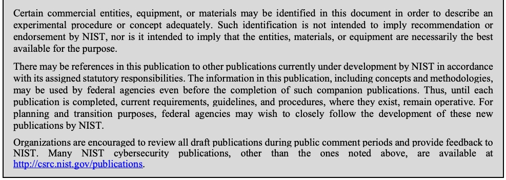

NIST IR 8151 日本語訳
英語タイトル : Dramatically Reducing Software Vulnerabilities: Report to the White House Office of Science and Technology Policy日本語タイトル : ソフトウェアの脆弱性の劇的な削減：ホワイトハウス科学技術政策局への報告書
公開日 : 2016-11-30
原文URL : https://csrc.nist.gov/pubs/ir/8151/final
翻訳編集 : 自動生成（有志による非公式の日本語訳）, 原文取得日 : 2026-10-31, 訳文 : 559 / 560 ブロック
[要約] NIST IR 8151 は、ホワイトハウス科学技術政策局への報告書として、ソフトウェアの脆弱性を劇的に減らすことが求められている状況を踏まえてまとめられたものです。2016 年 2 月の連邦サイバーセキュリティ研究開発戦略計画が示す目標のうち、最初の中期目標に対応するとされています。目的は、脆弱性を発生前に防ぐ、悪用される前に見つける、影響を減らすという三つの観点から、大きな違いをもたらしうる具体的な技術的アプローチを列挙することです。技術的アプローチに加えて、尺度と指標、技術以外のアプローチを扱います。
NISTIR 8151
NISTIR 8151
Dramatically Reducing Software Vulnerabilities
ソフトウェアの脆弱性の劇的な削減
Report to the White House Office of Science and Technology Policy
ホワイトハウス科学技術政策局への報告書
Paul E. Black
Lee Badger
Barbara Guttman
Elizabeth Fong
Paul E. Black
Lee Badger
Barbara Guttman
Elizabeth Fong
This publication is available free of charge from:
https://doi.org/10.6028/NIST.IR.8151
本刊行物は次の場所から無料で入手できます。
https://doi.org/10.6028/NIST.IR.8151
［NIST のロゴ。公的な標章のため、この非公式サイトには掲載していません。原本 PDF を参照してください。］
NISTIR 8151
NISTIR 8151
Dramatically Reducing Software Vulnerabilities
ソフトウェアの脆弱性の劇的な削減
Report to the White House Office of Science and Technology Policy
ホワイトハウス科学技術政策局への報告書
Paul E. Black
Lee Badger
Barbara Guttman
Elizabeth Fong
Information Technology Laboratory
Paul E. Black
Lee Badger
Barbara Guttman
Elizabeth Fong
情報技術研究所
This publication is available free of charge from:
https://doi.org/10.6028/NIST.IR.8151
本刊行物は次の場所から無料で入手できます。
https://doi.org/10.6028/NIST.IR.8151
November 2016
2016 年 11 月
U.S. Department of Commerce
Penny Pritzker, Secretary
米国商務省
Penny Pritzker 長官
National Institute of Standards and Technology
Willie May, Under Secretary of Commerce for Standards and Technology and Director
National Institute of Standards and Technology
Willie May、商務省標準技術担当次官兼所長
National Institute of Standards and Technology Interagency Report 8151
64 pages (November 2016)
米国国立標準技術研究所 省庁間報告書 8151
64 ページ（2016 年 11 月）
This publication is available free of charge from: https://doi.org/10.6028/NIST.IR.8151
本刊行物は次の場所から無料で入手できます: https://doi.org/10.6028/NIST.IR.8151
Certain commercial entities, equipment, or materials may be identified in this document in order to describe an experimental procedure or concept adequately. Such identification is not intended to imply recommendation or endorsement by NIST, nor is it intended to imply that the entities, materials, or equipment are necessarily the best available for the purpose.
原本PDFの抜粋画像

本文書では、実験の手順や概念を適切に説明するために、特定の商業的な組織、装置、または資材を挙げている場合があります。こうした記載は、NIST による推奨や支持を意味するものではなく、また、それらの組織、資材、装置がその目的にとって必ずしも利用可能な最良のものであることを意味するものでもありません。
There may be references in this publication to other publications currently under development by NIST in accordance with its assigned statutory responsibilities. The information in this publication, including concepts and methodologies, may be used by federal agencies even before the completion of such companion publications. Thus, until each publication is completed, current requirements, guidelines, and procedures, where they exist, remain operative. For planning and transition purposes, federal agencies may wish to closely follow the development of these new publications by NIST.
本刊行物では、NIST が割り当てられた法令上の責務に従って現在策定中の他の刊行物に言及している場合があります。概念や方法論を含む本刊行物の情報は、そうした関連刊行物が完成する前であっても、連邦機関が使用する場合があります。したがって、各刊行物が完成するまでは、現行の要件、ガイドライン、手順が存在する場合には、それらが引き続き有効です。計画および移行のため、連邦機関は、NIST によるこれらの新しい刊行物の策定状況を注意深く追いたいと考える場合があります。
Organizations are encouraged to review all draft publications during public comment periods and provide feedback to NIST. Many NIST cybersecurity publications, other than the ones noted above, are available at http://csrc.nist.gov/publications.
組織は、パブリックコメントの期間中にすべてのドラフト刊行物を確認し、NIST にフィードバックを提供することが推奨されます。上記以外の NIST のサイバーセキュリティ関連刊行物の多くは、http://csrc.nist.gov/publications で入手できます。
Comments on this publication may be submitted to:
本刊行物に対するコメントの提出先:
National Institute of Standards and Technology
Attn: Software and Systems Division, Information Technology Laboratory
100 Bureau Drive (Mail Stop 8970) Gaithersburg, MD 20899-8970
Email: paul.black@nist.gov
National Institute of Standards and Technology
Attn: Software and Systems Division, Information Technology Laboratory
100 Bureau Drive (Mail Stop 8970) Gaithersburg, MD 20899-8970
電子メール: paul.black@nist.gov
All comments are subject to release under the Freedom of Information Act (FOIA).
すべてのコメントは、情報自由法（FOIA）に基づいて公開される場合があります。
Abstract
概要
The call for a dramatic reduction in software vulnerability is heard from multiple sources, recently from the February 2016 Federal Cybersecurity Research and Development Strategic Plan. This plan starts by describing well known risks: current systems perform increasingly vital tasks and are widely known to possess vulnerabilities. These vulnerabilities are often not easy to discover and difficult to correct. Cybersecurity has not kept pace, and the pace that is needed is rapidly accelerating. The goal of this report is to present a list of specific technical approaches that have the potential to make a dramatic difference in reducing vulnerabilities – by stopping them before they occur, by finding them before they are exploited or by reducing their impact.
ソフトウェアの脆弱性の劇的な削減を求める声は、複数の方面から上がっており、最近では 2016 年 2 月の連邦サイバーセキュリティ研究開発戦略計画（Federal Cybersecurity Research and Development Strategic Plan）にも見られます。この計画は、よく知られたリスクの説明から始まります。現在のシステムはますます重要な任務を担っており、脆弱性を抱えていることが広く知られています。こうした脆弱性は発見が容易でないことが多く、修正も困難です。サイバーセキュリティはこれに追いついておらず、必要とされる速度は急速に上がっています。本報告書の目的は、脆弱性の削減に劇的な違いをもたらす可能性のある具体的な技術的アプローチの一覧を示すことです。そのアプローチとは、脆弱性が生じる前に防ぐこと、悪用される前に見つけること、または影響を減らすことです。
Keywords:
キーワード:
Measurement; metrics; software assurance; software measures, security vulnerabilities; reduce software vulnerability.
測定、メトリクス、ソフトウェアアシュアランス、ソフトウェア指標、セキュリティ脆弱性、ソフトウェアの脆弱性の削減。
Acknowledgements:
謝辞:
Many thanks to Rajeev Joshi (rajeev.joshi@jpl.nasa.gov) for contributions to Sect. 2.3 Additive Software Analysis Techniques.
Sect. 2.3 Additive Software Analysis Techniques への貢献に対し、Rajeev Joshi（rajeev.joshi@jpl.nasa.gov）に深く感謝します。
Thanks also to W. Konrad Vesey (william.k.vesey.ctr@mail.mil), Contractor, MIT Lincoln Laboratory, Office of the Assistant Secretary of Defense, Research and Engineering, for material in Sect. 2.5 Moving Target Defense (MTD) and Automatic Software Diversity. Much of the wording is directly from a private communication from him.
Sect. 2.5 Moving Target Defense (MTD) and Automatic Software Diversity の内容について、国防次官補（研究・工学担当）室の MIT リンカーン研究所の契約職員である W. Konrad Vesey（william.k.vesey.ctr@mail.mil）にも感謝します。文章の多くは、同氏からの私信から直接引いたものです。
We thank Terry Cohen, Mark Cornwell, John Diamant, Jeremy Epstein, D. Richard Kuhn, Andrew Murren, Kenneth S Thompson, Jan Vandenbos, David Wheeler and Lok Yan for their significant comments and suggestions, which greatly improved this report. We also thank the many others who suggested improvements, asked questions and submitted comments.
Terry Cohen、Mark Cornwell、John Diamant、Jeremy Epstein、D. Richard Kuhn、Andrew Murren、Kenneth S Thompson、Jan Vandenbos、David Wheeler、Lok Yan の各氏から、本報告書を大きく改善する重要なコメントと提案をいただきました。感謝します。改善案を示し、質問を寄せ、コメントを提出してくださった多くの方々にも感謝します。
Table of Contents
目次
1 Introduction
1 はじめに
The call for a dramatic reduction in software vulnerability is being heard from multiple sources, including the February 2016 Federal Cybersecurity Research and Development Strategic Plan [FCRDSP16]. This plan starts by describing a well-known risk: current systems perform increasingly vital tasks and are widely known to possess vulnerabilities. These vulnerabilities are often not easy to discover and difficult to correct. Cybersecurity has not kept pace, and the pace that is needed is rapidly accelerating. The plan defines goals for the near, mid and long term. This report addresses the first mid-term goal:
ソフトウェアの脆弱性の劇的な削減を求める声は、複数の方面から上がっており、2016 年 2 月の連邦サイバーセキュリティ研究開発戦略計画 [FCRDSP16] もその一つです。この計画は、よく知られたリスクの説明から始まります。現在のシステムはますます重要な任務を担っており、脆弱性を抱えていることが広く知られています。こうした脆弱性は発見が容易でないことが多く、修正も困難です。サイバーセキュリティはこれに追いついておらず、必要とされる速度は急速に上がっています。同計画は、短期・中期・長期の目標を定めています。本報告書は、その最初の中期目標を扱います：
Achieve S&T [Science and Technology] advances to reverse adversaries’ asymmetrical advantages, through sustainably secure systems development and operation. … This goal is two-pronged: first, the design and implementation of software, firmware, and hardware that are highly resistant to malicious cyber activities (e.g., software defects, which are common, give rise to many vulnerabilities) …
敵対者の非対称な優位性を覆すため、持続的に安全なシステムの開発と運用を通じて、S&T [科学技術] を前進させる。… この目標には二つの柱があります。第一に、悪意あるサイバー活動に対して高い耐性を持つソフトウェア、ファームウェア、ハードウェアの設計と実装（たとえば、一般的なソフトウェアの欠陥が多くの脆弱性を生む）…
There are many different definitions of the term “vulnerability” covering various combinations of concepts, including knowledge, attacks, exploitability, risk, intention, threat, scope and time of introduction. For the purposes of this report, we define vulnerability as one or more weaknesses that can be accidentally triggered or intentionally exploited and result in a violation of desired system properties. A weakness is an undesired characteristic of a system’s requirements, design or implementation [Black11a]. This definition excludes
「脆弱性」という用語には、知識、攻撃、悪用可能性、リスク、意図、脅威、範囲、混入時期といった概念をさまざまに組み合わせた多くの定義があります。本報告書では、脆弱性を、偶発的に引き起こされたり意図的に悪用されたりして、望ましいシステム特性の違反をもたらしうる一つ以上の弱点と定義します。弱点とは、システムの要件、設計、または実装における望ましくない特性です [Black11a]。この定義は、次のものを除外します。
•manual configuration or operational mistakes, such as installing a program as world-readable or setting a trivial password for administrator access;
•プログラムを誰でも読み取り可能な状態でインストールする、管理者アクセスに単純なパスワードを設定するといった、手作業による設定上または運用上の誤り。
•insider malfeasance, such as exfiltration by Edward Snowden;
•Edward Snowden による情報持ち出しのような、内部者による不正行為。
•functional bugs, such as the mixture of SI (International System of Units) and Imperial units, which led to the loss of the Mars Climate Orbiter in 1999 [Oberg99];
•SI（国際単位系）とヤード・ポンド法の単位が混在して 1999 年の火星気候オービター（Mars Climate Orbiter）の喪失につながった [Oberg99] ような、機能上のバグ。
•purposely introduced malware or corrupting “mis-features” in regular code, such as allowing root access if the user name is “JoshuaCaleb” and
•ユーザー名が “JoshuaCaleb” なら root アクセスを許可するといった、通常のコードに意図的に仕込まれたマルウェア、または破壊的な「誤機能」
•software weaknesses that cannot be exploited (by “outsiders”) as a result of input filtering or other mitigations.
•入力のフィルタリングやその他の緩和策の結果として、（「部外者」には）悪用できないソフトウェアの弱点。
Great strides have been made in defining software vulnerabilities, cataloging them and understanding them. Additionally, great strides have been made in educating the software community about vulnerabilities, attendant patches and underlying weaknesses. This work, however, is insufficient. Significant vulnerabilities are found routinely, many vulnerabilities lie undiscovered for years and patches are often not applied. Clearly a different approach—one that relies on improving software—is needed.
ソフトウェアの脆弱性を定義し、目録にし、理解するうえでは、大きな進歩がありました。さらに、脆弱性、それに伴うパッチ、根底にある弱点についてソフトウェアコミュニティを教育するうえでも、大きな進歩がありました。しかし、この取り組みは不十分です。重大な脆弱性が日常的に見つかり、多くの脆弱性が何年も発見されないままとなり、パッチはしばしば適用されません。ソフトウェア自体の改善に頼る、別のアプローチが必要であることは明らかです。
Strengthening protection requires increasing assurance that the products people develop and deploy are highly resistant to malicious cyber activities, because they include very few vulnerabilities … [FCRDSP16, p. 17]
保護を強化するには、人々が開発・展開する製品が、脆弱性をごくわずかしか含まないため、悪意あるサイバー活動に対して高い耐性を持つという確信（アシュアランス）を高めることが必要です … [FCRDSP16, p. 17]
1.1 Scope of Report
1.1 報告書の範囲
The goal of this report is to present a list of specific technical approaches that have the potential to make a dramatic difference reducing vulnerabilities – by stopping them before they occur, by finding them before they are exploited or by reducing their impact.
本報告書の目的は、脆弱性の削減に劇的な効果をもたらす可能性のある具体的な技術的アプローチの一覧を示すことです。そのアプローチとは、脆弱性が生じる前に防ぐこと、悪用される前に見つけること、または影響を減らすことです。
•Stopping vulnerabilities before they occur generally includes improved methods for specifying, designing and building software.
•脆弱性が生じる前に防ぐことには、一般に、ソフトウェアの仕様化、設計、構築の方法の改善が含まれます。
•Finding vulnerability includes better testing techniques and more efficient use of multiple testing methods.
•脆弱性を見つけることには、より優れたテスト技法と、複数のテスト手法のより効率的な使用が含まれます。
•Reducing the impact of vulnerabilities refers to techniques to build architectures that are more resilient, so that vulnerabilities cannot be exploited for significant damage.
•脆弱性の影響を減らすとは、より回復力のあるアーキテクチャを構築し、脆弱性を悪用されても重大な被害が生じないようにする技法を指します。
The report does not segregate the approaches into these three bins, since some approaches may include pieces from multiple bins.
アプローチによっては複数の区分にまたがる要素を含むため、本報告書ではアプローチをこの三つの区分に分けていません。
The list of approaches in this report is not comprehensive. It is intended to show how a wide variety of approaches can make a significant impact. New approaches will continue to be developed and brought to general use.
本報告書に挙げたアプローチの一覧は、網羅的ではありません。多様なアプローチが大きな効果をもたらしうることを示すためのものです。新しいアプローチは今後も開発され、一般に使われるようになっていきます。
The list of approaches for reducing vulnerabilities focuses on approaches that meet three criteria:
脆弱性を削減するためのアプローチの一覧は、次の三つの基準を満たすアプローチに焦点を当てています：
1.Dramatic impact,
1.劇的な効果があること、
2.3 to 7-year time frame and
2.3 年から 7 年の期間で実現できること、
3.Technical activities.
3.技術的な活動であること。
Dramatic. This means approaches that are broadly applicable and that significantly contribute to the goal of reducing vulnerabilities by two orders of magnitude. In the case of typical software, estimates are up to 25 errors per 1000 lines of code [McConnell04, p. 521]. Nearly two-thirds of vulnerabilities come from simple programming errors [Heffley04]. These approaches have been selected for the possibility of reinforcing the ambition of reaching 25 errors per 100000 lines of code for those types of software and achieving corresponding reductions for other types. (Systems with near-zero errors are produced routinely today in the aerospace industry, but at several times the cost of ordinary software.) Determining whether an approach has a dramatic impact requires the ability to measure it. Measuring software quality is a difficult task. Parallel efforts on improving the measurement of software vulnerabilities are going on.
劇的。これは、広く適用でき、脆弱性を 2 桁削減するという目標に大きく寄与するアプローチを意味します。典型的なソフトウェアでは、コード 1000 行あたり最大 25 件の誤りがあると推定されています [McConnell04, p. 521]。脆弱性の 3 分の 2 近くは、単純なプログラミングの誤りに由来します [Heffley04]。これらのアプローチは、そうした種類のソフトウェアでコード 100000 行あたり 25 件の誤りという目標に到達する意欲を後押しし、他の種類のソフトウェアでもそれに相当する削減を達成できる可能性があるものとして選ばれています。（誤りがほぼゼロのシステムは、航空宇宙産業では今日でも日常的に作られていますが、そのコストは通常のソフトウェアの数倍です。）アプローチが劇的な効果をもたらすかどうかを判断するには、それを測定できることが必要です。ソフトウェアの品質を測定するのは困難な作業です。ソフトウェアの脆弱性の測定を改善する取り組みも、並行して進められています。
3- to 7-year time frame. This time frame was selected because it is far enough out to make dramatic changes, based on existing techniques that have not reached their full potential for impact. It is a time frame that it is reasonable to speculate about. Beyond this time frame, it is too difficult to predict what new technologies and techniques will be developed, potentially making their own set of dramatic changes on how information technology is used. In the near future, the emphasis will be on implementing techniques that are already being deployed, such as work in secure software development and testing. The dividing line between deployed and future techniques is not crisp. If a technique is widely used or used by major software developers, it was not included although broader adoption of the technique would be beneficial.
3 年から 7 年の期間。この期間を選んだのは、影響力を十分に発揮しきれていない既存の技法に基づいて劇的な変化を起こせるだけ先であり、かつ、見通しを語るのが妥当な期間だからです。この期間より先になると、どのような新しい技術や技法が開発されるかを予測するのは難しすぎ、それらが情報技術の使われ方に独自の劇的な変化をもたらす可能性もあります。近い将来には、安全なソフトウェア開発やテストにおける取り組みのように、すでに展開されつつある技法の実装に重点が置かれます。展開済みの技法と将来の技法との境界は明確ではありません。広く使われている技法や大手ソフトウェア開発者が使っている技法は、より広く採用されれば有益であるとしても、含めていません。
Technical. There are many different types of approaches to reducing software vulnerabilities, many of which are not primarily technical – from helping users meaningfully request security to funding research and operational activities and training all parties, who design, build, test and use software. During the development of this report, many ideas were put forward across this broad span. The report only addresses technical approaches in order to have a manageable scope, which builds on expertise available during the development of the report. These other areas are critical, too.
技術的。ソフトウェアの脆弱性を減らすアプローチには多くの種類があり、その多くは主として技術的なものではありません。利用者がセキュリティを意味のある形で要求できるよう支援することから、研究や運用活動への資金提供、ソフトウェアを設計・構築・テスト・使用するすべての関係者のトレーニングに至るまで、さまざまなものがあります。本報告書の作成中には、この幅広い範囲にわたって多くのアイデアが出されました。本報告書は、扱いやすい範囲にするため、また報告書の作成中に得られた専門知識を活用するため、技術的なアプローチのみを扱います。それ以外の分野も同様に重要です。
During the drafting of this report, many excellent ideas were brought forth that are outside the scope of this report and are summarized in Section 4. Examples of these activities include:
本報告書の作成中には、本報告書の範囲外の優れたアイデアが多く出されました。それらは第 4 節にまとめています。こうした活動の例として、次のものがあります。
•Improved funding,
•資金提供の改善、
•Improving education,
•教育の改善、
•More research for various aspects of software understanding,
•ソフトウェアの理解に関するさまざまな側面についてのさらなる研究、
•Increased use of grand challenges and competitions,
•グランドチャレンジや競技会の活用の拡大、
•Providing better methods for consumers of software to ask for and evaluate lower-vulnerability software,
•ソフトウェアの利用者が、脆弱性のより少ないソフトウェアを要求し評価するための、より優れた方法の提供、
•Liability and standards and
•責任と標準、
•Threat analysis.
•脅威分析。
This report excludes a discussion of vulnerabilities in hardware. This is not to say that these are not critical. These can be addressed in another report. This report targets a broad range of software, including government-contracted software, proprietary and open source software. It covers software for general use, mobile devices and embedding in appliances and devices. The goal is to prevent vulnerabilities in new code, in addition to identifying and fixing vulnerabilities in existing code.
本報告書は、ハードウェアの脆弱性についての議論を含みません。これは、ハードウェアの脆弱性が重要でないという意味ではありません。それらは別の報告書で扱うことができます。本報告書は、政府が契約したソフトウェア、プロプライエタリソフトウェア、オープンソースソフトウェアを含む、幅広いソフトウェアを対象とします。汎用のソフトウェア、モバイルデバイス向けのソフトウェア、機器や装置に組み込まれるソフトウェアを対象とします。目標は、既存のコードの脆弱性を特定して修正することに加えて、新しいコードに脆弱性が生じるのを防ぐことです。
1.2 Findings
1.2 所見
While the problem of reducing software vulnerabilities is a difficult one and clearly requires a mixture of technical, operational, managerial, psychological and cultural changes to address the problem, it is possible to make a dramatic difference. This report describes five mid-term approaches that have the potential to address technical aspects of the problem. The approaches included here are not a comprehensive list; they represent a wide range of potential approaches and highlight how reducing software vulnerabilities can be accomplished. All of these approaches will require improved research infrastructure, including significantly better metrics.
ソフトウェアの脆弱性を減らすという問題は難しく、その解決には、技術的、運用的、管理的、心理的、文化的な変化を組み合わせる必要があることは明らかですが、劇的な違いをもたらすことは可能です。本報告書は、この問題の技術的な側面に対処できる可能性のある、五つの中期的アプローチを説明します。ここに挙げたアプローチは網羅的な一覧ではありません。幅広い潜在的アプローチを代表するものであり、ソフトウェアの脆弱性の削減をどのように達成できるかを浮き彫りにします。これらのアプローチはいずれも、大幅に優れたメトリクスを含む、改善された研究基盤を必要とします。
As noted, they cannot be successful by themselves and will need to be integrated into the larger software developer and user communities. Furthermore, this report does not focus on current trends in secure software development that are already in significant use.
前述のとおり、これらのアプローチはそれだけでは成功できず、より広範なソフトウェア開発者コミュニティおよび利用者コミュニティに統合される必要があります。さらに、本報告書は、すでに相当程度利用されている安全なソフトウェア開発の現在の動向には焦点を当てていません。
1.3 Audience
1.3 想定読者
The primary audience for the report is the White House Office of Science and Technology Policy (OSTP). It is anticipated that other policy bodies, funders and researchers will find the report useful as they consider investments and programs to improve software quality. Since the report focuses on a three to seven-year time frame, it is not intended as a guide for software developers.
本報告書の主な読者は、ホワイトハウス科学技術政策局（OSTP）です。ほかの政策機関、資金提供者、研究者も、ソフトウェアの品質を改善するための投資やプログラムを検討する際に、本報告書を有用と考えることが見込まれます。本報告書は 3 年から 7 年の期間に焦点を当てているため、ソフトウェア開発者向けの手引きとして意図したものではありません。
1.4 Measures
1.4 指標
There are multiple efforts to define software vulnerabilities, their prevalence, their detectability and the efficacy of detection and mitigation techniques. The ability to measure software can play an important role in dramatically reducing software vulnerabilities. Industry requires evidence of the extent of such vulnerabilities, in addition to knowledge in determining which techniques are most effective in developing software with far fewer vulnerabilities. With effective measures that can function as market signals, industry can favor and select low vulnerability software, thus encouraging development of better software [Grigg08]. Additionally, and more critically, industry requires guidance in identifying the best places in code to deploy mitigations or other actions. This evidence comes from measuring, in the broadest sense, or assessing the properties of software.
ソフトウェアの脆弱性、その発生率、検出可能性、検出・緩和技法の有効性を定義するための取り組みは、複数あります。ソフトウェアを測定する能力は、ソフトウェアの脆弱性を劇的に減らすうえで重要な役割を果たしえます。産業界は、脆弱性がはるかに少ないソフトウェアを開発するにはどの技法が最も有効かを判断するための知識に加えて、そうした脆弱性の程度を示す証拠を必要としています。市場のシグナルとして機能する有効な指標があれば、産業界は脆弱性の少ないソフトウェアを選択でき、それによってより良いソフトウェアの開発が促されます [Grigg08]。さらに、より重要なこととして、産業界は、コードのどこに緩和策やその他の対策を展開するのが最善かを特定するための指針を必要としています。この証拠は、最も広い意味での測定、すなわちソフトウェアの特性を評価することから得られます。
1.5 Methodology
1.5 方法論
In order to produce the list of approaches, the Office of Science and Technology Policy (OSTP) asked NIST to lead a community-based effort. The report was developed during an eight-month period. Given the compressed time frame, the focus of the report was kept to the criteria described above to highlight promising approaches rather than perform a comprehensive analysis. NIST consulted with multiple experts in the software assurance community including:
アプローチの一覧を作成するため、科学技術政策局（OSTP）は NIST に、コミュニティを基盤とする取り組みを主導するよう依頼しました。報告書は 8 か月の期間で作成されました。期間が限られていたため、報告書の焦点は、包括的な分析を行うことではなく、有望なアプローチを浮き彫りにするために、上述の基準に絞られました。NIST は、次のものを含め、ソフトウェアアシュアランスコミュニティの複数の専門家に相談しました。
•Two OSTP-hosted inter-agency roundtables;
•OSTP が主催した 2 回の省庁間ラウンドテーブル。
•Half-day session at the Software and Supply Chain Assurance (SSCA) Summer Forum;
•ソフトウェアおよびサプライチェーンアシュアランス（SSCA）夏季フォーラムでの半日のセッション。
•All-day workshop on Software Measures and Metrics to Reduce Security Vulnerabilities;
•セキュリティ脆弱性を減らすためのソフトウェア測定とメトリクスに関する終日のワークショップ;
•Two-day workshop on Reducing Software Defects and Vulnerabilities, hosted by the Software Productivity, Sustainability, and Quality (SPSQ) Working Group of the Networking and Information Technology Research and Development (NITRD) Program and
•ネットワーキングおよび情報技術研究開発（NITRD）プログラムのソフトウェア生産性・持続可能性・品質（SPSQ）ワーキンググループが主催した、ソフトウェアの欠陥と脆弱性の削減に関する 2 日間のワークショップ
•Public comment from 4 to 18 October 2016.
•2016 年 10 月 4 日から 18 日までのパブリックコメント。
1.6 Report Organization
1.6 報告書の構成
The report is organized into two major sections. The first, Section 2, enumerates technical approaches and the second, Section 3, addresses measures.
報告書は二つの主要な節で構成されています。第 2 節では技術的アプローチを列挙し、第 3 節では指標を扱います。
Section 2 has subsections for technical approaches to deal with vulnerabilities in software. These include formal methods, such as sound static program analyses, model checkers and Boolean Satisfiability (SAT) solvers. It also suggests having a directory of verified tools and verified code. This section addresses system level security, including operating system containers and microservices. Additive software analysis techniques are addressed. Finally, it discusses moving target defenses (MTD) and automatic software diversity. These include compile-time techniques, system or network techniques and operating system techniques.
第 2 節には、ソフトウェアの脆弱性に対処する技術的アプローチごとの小節があります。これには、健全な静的プログラム解析、モデル検査器、ブール充足可能性（SAT）ソルバーなどの形式手法が含まれます。また、検証済みツールと検証済みコードのディレクトリを持つことも提案しています。この節では、オペレーティングシステムのコンテナーやマイクロサービスを含むシステムレベルのセキュリティを扱います。追加的なソフトウェア解析技法も扱います。最後に、移動目標防御（MTD）と自動的なソフトウェアの多様化を論じます。これらには、コンパイル時の技法、システムまたはネットワークの技法、オペレーティングシステムの技法が含まれます。
Each subsection follows the same format:
各小節は同じ形式に従っています。
•Definition and Background: Definition of the area and background;
•定義と背景: その分野の定義と背景。
•Maturity Level: How mature the area is, including a discussion of whether the approach has been used in the “real world” or just in a laboratory and issues related to scalability and usability;
•成熟度: アプローチがどの程度成熟しているか。「実世界」で使われたのか、実験室でのみ使われたのかに関する議論、およびスケーラビリティとユーザビリティに関する課題を含みます。
•Basis for Confidence: Rationale for why this could work;
•確信の根拠: それが機能しうる理由。
•Rationale for Potential Impact and
•潜在的な影響の根拠、
•Further Reading, including papers and other materials.
•参考文献（論文その他の資料を含む）。
Section 3 covers software measures. It is designed to encourage the adoption of measurement and tools to address vulnerabilities in software. It addresses product measures and how to develop better code. It also addresses the criticality of software security and quality measures.
第 3 節では、ソフトウェアの指標を扱います。この節は、ソフトウェアの脆弱性に対処するための測定とツールの採用を促すように構成されています。製品の指標と、より良いコードの開発方法を扱います。また、ソフトウェアのセキュリティと品質の指標の重要性も扱います。
After those two major sections are Section 4, on crosscutting issues, such as engaging the research community, education and vehicles to transition the technical approaches to general use, and references in Section 5.
この二つの主要な節の後には、研究コミュニティの巻き込み、教育、技術的アプローチを一般的な利用へ移行させる手段といった、横断的な課題を扱う第 4 節と、第 5 節の参考文献があります。
2 Technical Approaches
2 技術的アプローチ
There are many approaches at varying levels of maturity that show great promise for reducing the number of vulnerabilities in software. This report highlights five of them that are sufficiently mature and have shown success, so that it is possible to extrapolate into a three to seven-year horizon. This list is not meant to be exhaustive, but rather to show that it is possible to make significant progress in reducing vulnerabilities and to lay out paths to achieve this ambitious goal. One of the significant themes of the SPSQ workshop was the need to improve not just software, but also testing tools by applying formal techniques.
ソフトウェアの脆弱性の数を減らすうえで大きな期待が持てるアプローチは、成熟度もさまざまに数多くあります。本報告書は、そのうち、十分に成熟していて成功を示しており、3 年から 7 年の期間に成果を外挿できる五つを取り上げます。この一覧は網羅的であることを意図したものではなく、脆弱性の削減で大きな進展が可能であることを示し、この野心的な目標を達成する道筋を示すためのものです。SPSQ ワークショップの重要なテーマの一つは、ソフトウェアだけでなく、形式的な技法を適用してテストツールも改善する必要があるということでした。
2.1 Formal Methods
2.1 形式手法
Formal methods include all software analysis approaches based on mathematics and logic, including parsing, type checking, correctness proofs, model-based development and correct-by-construction. Formal methods can help software developers achieve greater assurance that entire classes of vulnerabilities are absent and can also help reduce unpredictable cycles of expensive testing and bug fixing.
形式手法には、構文解析、型検査、正しさの証明、モデルベース開発、構成による正しさ（correct-by-construction）を含む、数学と論理に基づくあらゆるソフトウェア解析アプローチが含まれます。形式手法は、ソフトウェア開発者が、脆弱性のクラス全体が存在しないというより高い確信（アシュアランス）を得るのに役立ち、また、コストのかかるテストとバグ修正の予測不能な繰り返しを減らすのにも役立ちます。
In the early days of programming, some practitioners proved the correctness of their programs. That is, given language semantics, they logically proved that their program had certain properties or gave certain results. As the use of software exploded and programs grew so large that purely manual proofs were infeasible, formal correctness arguments lost favor. In recent decades, developments, such as the breathtaking increase in processing capacity predicted by Moore’s law, multi-core processors and cloud computing, made orders of magnitude more computing power readily available. Advances in algorithms for solving Boolean Satisfiability (SAT) problems, satisfiability modulo theories (SMT) [Bjørner16], decision procedures (e.g., ordered binary decision diagrams - OBDD) and reasoning models (e.g., abstract interpretation and separation logic) dramatically slashed resources required to answer questions about software.
プログラミングの初期には、自分のプログラムの正しさを証明する実務者もいました。つまり、言語の意味論を前提として、そのプログラムが特定の性質を持つこと、あるいは特定の結果を与えることを、論理的に証明していたのです。ソフトウェアの利用が爆発的に広がり、プログラムが大きくなって純粋に手作業での証明が実行不可能になるにつれ、形式的な正しさの議論は支持を失いました。近年の数十年では、ムーアの法則が予測した息をのむような処理能力の増大、マルチコアプロセッサ、クラウドコンピューティングといった進展によって、桁違いに大きな計算能力が容易に利用できるようになりました。ブール充足可能性（SAT）問題を解くアルゴリズム、充足可能性モジュロ理論（SMT）[Bjørner16]、決定手続き（たとえば順序付き二分決定図（OBDD））、推論モデル（たとえば抽象解釈や分離論理）の進歩により、ソフトウェアに関する問いに答えるために必要な資源は劇的に削減されました。
One early effort at using formal methods to achieve far fewer vulnerabilities was the 1980s’ DoD Trusted Computer Security Evaluation Criteria (TCSEC). The TCSEC specified multiple levels of software assurance. The highest level, A1, required formal specification of the system and mathematical proof of correspondence between the code and the specification. Successful theorem proving tools were developed and several formally-proved systems were produced, but the expense and time required was prohibitive—as much as two years—for practical use.
形式手法を使って脆弱性をはるかに少なくしようとした初期の取り組みの一つが、1980 年代の国防総省（DoD）の信頼できるコンピュータシステム評価基準（TCSEC）でした。TCSEC は、ソフトウェアアシュアランスの複数のレベルを規定していました。最高レベルである A1 は、システムの形式仕様と、コードと仕様との対応の数学的証明を要求しました。成功した定理証明ツールが開発され、形式的に証明されたシステムもいくつか作られましたが、必要な費用と時間は、実用には法外なもの（最大で 2 年）でした。
By the 1990s, formal methods had developed a reputation as taking far too long, in machine time, person years and project time, and requiring a PhD in computer science and mathematics to use them. This is no longer the case. Formal methods are widely used today. For instance, compilers use SAT solvers to allocate registers and optimize code. Operating systems use algorithms formally guaranteed to avoid deadlock. Kiniry and Zimmerman call these “Secret Ninja Formal Methods” [Kiniry08]: they are invisible to the user, except to report that something is not right. In contrast to such “invisible” use of formal methods, overt use often requires recasting problems into a form compatible with formal methods tools.
1990 年代には、形式手法は、マシン時間、人年、プロジェクト期間のいずれでもあまりに時間がかかり、使うにはコンピュータサイエンスと数学の博士号が必要だという評判を得ていました。今ではそうではありません。形式手法は今日広く使われています。たとえば、コンパイラーは SAT ソルバーを使ってレジスタを割り当て、コードを最適化します。オペレーティングシステムは、デッドロックを避けることが形式的に保証されたアルゴリズムを使っています。Kiniry と Zimmerman はこれを「秘密の忍者形式手法（Secret Ninja Formal Methods）」と呼んでいます [Kiniry08]。何かがおかしいと報告する場合を除き、利用者には見えないためです。こうした形式手法の「目に見えない」使い方と対照的に、あからさまな使い方では、問題を形式手法ツールと互換性のある形に書き直すことがしばしば必要です。
Overt formal methods are recommended in automotive [ISO26262-6] and railway [Boulanger15] standards. Formal proof techniques have significantly reduced the effort to achieve objectives defined by the airborne standard, DO 178B [Randimbivololona99]. Its successor, DO 178C, has an entire supplement, DO 333, devoted to the use of formal methods for software verification. Most proposed cryptographic protocols are now examined with model checkers for possible exploits, and analysts can perform mostly-automated proofs that implementations of cryptographic algorithms match specifications [Carter13]. Practitioners also use model checkers to look for attack paths in networks.
あからさまな形式手法は、自動車 [ISO26262-6] や鉄道 [Boulanger15] の標準で推奨されています。形式証明の技法は、航空機搭載ソフトウェアの標準 DO 178B が定める目標を達成するための労力を大幅に減らしました [Randimbivololona99]。その後継の DO 178C には、ソフトウェア検証のための形式手法の使用に特化した補足文書 DO 333 があります。提案される暗号プロトコルの大半は、今では悪用の可能性についてモデル検査器で調べられており、分析者は、暗号アルゴリズムの実装が仕様と一致することを、大部分が自動化された証明で示すことができます [Carter13]。実務者は、ネットワークの攻撃経路を探すためにもモデル検査器を使っています。
Despite their strengths, formal methods are less effective if there is no clear statement of software requirements or if what constitutes proper software behavior can only be determined by human judgment or through balancing many conflicting factors. Thus, we would not expect formal methods to contribute as much to the evaluation of the usability of a user interface, development of exploratory software or unstructured problems.
形式手法には強みがある一方で、ソフトウェア要件の明確な記述がない場合や、適切なソフトウェアの振る舞いが何であるかを人間の判断によってしか、あるいは相反する多くの要因のバランスをとることによってしか決められない場合には、効果が下がります。したがって、ユーザーインターフェースのユーザビリティの評価、探索的ソフトウェアの開発、構造化されていない問題について、形式手法が大きく貢献することは期待できません。
Formal methods include many, many techniques at all stages of software development and in many different application areas. We do not list every potentially helpful formal method. Instead, we concentrate on a few methods that may contribute significantly in the mid-term.
形式手法には、ソフトウェア開発のあらゆる段階とさまざまな応用分野にわたる、非常に多くの技法が含まれます。役に立ちうる形式手法をすべて列挙することはしません。代わりに、中期的に大きく貢献しうる少数のアプローチに集中します。
2.1.1 Sound Static Program Analysis
2.1.1 健全な静的プログラム解析
Static analysis is the examination of software for specific properties without executing it. For our purposes, we only consider automated analysis. Heuristic analysis is faster than sound analysis, but lacks assurance that comes from a chain of logical reasoning. Some questions can only be answered by running the software under analysis, i.e., through dynamic analysis. Combining static and dynamic analysis yields a hybrid technique. In particular, executions may produce existence proofs of properties that cannot be confirmed using static techniques only.
静的解析とは、ソフトウェアを実行せずに特定の性質を調べることです。本報告書の目的では、自動化された解析のみを考えます。ヒューリスティック解析は健全な解析より高速ですが、論理的推論の連鎖から得られるアシュアランスを欠いています。問いによっては、解析対象のソフトウェアを実行すること、すなわち動的解析によってしか答えられないものもあります。静的解析と動的解析を組み合わせると、ハイブリッド技法になります。特に、実行によって、静的技法だけでは確認できない性質の存在証明が得られる場合があります。
Many representations of software (e.g., requirements, architecture, source code and executables) may be statically analyzed. Source code analysis, however, is the most mature. One advantage of source code analysis is that the context of problems identified in source code can be communicated to software developers using a familiar representation: the code itself. When other representations are analyzed, an additional step is required to render a warning into a form that people can first understand and then relate to a program under analysis.
ソフトウェアの多くの表現（たとえば要件、アーキテクチャ、ソースコード、実行可能ファイル）は、静的に解析できます。ただし、ソースコード解析が最も成熟しています。ソースコード解析の利点の一つは、ソースコード中で特定された問題の文脈を、ソフトウェア開発者に馴染みのある表現、つまりコードそのものを使って伝えられることです。ほかの表現を解析する場合は、警告を、人がまず理解でき、さらに解析対象のプログラムと結び付けられる形にする追加の手順が必要です。
According to Doyle’s assessment, sound static analysis is superior to current software development practices in terms of coverage, scalability and benefit for the effort [Doyle16]. We believe that one limitation is that it is difficult to specify some properties in available terms.
Doyle の評価によれば、健全な静的解析は、網羅性、スケーラビリティ、労力に対する効果の点で、現在のソフトウェア開発の実践より優れています [Doyle16]。利用可能な用語では一部の性質を指定するのが難しいことが、一つの限界だと考えます。
Formal specification and sound static analysis have shown significant applicability in recent years. For example, the Tokeneer project shows that software can be developed with formal methods faster and cheaper and with fewer bugs than with traditional software development techniques [Barnes06, Woodcock10]. TrustInSoft used Frama-C to prove the absence of a set of Common Weakness Enumeration (CWE) classes in PolarSSL, now known as mbed TLS [Bakker14, Regehr15]. Ourghanlian compares the use of PolySpace Verifier, Frama-C and Astrée to assess safety-critical software in nuclear power plants [Ourghanlian14]. Sound static analysis and other formal methods are extensively employed for software development in areas beyond transportation, aerospace and nuclear plant control [Voas16b].
形式仕様と健全な静的解析は、近年、大きな適用可能性を示しています。たとえば、Tokeneer プロジェクトは、形式手法を用いると、従来のソフトウェア開発技法よりも速く、安価に、バグも少なくソフトウェアを開発できることを示しています [Barnes06, Woodcock10]。TrustInSoft は Frama-C を使って、PolarSSL（現在の mbed TLS）に共通脆弱性タイプ一覧（CWE）の一部のクラスが存在しないことを証明しました [Bakker14, Regehr15]。Ourghanlian は、原子力発電所の安全上重要なソフトウェアを評価するための PolySpace Verifier、Frama-C、Astrée の使用を比較しています [Ourghanlian14]。健全な静的解析やその他の形式手法は、輸送、航空宇宙、原子力発電所の制御にとどまらない分野のソフトウェア開発で広く使われています [Voas16b]。
These developments illustrate a few of the many uses of static analysis. Going forward, static analysis has the potential to efficiently preclude several classes of errors in newly-developed software and to reduce the uncertainty regarding resources needed to reach higher levels of assurance through testing.
これらの進展は、静的解析の多くの用途のうちのいくつかを示しています。今後、静的解析は、新たに開発されるソフトウェアにおけるいくつかのクラスの誤りを効率的に排除し、テストによってより高いレベルのアシュアランスに到達するために必要な資源の不確実性を減らす可能性を持っています。
2.1.2 Model Checkers, SAT Solvers and Other “Light Weight” Decision Algorithms
2.1.2 モデル検査器、SAT ソルバー、その他の「軽量な」決定アルゴリズム
These algorithms can answer questions about desirable higher level properties, such as that a protocol only allows sensitive text to be read if one has a key, that security properties are preserved by the system, that an assignment of values satisfies multiple constraints or that there are no paths to breaches via (known) attacks. These algorithms can also be applied to analyze detailed design artifacts, such as finite (and infinite) state machines.
これらのアルゴリズムは、より高水準の望ましい性質に関する問いに答えることができます。たとえば、プロトコルが、鍵を持つ場合にのみ機密性の高いテキストの読み取りを許すこと、システムによってセキュリティ特性が保たれること、値の割り当てが複数の制約を満たすこと、（既知の）攻撃による侵害への経路が存在しないことなどです。これらのアルゴリズムは、有限（および無限）状態機械などの詳細な設計成果物の解析にも適用できます。
Doyle’s assessment is that model checkers can have excellent coverage and many properties can be represented [Doyle16]. However, since the effort required increases exponentially with problem size, there is always an effectize size limit. Problems smaller than the limit can be solved quickly. Very large problems may require excessive resources or intensive human work to break the problem into reasonable pieces.
Doyle の評価では、モデル検査器は優れた網羅性を持ち、多くの性質を表現できます [Doyle16]。ただし、必要な労力は問題の規模に応じて指数的に増えるため、実効的な規模の上限が常にあります。上限より小さい問題は、すばやく解けます。非常に大きな問題では、過大な資源や、問題を適切な大きさに分割するための集中的な人手の作業が必要になる場合があります。
Such techniques can be applied in essentially two ways. First, they can be used as part of software in production. For instance, instead of an ad hoc routine to find an efficient route for a delivery truck, an application can use a well-studied Traveling Salesman or spanning tree algorithm. Second, and perhaps more pertinent to the theme of this report, is to use the algorithms to design or verify software.
こうした技法は、基本的に二通りの方法で適用できます。一つ目は、運用中のソフトウェアの一部として使うことです。たとえば、配送トラックの効率的な経路を見つけるのに場当たり的（ad hoc）なルーチンを使う代わりに、アプリケーションは、よく研究された巡回セールスマン問題や全域木のアルゴリズムを使えます。二つ目は、おそらく本報告書の主題により関連が深いことですが、アルゴリズムをソフトウェアの設計や検証に使うことです。
2.1.3 Assertions, Pre- and Postconditions, Invariants, Aspects and Contracts
2.1.3 アサーション、事前条件・事後条件、不変条件、アスペクト、コントラクト
Programmers generally have a body of information that gives them confidence that software will perform as expected. A neglected part of formal methods is to unambiguously record such insights. Variants go by different terms, such as contracts, assertions, preconditions, annotations, postconditions and invariants. It may cost programmers some extra thought to state exactly what is going on using a language similar to code expressions, but such statements help. Automated aids, such as Counterexample-Guided Abstraction Refinement (CEGAR), can help produce statements. These statements are activated (“compiled in”) during development and testing, then may be deactivated before release.
プログラマーは一般に、ソフトウェアが期待どおりに動作するという確信を与えてくれる情報を持っています。形式手法のうち見落とされがちな部分は、そうした洞察を曖昧さなく記録することです。変種には、コントラクト、アサーション、事前条件、アノテーション、事後条件、不変条件など、さまざまな呼び名があります。コード式に似た言語で何が起きているかを正確に述べるには、プログラマーに余分な思考が必要になる場合がありますが、そうした記述は役に立ちます。反例誘導型抽象化精緻化（CEGAR）などの自動化された支援が、記述の作成に役立つ場合があります。これらの記述は、開発とテストの間は有効化され（「コンパイルに組み込まれ」）、リリース前に無効化される場合があります。
The benefit is that these formal statements of properties carried in the code may be used to cross-check the code. For example, tests may be generated directly from assertions. They may be activated to perform internal consistency checks during testing or production. Faults can therefore be detected much earlier and closer to erroneous code, instead of having to trace back from externally visible system failures. Assertion-based testing can detect up to 90 % of errors with an appropriate level of coverage of the input space [duBousquet04]. Such statements also supply additional information to perform semi-automated proofs of program correctness. Unlike comments, which may not be updated when the code changes, these can be substantiated or enforced by a computer and, therefore, must continue to be accurate statements of program features and attributes.
利点は、コードに含まれる性質についてのこうした形式的な記述を、コードの相互検査に使えることです。たとえば、アサーションから直接テストを生成できます。テストや運用の間に、内部の整合性検査を行うために有効化することもできます。そのため、外部から見えるシステム障害からさかのぼって追跡するのではなく、はるかに早く、誤ったコードの近くで障害を検出できます。アサーションに基づくテストは、入力空間を適切な水準で網羅すれば、誤りの最大 90 % を検出できます [duBousquet04]。こうした記述は、プログラムの正しさの半自動的な証明を行うための追加情報も与えます。コードが変わっても更新されないことのあるコメントと違い、これらはコンピューターによって裏付けたり強制したりできるため、プログラムの特徴や属性についての正確な記述であり続けなければなりません。
A striking example of how such formal statements could help is the 1996 failure of the first Ariane 5 rocket launched. The Ariane 5 used software from the successful Ariane 4. When the
こうした形式的な記述が役立ちえた顕著な例が、1996 年に打ち上げられた最初のアリアン 5 ロケットの失敗です。アリアン 5 は、成功していたアリアン 4 のソフトウェアを使っていました。そのとき、
Ariane 4 was designed, analysis showed that a 16-bit integer could handle its speeds. However, higher Ariane 5 speed values overflowed the variable, leading to computer shut down and the loss of the vehicle. If the code had a precondition that the speed must fit in a 16-bit integer, “Any team worth its salt would have checked … [preconditions, which] would have immediately revealed that the Ariane 5 calling software did not meet the expectation of the Ariane 4 routines that it called.” [Jézéquel97]
アリアン 4 が設計されたとき、16 ビット整数でその速度を扱えることが解析で示されていました。しかし、アリアン 5 の高い速度値は変数をオーバーフローさせ、コンピューターの停止と機体の喪失につながりました。速度が 16 ビット整数に収まらなければならないという事前条件がコードにあれば、「自分の仕事に見合う力のあるチームなら、… [事前条件を] 確認していたはずで、そうすれば、アリアン 5 の呼び出し側ソフトウェアが、呼び出すアリアン 4 のルーチンの想定を満たしていないことがただちに判明していただろう。」[Jézéquel97]
2.1.4 Correct-by-Construction and Model-Based Development
2.1.4 構成による正しさ（correct-by-construction）とモデルベース開発
In model-based development, a software developer creates and modifies a model of a system. Behavior may be specified in a higher-level or domain-specific language or model, and then code is automatically generated. Much or all of the code is generated from the model. This is one correct-by-construction technique. This technique and others, such as design by refinement, aim to avoid whole classes of vulnerabilities entirely, since the developer rarely touches the code. Code synthesis like this is useful in fewer situations than other formal methods, since it may be impractical to develop the modeling superstructure and code generator for an area, e.g., a user interface with error recovery and help prompts. Such models or specifications may also generate test suites or oracles. They may also be used to validate or monitor system operation.
モデルベース開発では、ソフトウェア開発者がシステムのモデルを作成し、修正します。振る舞いを、より高水準の言語やドメイン固有の言語、あるいはモデルで指定し、そこからコードが自動生成されます。コードの大部分またはすべてが、モデルから生成されます。これは、構成による正しさ（correct-by-construction）の技法の一つです。この技法や、精緻化による設計などのほかの技法は、開発者がコードにほとんど手を加えないため、脆弱性のクラス全体を完全に避けることを目指しています。このようなコード合成は、ほかの形式手法より有用な状況が少なくなります。ある分野、たとえば、エラー回復やヘルププロンプトを備えたユーザーインターフェースについて、モデリングの上部構造とコード生成器を開発するのが現実的でない場合があるためです。こうしたモデルや仕様から、テストスイートやオラクルを生成することもできます。システムの動作を妥当性確認したり監視したりするのに使うこともできます。
When analysts can specify complete high-level models for entire systems, or even subsystems, we call the model a “domain-specific language” (DSL) and cease to consider it noteworthy. This represents a substantial use of formal methods. According to Doyle’s assessment, program synthesis has an “A+” in coverage and “B” in effort and properties [Doyle16].
分析者がシステム全体、あるいはサブシステムについてさえ、完全な高水準モデルを指定できる場合、そのモデルを「ドメイン固有言語」（DSL）と呼び、特筆すべきものとは考えなくなります。これは形式手法のかなりの利用を表しています。Doyle の評価によれば、プログラム合成は網羅性で「A+」、労力と性質で「B」です [Doyle16]。
2.1.5 Directory of Verified Tools and Verified Code
2.1.5 検証済みツールと検証済みコードのディレクトリ
Software developers often must expend significant effort to qualify tools or develop program libraries with proven properties. Even when a later developer wishes to use the results of such work, there are no central clearing houses to consult. A list of verified tools, carefully constructed libraries and even reusable specifications and requirements can speed the adoption of formal methods. Such a tool library could facilitate wider use, with accompanying assurance, of software with dramatically reduced numbers of vulnerabilities.
ソフトウェア開発者は多くの場合、ツールを適格と認めるために、あるいは性質が証明されたプログラムライブラリを開発するために、相当な労力を費やさなければなりません。後の開発者がそうした作業の成果を使いたいと思っても、相談できる中央の情報センターはありません。検証済みツール、慎重に構築されたライブラリ、さらには再利用可能な仕様や要件の一覧があれば、形式手法の採用を加速できます。こうしたツールライブラリは、脆弱性の数を劇的に減らしたソフトウェアを、アシュアランスを伴ってより広く使うことを促進しうるものです。
Many companies and government agencies evaluate the same tools or the same software for similar uses. Since it may be difficult to find out who may have done related evaluations, each entity must duplicate the work, sometimes with less knowledge and care than another has already applied. It is especially challenging since many contracts discourage sharing results [Klass16]. A repository or list would be of great benefit. Knowing about related efforts, developers could contribute to one effort, instead of working on their own. As a code or “live” instantiation of a repository, the Open Web Application Security Project (OWASP) foundation coordinated a project to develop a shared application program interface (API) that encapsulated key security operation, called Enterprise Security API (ESAPI).
多くの企業や政府機関が、同じツールや同じソフトウェアを似た用途のために評価しています。関連する評価を誰が行ったかを調べるのは難しい場合があるため、各組織は作業を重複して行わなければならず、ほかの組織がすでに注いだ知識や注意よりも少ない知識や注意で行うことさえあります。多くの契約が結果の共有を妨げるため、これは特に困難です [Klass16]。リポジトリや一覧があれば、大きな利益になります。関連する取り組みを知ることで、開発者は独自に作業するのではなく、一つの取り組みに貢献できます。リポジトリをコードとして、いわば「生きた」形で実現したものとして、Open Web Application Security Project（OWASP）財団は、主要なセキュリティ操作をカプセル化した共有アプリケーションプログラムインターフェース（API）を開発するプロジェクトを調整しました。これは Enterprise Security API（ESAPI）と呼ばれます。
See Sect. 2.4 for a discussion of re-use of well-tested and well-analyzed code.
十分にテストされ、十分に解析されたコードの再利用についての議論は、2.4 節を参照してください。
2.1.6 Cyber Retrofitting: Putting Formal Methods to Work
2.1.6 サイバーレトロフィット: 形式手法の実用化
The preceding techniques can be put to use to develop new software, however reworking all legacy software is impractical. This is called “cyber retrofitting” in analogy to seismic retrofitting for greater earthquake resistance [Fisher16]. The first step is to identify the most critical, key or foundational components in existing systems. SPSQ workshop participants also emphasized the use of formal methods for key modules rather than entire applications. A key component may be a compiler or run-time library, in addition to purpose-written code. These components are then closely examined or reengineered with the appropriate formal methods to gain higher levels of assurance, as was done for PolarSSL, now known as mbed TLS, [Bakker14, Regehr15] in the wake of Heartbleed or the CompCert Verifying C Compiler [Leroy06].
前述の技法は新しいソフトウェアの開発に利用できますが、レガシーソフトウェアをすべて作り直すのは現実的ではありません。これは、地震への耐性を高める耐震補強（seismic retrofitting）になぞらえて、「サイバーレトロフィット」と呼ばれます [Fisher16]。最初の手順は、既存システムのうち最も重要な、鍵となる、または基盤となるコンポーネントを特定することです。SPSQ ワークショップの参加者も、アプリケーション全体ではなく、鍵となるモジュールに形式手法を使うことを強調しました。鍵となるコンポーネントは、特別に書かれたコードのほか、コンパイラーやランタイムライブラリの場合もあります。これらのコンポーネントを、適切な形式手法で綿密に調べたり再設計したりして、より高いレベルのアシュアランスを得ます。Heartbleed を受けた PolarSSL（現在の mbed TLS）[Bakker14, Regehr15] や、CompCert 検証済み C コンパイラー（Verifying C Compiler）[Leroy06] で行われたのがその例です。
Another small step in cyber retrofitting is to recompile components with automatic strengthening or hardening. For instance, a compiler can add bounds checks where possible on all questionable memory accesses to greatly reduce the number of unrecognized buffer overflows (BOF class) [Bojanova16]. Such strengthening typically has little performance impact [Flater15]. Compilers also can replace typical unsafe functions with safer “fortified” functions and can employ executable space protection, i.e., mark memory regions for data as non-executable.
サイバーレトロフィットのもう一つの小さな一歩は、自動的な強化（ハードニング）を施してコンポーネントを再コンパイルすることです。たとえば、コンパイラーは、疑わしいメモリアクセスのすべてに可能な限り境界チェックを追加して、認識されないバッファオーバーフロー（BOF クラス）の数を大幅に減らすことができます [Bojanova16]。こうした強化は、通常、性能への影響がほとんどありません [Flater15]。コンパイラーは、典型的な安全でない関数をより安全な「強化された」関数に置き換えたり、実行可能空間保護、すなわちデータ用のメモリ領域を実行不可としてマークすることを採用したりすることもできます。
2.1.7 Maturity Level
2.1.7 成熟度
Today formal methods are used, often relatively invisibly, throughout the world. One of the most pervasive applications is the use of strong type checking, which is a formal method, within modern programming languages. Other, admittedly limited, uses are the algorithms of various software checking tools, some of them built into widely used development environments (e.g., that tag inconsistent use of variables, missing values or use of unsafe interfaces). In 2010, researchers at National ICT (Information Communications Technology) Australia (NICTA) demonstrated the formal verification of the seL4 microkernel comprising about 10000 lines of C code [Klein14]. The UK National Air Traffic Service (NATS) interim Future Area Controls Tools Support (iFACTS) has over 200000 lines of SPARK source code, and “all code changes must prove OK before code can be committed” [Chapman14].
今日、形式手法は、比較的目に見えない形であることが多いものの、世界中で使われています。最も広く行き渡った応用の一つは、形式手法である強い型検査を、現代のプログラミング言語の中で使うことです。ほかの、確かに限られた用途として、さまざまなソフトウェア検査ツールのアルゴリズムがあり、その一部は広く使われている開発環境に組み込まれています（たとえば、変数の一貫性のない使用、欠けた値、安全でないインターフェースの使用に印を付けるものです）。2010 年に、オーストラリアの National ICT（Information Communications Technology）Australia（NICTA）の研究者は、約 10000 行の C コードからなる seL4 マイクロカーネルの形式検証を実証しました [Klein14]。英国国家航空交通サービス（NATS）の暫定将来管制ツール支援（iFACTS）には 200000 行を超える SPARK ソースコードがあり、「コードの変更はすべて、コミットされる前に OK と証明されなければならない（must）」とされています [Chapman14]。
2.1.8 Basis for Confidence
2.1.8 確信の根拠
Assertions, contracts, invariants and other formal declarations have been significantly adopted in high-quality software. Their gradual improvement to encompass more advanced conditions and API checking is because they have already proven themselves in developer communities. For instance, Source code Annotation Language (SAL 2.0) is available in Visual Studio 2015. Many tools now perform static analysis. A natural progression is to promote more and more advanced forms of static and hybrid analysis. Software proving based on techniques such as pre- and post-condition satisfaction and proof-carrying code have seen initial adoption in critical software [Souyris09]. They require more effort and cost, however, in some cases they have been shown to be cost effective in the long run: improvement in development time and cost in one-third of uses and fewer or no fixes to deployed systems [Woodcock09].
アサーション、コントラクト、不変条件、その他の形式的な宣言は、高品質なソフトウェアにかなり採用されています。これらがより高度な条件や API 検査を含むように徐々に改良されているのは、すでに開発者コミュニティで有効性が実証されているためです。たとえば、Source code Annotation Language（SAL 2.0）が Visual Studio 2015 で利用できます。現在では多くのツールが静的解析を行います。自然な進展は、ますます高度な形の静的解析やハイブリッド解析を推進することです。事前条件・事後条件の充足や証明付きコード（proof-carrying code）などの技法に基づくソフトウェアの証明は、重要なソフトウェアで初期的に採用されています [Souyris09]。これらにはより多くの労力とコストが必要ですが、場合によっては、長期的には費用対効果が高いことが示されています。すなわち、利用の 3 分の 1 で開発期間とコストが改善し、展開済みシステムの修正が減るか不要になっています [Woodcock09]。
2.1.9 Rationale for Potential Impact
2.1.9 潜在的な影響の根拠
The greatest potential impact is likely in costs avoided for components that, over time, become heavily relied upon. The Heartbleed debacle is an example of a modest code base with outsized importance: a judicious use of formal methods might have avoided the problem in the first place. Generally, higher quality software, such as can be produced using formal methods, can be used to lower long-term maintenance and replacement costs of software components. Unlike physical systems that wear out and eventually fail, software systems suffer failures when they are incorrect and the flaws are triggered by environmental factors, such as, particular sequences or combinations of inputs [Woody14].
最大の潜在的な影響は、時とともに大きく依存されるようになるコンポーネントで回避されるコストにあると考えられます。Heartbleed の大失態は、規模が控えめなコードベースが不釣り合いに大きな重要性を持っていた例であり、形式手法を的確に使っていれば、そもそも問題を避けられた可能性があります。一般に、形式手法を使って作れるような、より高品質なソフトウェアは、ソフトウェアコンポーネントの長期的な保守・交換のコストを下げるのに使えます。物理的なシステムは摩耗して最終的に故障しますが、ソフトウェアシステムが故障するのは、それが正しくなく、その欠陥が、入力の特定の並びや組み合わせといった環境要因によって引き起こされるときです [Woody14]。
2.1.10 Further Reading
2.1.10 参考文献
[Armstrong14] Robert C. Armstrong, Ratish J. Punnoose, Matthew H. Wong and Jackson R. Mayo, “Survey of Existing Tools for Formal Verification,” Sandia National Laboratories Report SAND2014-20533, December 2014. Available: http://prod.sandia.gov/techlib/access-control.cgi/2014/1420533.pdf Accessed 12 October 2016.
[Armstrong14] Robert C. Armstrong, Ratish J. Punnoose, Matthew H. Wong and Jackson R. Mayo, “Survey of Existing Tools for Formal Verification,” Sandia National Laboratories Report SAND2014-20533, December 2014. 入手先: http://prod.sandia.gov/techlib/access-control.cgi/2014/1420533.pdf 2016 年 10 月 12 日にアクセス。
[Chapman14] Roderick Chapman and Florian Schanda, “Are We There Yet? 20 Years of Industrial Theorem Proving with SPARK,” in Proc. Interactive Theorem Proving: 5th International Conference, ITP 2014, Held as Part of the Vienna Summer of Logic, VSL 2014, Vienna, Austria, July 14-17, 2014. Gerwin Klein and Ruben Gamboa, Eds., Lecture Notes in Computer Science, Vol. 8558, Springer, 2014, pp. 17-26, https://doi.org/10.1007/978-3-319-08970-6_2.
[Chapman14] Roderick Chapman and Florian Schanda, “Are We There Yet? 20 Years of Industrial Theorem Proving with SPARK,” in Proc. Interactive Theorem Proving: 5th International Conference, ITP 2014, Held as Part of the Vienna Summer of Logic, VSL 2014, Vienna, Austria, July 14-17, 2014. Gerwin Klein and Ruben Gamboa, Eds., Lecture Notes in Computer Science, Vol. 8558, Springer, 2014, pp. 17-26, https://doi.org/10.1007/978-3-319-08970-6_2.
[Voas16a] Jeffrey Voas and Kim Schaffer, “Insights on Formal Methods in Cybersecurity," IEEE Computer, Vol. 49, Issue 5, May 2016, pp. 102–105, https://doi.org/10.1109/MC.2016.131. The positions of seven experts on formal methods.
[Voas16a] Jeffrey Voas and Kim Schaffer, “Insights on Formal Methods in Cybersecurity," IEEE Computer, Vol. 49, Issue 5, May 2016, pp. 102–105, https://doi.org/10.1109/MC.2016.131. 形式手法に関する 7 人の専門家の見解。
[Voas16b] Jeffrey Voas and Kim Schaffer, “What Happened to Formal Methods for Security?”, IEEE Computer, Vol. 49, Issue 8, August 2016, pp. 70-79, https://doi.org/10.1109/MC.2016.228. A follow-up roundtable about formal methods with those seven experts.
[Voas16b] Jeffrey Voas and Kim Schaffer, “What Happened to Formal Methods for Security?”, IEEE Computer, Vol. 49, Issue 8, August 2016, pp. 70-79, https://doi.org/10.1109/MC.2016.228. 同じ 7 人の専門家による、形式手法に関するその後の円卓会議。
[Woodcock09] Jim Woodcock, Peter Gorm Larsen, Juan Bicarregui and John Fitzgerald, “Formal Methods: Practice and Experience,” ACM Computing Surveys, Vol. 41, Issue 4, October 2009, pp. 1-36, https://doi.org/10.1145/1592434.1592436.
[Woodcock09] Jim Woodcock, Peter Gorm Larsen, Juan Bicarregui and John Fitzgerald, “Formal Methods: Practice and Experience,” ACM Computing Surveys, Vol. 41, Issue 4, October 2009, pp. 1-36, https://doi.org/10.1145/1592434.1592436.
2.2 System Level Security
2.2 システムレベルのセキュリティ
When software is executed, the system context for the running software defines the resources available to the software, the APIs needed to access those resources and how the software may access (and be accessed by) outside entities. These aspects of a system context may strongly affect the likelihood that software contains vulnerabilities (e.g., complex or buggy APIs increase the likelihood), the feasibility of an attacker exploiting vulnerabilities (e.g., more feasible if system services are reachable from outside) and the impact an attack could have (e.g., both damage to system resources and mission-specific costs).
ソフトウェアが実行されるとき、実行中のソフトウェアにとってのシステムコンテキストが、そのソフトウェアが利用できる資源、それらの資源にアクセスするために必要な API、およびソフトウェアが外部のエンティティにどのようにアクセスし（また外部のエンティティからどのようにアクセスされ）うるかを定めます。システムコンテキストのこれらの側面は、ソフトウェアが脆弱性を含む可能性（たとえば、複雑な API やバグのある API は可能性を高めます）、攻撃者が脆弱性を悪用できる実現性（たとえば、システムサービスに外部から到達できる場合はより実現しやすくなります）、攻撃がもたらしうる影響（たとえば、システム資源への損害とミッション固有のコストの両方）に、強く影響する場合があります。
A long-standing goal of system designers is to build systems that are resistant to attack and that enforce desirable security policies on both programs and users. Started in 1965, the Multics system [Corbato65] combined a number of ideas (e.g., virtual memory, multi-processing and memory segments) to implement a computing utility that could protect information from unauthorized access. Starting in the 1970s, a number of security policy models were introduced to formalize the security responsibilities of the system layer. In 1976, the Bell-LaPadula (BLP) model [Bell76] provided a formal expression of mandatory security for protecting classified information: the BLP model allowed “high” (e.g., SECRET) processes access to “low” (e.g., UNCLASSIFIED) information for usability but prevented “low” processes from accessing “high” information. Goguen and Meseguer’s noninterference model accounted for indirect information flows, also known as covert channels [Goguen84]. Biba’s integrity model expressed mandatory security for integrity: it prevented possibly-malicious (low-integrity) data from being observed by high-integrity processes, thus reducing the risk that high-integrity processing and data might become corrupted [Biba77]. Boebert and Kain’s type enforcement model provided a table-based access control mechanism to allow data to be transformed only by pre-approved programs [Boebert85]. These models provided necessary clarity regarding desirable security properties, but using the models in real-scale systems posed usability problems for system administrators, and software implementations of the models still contained exploitable flaws.
システム設計者の長年の目標は、攻撃に耐性があり、プログラムとユーザーの双方に望ましいセキュリティポリシーを強制するシステムを構築することです。1965 年に始まった Multics システム [Corbato65] は、不正なアクセスから情報を保護できる計算ユーティリティを実装するために、いくつかの考え方（たとえば仮想メモリ、マルチプロセッシング、メモリセグメント）を組み合わせました。1970 年代から、システム層のセキュリティ上の責務を形式化するために、いくつものセキュリティポリシーモデルが導入されました。1976 年に Bell-LaPadula（BLP）モデル [Bell76] が、機密情報を保護するための強制セキュリティの形式的な表現を提供しました。BLP モデルは、使いやすさのために「高」（たとえば SECRET）のプロセスが「低」（たとえば UNCLASSIFIED）の情報にアクセスすることを許しましたが、「低」のプロセスが「高」の情報にアクセスすることを防ぎました。Goguen と Meseguer の非干渉モデルは、隠れチャネルとも呼ばれる間接的な情報の流れを考慮しました [Goguen84]。Biba の完全性モデルは、完全性のための強制セキュリティを表現しました。悪意がある可能性のある（低完全性の）データを高完全性のプロセスが観測することを防ぎ、それによって、高完全性の処理とデータが破壊されるリスクを減らしました [Biba77]。Boebert と Kain のタイプ強制（type enforcement）モデルは、事前に承認されたプログラムだけがデータを変換できるようにする、表に基づくアクセス制御の仕組みを提供しました [Boebert85]。これらのモデルは、望ましいセキュリティ特性について必要な明確さを与えましたが、実規模のシステムでモデルを使うことはシステム管理者にとってユーザビリティの問題を生み、モデルのソフトウェア実装にも悪用可能な欠陥が残っていました。
In 1999, DARPA started the Intrusion Tolerant Systems (ITS) program predicated on the notion that systems can be built to operate through, or “tolerate,” even successful attacks. A number of other research programs followed that built on this idea [Tolerant07]. Essential concepts explored by these programs included the structuring of systems with redundant and diverse components unlikely to all be subverted by a single vulnerability, the introduction of new policy-enforcing software layers and the use of diagnostic reasoning components for automated recovery. The DARPA research thrust in tolerant systems recognized that the elimination of all vulnerabilities from real-world systems is an unlikely achievement for the foreseeable future. The research demonstrated substantial tolerance in red team testing (e.g., see [Chong05]), but the approaches also imposed significant configuration complexity, reduced execution speed and significantly increased resource (CPU, memory, etc.) requirements.
1999 年に DARPA は、システムを、攻撃が成功した場合でも動作を続ける、すなわち攻撃に「耐える」ように構築できるという考えに基づいて、侵入耐性システム（ITS）プログラムを開始しました。この考えに基づく多くの研究プログラムがその後に続きました [Tolerant07]。これらのプログラムが探究した本質的な概念には、単一の脆弱性ですべてが侵害される可能性が低い、冗長で多様なコンポーネントによるシステムの構造化、ポリシーを強制する新しいソフトウェア層の導入、自動復旧のための診断的推論コンポーネントの使用がありました。許容性の高いシステムに関する DARPA の研究では、現実のシステムからすべての脆弱性を排除することは、予見可能な将来においては達成できそうにないと認識されていました。この研究は、レッドチームによるテストで相当な耐性を実証しました（たとえば [Chong05] を参照）が、そのアプローチは、構成の複雑さを大きく増し、実行速度を下げ、資源（CPU、メモリなど）の要求を大幅に増やすものでもありました。
Recent advances, both in hardware and software, raise the possibility of developing security-enforcing and intrusion tolerant systems that are both performance and cost effective. Such systems have the potential to suppress the harm that software vulnerabilities can cause. On the hardware side, the low cost multicore and system-on-a-chip processors are lowering the costs of redundancy. On the complementary software side, emerging architectural patterns are offering a new opportunity to build security and tolerance into the next generation of systems. Among numerous possible patterns, two that appear promising are operating system containers and microservices.
ハードウェアとソフトウェアの双方での最近の進歩によって、性能とコストの両面で効果的な、セキュリティを強制し侵入を許容するシステムを開発できる可能性が高まっています。こうしたシステムは、ソフトウェアの脆弱性が引き起こしうる被害を抑える可能性を持っています。ハードウェア側では、低コストのマルチコアプロセッサやシステムオンチップのプロセッサが、冗長性のコストを下げています。補完的なソフトウェア側では、新たに登場しているアーキテクチャパターンが、次世代のシステムにセキュリティと許容性を組み込む新たな機会を提供しています。数多くありうるパターンのうち、有望と思われる二つは、オペレーティングシステムのコンテナーとマイクロサービスです。
2.2.1 Operating System Containers
2.2.1 オペレーティングシステムのコンテナー
“A container is an object isolating some resources of the host, for the application or system running in it.” [LXC] A container is, in essence, a very light weight virtual machine whose resources (memory, disk and network) can be very flexibly shared with a host computer or other containers. A container provides some of the isolation properties of an independent computer or a full virtual machine, but a container can be launched in a fraction of a second on commodity hardware. A container will generally require significantly fewer computing and storage resources than a full virtual machine.
「コンテナーとは、その中で動作するアプリケーションまたはシステムのために、ホストの資源の一部を分離するオブジェクトです。」[LXC] コンテナーは、本質的には非常に軽量な仮想マシンであり、その資源（メモリ、ディスク、ネットワーク）を、ホストコンピューターや他のコンテナーと非常に柔軟に共有できます。コンテナーは、独立したコンピューターや完全な仮想マシンが持つ分離の特性の一部を備えていますが、汎用ハードウェア上で 1 秒に満たない時間で起動できます。コンテナーは一般に、完全な仮想マシンよりも、計算資源とストレージ資源をはるかに少なくしか必要としません。
Container-based isolation can clearly reduce the impact of software vulnerabilities if the isolation is strong enough. It is therefore important to gain assurance that container infrastructure components (e.g., control groups and name spaces in the Linux kernel) are robust in the face of malicious inputs. Users of containers need to model, analyze, test and validate these to build assurance that container configurations operate as intended.
コンテナーによる分離は、分離が十分に強ければ、ソフトウェアの脆弱性の影響を明らかに減らせます。したがって、コンテナーの基盤コンポーネント（たとえば Linux カーネルのコントロールグループや名前空間）が、悪意ある入力に対して頑健であるという確信を得ることが重要です。コンテナーの利用者は、コンテナーの構成が意図どおりに動作するという確信を築くために、これらをモデル化し、解析し、テストし、妥当性確認する必要があります。
Although containers can be very lightweight and flexible, the flexibility comes at a cost of complexity in container configurations, which determine numerous critical elements of a container, such as, how it shares its resources, how its network stack is configured, its initial process, the system calls it can use and more. Although the market has already embraced management systems, such as Docker [Docker16], that support the sharing of container configurations, there is a need for tools and techniques that can analyze container configurations and determine the extent to which they reduce security risk, including the extent to which they can mitigate the effects of software vulnerabilities.
コンテナーは非常に軽量で柔軟にできますが、その柔軟性は、コンテナー構成の複雑さという代償を伴います。コンテナー構成は、資源をどのように共有するか、ネットワークスタックをどのように構成するか、最初のプロセス、使用できるシステムコールなど、コンテナーの多数の重要な要素を決定します。市場は、コンテナー構成の共有を支援する Docker [Docker16] のような管理システムをすでに受け入れていますが、コンテナー構成を解析し、それがセキュリティリスクをどの程度減らすか（ソフトウェアの脆弱性の影響をどの程度緩和できるかを含む）を判断できるツールと技法が必要です。
Additionally, containers offer an opportunity to apply some of the traditional security models and intrusion tolerance techniques using building blocks that favor efficiency and ease of deployment. There is now a new opportunity to reevaluate which advanced security models and intrusion tolerance techniques can become mainstream technologies.
さらに、コンテナーは、効率と展開のしやすさを重視した構成要素を使って、従来のセキュリティモデルや侵入許容技法の一部を適用する機会を提供します。どの高度なセキュリティモデルや侵入許容技法が主流の技術になりうるかを再評価する新たな機会が、今あります。
Furthermore, because a container can be efficiently wrapped around a single run of a program, a container might be configured to grant a program only the minimum level of access to resources, thus following the principle of least privilege [Saltzer75]. Least privilege is a fundamental principle for limiting the effects of software vulnerabilities and attacks. It is notoriously difficult, however, to specify the minimum resources that a program requires. Rather than trying to solve the problem in its full generality, one strategy is to develop analysis techniques and tools to generate custom container configurations that approximate least-privilege for important classes of programs. Due to the relative ease of deploying containers, such tool-assisted containers could bring much more effective access control and safety to mainstream systems.
さらに、コンテナーはプログラムの 1 回の実行を包むように効率よく作れるため、コンテナーを、プログラムに資源への最小限のアクセスだけを許可するように構成して、最小権限の原則 [Saltzer75] に従うことができます。最小権限は、ソフトウェアの脆弱性や攻撃の影響を抑えるための基本原則です。しかし、プログラムが必要とする最小限の資源を指定することが難しいことはよく知られています。この問題を完全に一般的な形で解こうとするのではなく、一つの戦略は、重要なクラスのプログラムについて最小権限に近いカスタムのコンテナー構成を生成する解析技法とツールを開発することです。コンテナーは展開が比較的容易なので、こうしたツール支援のコンテナーは、主流のシステムに、はるかに効果的なアクセス制御と安全性をもたらしうるでしょう。
2.2.2 Microservices
2.2.2 マイクロサービス
Microservices describe “An approach to designing software as a suite of small services, each running in its own process and communicating with lightweight mechanisms.” [Fowler14] The essential microservices idea is not new: it has been explored using web services and in operating systems based on microkernels such as the Mach microkernel [Rashid86], the GNU Hurd [Hurd16] and the Web Services Architecture [WSA04]. The microservices approach, however, structures services according to different criteria. Microservices should implement individual business (or mission) capabilities, have independent refresh cycles, be relatively easy to replace and be programming-language agnostic[Fowler14]. In short, each microservice should make economic and management sense on its own. At the same time, microservices may rely on one another, which can support well-defined modularity.
マイクロサービスとは、「ソフトウェアを、それぞれが独自のプロセスで動作し、軽量な仕組みで通信する小さなサービスの集合として設計するアプローチ」を指します [Fowler14]。マイクロサービスの本質的な考え方は新しいものではありません。Web サービスや、Mach マイクロカーネル [Rashid86]、GNU Hurd [Hurd16]、Web Services Architecture [WSA04] のようなマイクロカーネルに基づくオペレーティングシステムで探究されてきました。しかし、マイクロサービスのアプローチは、異なる基準に従ってサービスを構造化します。マイクロサービスは、個々の業務（またはミッション）の能力を実装し、独立した更新サイクルを持ち、比較的容易に置き換えられ、プログラミング言語に依存しないようにすべきです [Fowler14]。要するに、各マイクロサービスは、それ単独で経済的にも管理上も理にかなっているべきです。同時に、マイクロサービスは互いに依存する場合があり、それによって明確に定義されたモジュール性を支えられます。
This approach to system structure can result in a number of components whose interfaces are explicitly defined and whose dependencies are similarly explicitly defined.
このシステム構造へのアプローチによって、インターフェースが明示的に定義され、依存関係も同様に明示的に定義された、複数のコンポーネントが得られます。
As a system operates and the flow of control passes between microservices, there is a natural incentive to “batch up” inter-service communications to amortize boundary-crossing overheads. While this batching can increase latencies in some cases, it can also simplify inter-component dependencies and possibly reduce the likelihood of software flaws and, hence, vulnerabilities.
システムが動作して制御の流れがマイクロサービス間を移るとき、境界をまたぐオーバーヘッドを償却するために、サービス間の通信を「まとめる」ことへの自然な動機があります。このまとめ処理は、場合によってはレイテンシーを増やすことがありますが、コンポーネント間の依存関係を単純化し、ソフトウェアの欠陥、ひいては脆弱性の可能性を減らすこともあります。
The deployment of software as collections of microservices raises a fundamental question: does it make sense to build a “trusted microservice”? Even more ambitiously, would it be feasible to develop microservices that are themselves reference monitors? The reference monitor concept dates from the 1972 Anderson Report [Anderson72] and refers to a system component that mediates all accesses to resources that it provides. A reference monitor is: 1) always invoked, 2) tamperproof and 3) verified (i.e., small enough to be built with high assurance). As microservices are becoming increasingly popular, the time may be right to research criteria for formulating microservices that are trustworthy, or that are reference monitors, and to understand the security limitations of the microservices’ architectural patterns.
ソフトウェアをマイクロサービスの集合として展開すると、根本的な問いが生じます。「信頼されたマイクロサービス」を構築することに意味があるのか、という問いです。さらに野心的には、それ自体がリファレンスモニターであるマイクロサービスを開発することは実現可能でしょうか。リファレンスモニターの概念は 1972 年の Anderson 報告書 [Anderson72] に由来し、自らが提供する資源へのすべてのアクセスを仲介するシステムコンポーネントを指します。リファレンスモニターは、1) 常に呼び出され、2) 改ざんに耐え、3) 検証されている（すなわち、高いアシュアランスで構築できるほど小さい）ものです。マイクロサービスがますます普及しているため、信頼できる、あるいはリファレンスモニターであるマイクロサービスを定式化するための基準を研究し、マイクロサービスのアーキテクチャパターンのセキュリティ上の限界を理解する時機が来ているのかもしれません。
By making component dependencies and interactions more explicit, microservices appear to offer a new opportunity for interposition-based security enhancements. Wrapping layers inserted between microservice interactions would have the power to augment, transform, deny and monitor those interactions. Those powers could be used to restrict potential damage from software vulnerabilities, but interposition can also destabilize systems and impose slowdowns. A possible research thrust is to investigate interposition strategies that are compatible with microservice based systems. Microservices encourage a simplified interface between components (e.g., no memory sharing via global state). This simplification may enable microservice-based interposition to be performed with fewer associated effects on stability.
コンポーネント間の依存関係と相互作用をより明示的にすることで、マイクロサービスは、介在（interposition）に基づくセキュリティ強化の新たな機会を提供するように思われます。マイクロサービスの相互作用の間に挿入されるラッピング層は、それらの相互作用を拡張し、変換し、拒否し、監視する力を持ちます。これらの力は、ソフトウェアの脆弱性による潜在的な被害を制限するために使えますが、介在はシステムを不安定にしたり、速度低下をもたらしたりすることもあります。研究の方向性の一つとして考えられるのは、マイクロサービスに基づくシステムと両立する介在の戦略を調べることです。マイクロサービスは、コンポーネント間の単純化されたインターフェースを促します（たとえば、グローバルな状態を介したメモリ共有をしません）。この単純化により、マイクロサービスに基づく介在を、安定性への影響をより少なくして実行できる可能性があります。
2.2.3 Maturity Level
2.2.3 成熟度
Virtualization systems date from the 1960s. The LXC container form of virtualization began in 2008 and has been under active development since. A number of alternate lightweight virtualization systems exist, for example BSD Jails, OpenVZ and Oracle Solaris Zones. Containers are substantially deployed in clouds and on servers.1
仮想化システムは 1960 年代に始まります。仮想化の LXC コンテナー形式は 2008 年に始まり、それ以来、活発に開発されています。BSD Jails、OpenVZ、Oracle Solaris Zones など、ほかにも軽量な仮想化システムが複数あります。コンテナーは、クラウドやサーバーに相当に展開されています。1
The current microservices terminology and design goals emerged by 2014. Earlier formulations, such as tasks running on microkernels, predate the CMU Mach project’s initiation in 1985. Since then, microkernel technology has been a subject of ongoing research and has been integrated into significant commercial products, notably Apple’s OS X.
現在のマイクロサービスの用語と設計目標は、2014 年までに現れました。マイクロカーネル上で動作するタスクのような、より早い時期の定式化は、1985 年の CMU の Mach プロジェクトの開始より前にさかのぼります。それ以来、マイクロカーネル技術は継続的な研究の対象となり、重要な商用製品、特に Apple の OS X に統合されてきました。
2.2.4 Basis for Confidence
2.2.4 確信の根拠
The base technologies are widely used, and there is a recognized need for more automation in the configuration of containers. So there could be demand pull. Because containers can be very quickly created, tested and deleted, there is a good case that extensive testing could be done on container configurations in a semi-automated manner. With respect to microservices, growing number of microservice frameworks indicates that the technology is increasing in popularity and that there is still room for enriching microservice frameworks and for having these enrichments adopted. Also, the modular nature of microservices may offer a pathway for deploying more secure versions of microservices without significantly disrupting service to clients.
基盤となる技術は広く使われており、コンテナーの構成にはより多くの自動化が必要であることが認識されています。したがって、需要による牽引があるでしょう。コンテナーは非常に素早く作成、テスト、削除できるため、コンテナー構成に対して広範なテストを半自動的に行えるという説得力のある根拠があります。マイクロサービスについては、マイクロサービスのフレームワークが増えていることは、この技術の人気が高まっていること、そして、マイクロサービスのフレームワークを充実させ、その充実を採用してもらう余地がまだあることを示しています。また、マイクロサービスのモジュール性は、クライアントへのサービスを大きく中断することなく、より安全なバージョンのマイクロサービスを展開する道筋を提供する可能性があります。
2.2.5 Rationale for Potential Impact
2.2.5 潜在的な影響の根拠
Operating system containers and microservices are already a significant part of the national information infrastructure. Given the clear manageability, cost and performance advantages of using them, it is reasonable to expect their use to continue to expand. Security-enhanced versions of these technologies, if adopted, can therefore have a widespread effect on the exploitation of software vulnerabilities.
オペレーティングシステムのコンテナーとマイクロサービスは、すでに国の情報基盤の重要な一部となっています。それらを使うことの管理性、コスト、性能の面での明らかな利点を考えると、その利用が今後も拡大していくと予想するのは妥当です。したがって、これらの技術のセキュリティを強化したバージョンが採用されれば、ソフトウェアの脆弱性の悪用に広範な影響を与えられます。
2.2.6 Further Reading
2.2.6 参考文献
[Fowler14] Martin Fowler, “Microservices: a definition of this new architectural term,” 25 March 2014. Available: http://martinfowler.com/articles/microservices.html Accessed 13 October 2016.
[Fowler14] Martin Fowler, “Microservices: a definition of this new architectural term,” 25 March 2014. 入手先: http://martinfowler.com/articles/microservices.html 2016 年 10 月 13 日にアクセス。
[Lemon13] Lemon, “Getting Started with LXC on an Ubuntu 13.04 VPS,” 6 August 2013. Available: https://www.digitalocean.com/community/tutorials/getting-started-with-lxc-on-an-ubuntu-13-04-vps Accessed 13 October 2016.
[Lemon13] Lemon, “Getting Started with LXC on an Ubuntu 13.04 VPS,” 6 August 2013. 入手先: https://www.digitalocean.com/community/tutorials/getting-started-with-lxc-on-an-ubuntu-13-04-vps 2016 年 10 月 13 日にアクセス。
[What] “What’s LXC?”, Available: https://linuxcontainers.org/lxc/introduction Accessed 13 October 2016.
[What] “What’s LXC?”, 入手先: https://linuxcontainers.org/lxc/introduction 2016 年 10 月 13 日にアクセス。
2.3 Additive Software Analysis Techniques
2.3 加法的なソフトウェア解析技法
Currently there are many different tools and techniques, both as open source and as proprietary software, to analyze software and to check for myriad problems. Many of them can be executed through a general Integrated Development Environment (IDE), such as Eclipse. But current tools face a number of impediments. IDEs sometimes do not offer an “information bus” for tools to share software properties. Each tool must do its own parsing, build its own abstract syntax tree (AST), list variables with their scopes and attributes and “decorate” an AST with proven facts or invariants. Some tools are built on a common infrastructure, such as LLVM or ROSE [Rose16], so they share code, but they must still do much of the analysis over again. In addition, there are few standards that allow, for example, one parser to be swapped out for a new parser that runs faster.
現在、ソフトウェアを解析し、無数の問題を検査するための、オープンソースとプロプライエタリの両方の多くのツールや技法があります。その多くは、Eclipse のような汎用の統合開発環境（IDE）を通じて実行できます。しかし、現在のツールにはいくつかの障害があります。IDE は、ツールがソフトウェアの性質を共有するための「情報バス」を提供していない場合があります。各ツールは、自前で構文解析を行い、自前で抽象構文木（AST）を構築し、変数をそのスコープや属性とともに一覧化し、AST に、証明された事実や不変条件で「装飾」を加えなければなりません。LLVM や ROSE [Rose16] のような共通の基盤の上に構築されたツールもあり、それらはコードを共有しますが、それでも解析の多くをやり直さなければなりません。加えて、たとえば、ある構文解析器をより高速に動作する新しい構文解析器に交換できるようにする標準は、ほとんどありません。
Additive software analysis refers to a comprehensive approach for addressing impediments to the use of multiple advanced software checking tools. The goal of additive software analysis is to foster a continuing accumulation of highly-usable analysis modules that add together over time to continually improve the state of the practice in deployed software analysis. Additive Software Analysis has three parts. First, it is documentary standards to allow algorithms and tools to exchange information about software. Second, it is a framework or architecture to enable modular and distributed development of software assurance and assessment tools. This framework has a function similar to the Knowledge Discovery Metamodel (KDM) [KDM15] or what is termed a black board in Artificial Intelligence (AI). Third, it is conceptual approaches to aggregate, correlate or synthesize the results and capabilities of tools and algorithms. A key output of additive software analysis will be a new generation of user-facing tools to readily combine the outputs from different tools and techniques into unified, more comprehensive assessments of a piece of software.
加法的なソフトウェア解析とは、複数の高度なソフトウェア検査ツールを使ううえでの障害に対処するための、包括的なアプローチを指します。加法的なソフトウェア解析の目標は、使い勝手の高い解析モジュールが継続的に蓄積されるよう促すことです。それらのモジュールは時とともに積み重なり、展開されているソフトウェア解析の実践の水準を絶えず向上させます。加法的なソフトウェア解析には三つの部分があります。第一に、アルゴリズムやツールがソフトウェアに関する情報を交換できるようにする文書標準です。第二に、ソフトウェアアシュアランスおよび評価のツールをモジュール的かつ分散的に開発できるようにするフレームワークまたはアーキテクチャです。このフレームワークは、Knowledge Discovery Metamodel（KDM）[KDM15] や、人工知能（AI）でブラックボード（black board）と呼ばれるものと似た機能を持ちます。第三に、ツールやアルゴリズムの結果と能力を集約し、相関させ、または統合するための概念的アプローチです。加法的なソフトウェア解析の主要な成果は、異なるツールや技法の出力を、一つのソフトウェアについての統一された、より包括的な評価へと容易に組み合わせられる、利用者向けの新世代のツールになります。
A comprehensive additive software analysis capability must facilitate tools working together, provide building blocks to jumpstart new tool development and facilitate integration and interoperability among tools. Hence, it must include standards, a framework and techniques to combine analysis results.
包括的な加法的ソフトウェア解析の能力は、ツールが連携して動作することを促進し、新しいツールの開発を軌道に乗せる構成要素を提供し、ツール間の統合と相互運用性を促進するものでなければなりません。したがって、標準、フレームワーク、解析結果を組み合わせる技法を含んでいなければなりません。
2.3.1 Software Information Expression and Exchange Standards
2.3.1 ソフトウェア情報の表現・交換の標準
Software assurance tools derive and store an enormous variety of information about programs. Unfortunately, there is no widely-accepted standard for exact definitions of the information or how it might be stored. Because of the lack of standards, developers must perform heroic feats to exchange information with fidelity between different analysis tools and algorithms.
ソフトウェアアシュアランスのツールは、プログラムに関する非常に多様な情報を導出し、保存します。残念ながら、その情報の正確な定義や保存方法について、広く受け入れられた標準はありません。標準がないため、開発者は、異なる解析ツールやアルゴリズムの間で情報を忠実に交換するために、並々ならぬ苦労をしなければなりません。
Merely passing bits back and forth between tools is of little benefit unless those bits convey information that is understood the same way by tools. For example, “error,” “fault,” “failure,” “weakness,” “bug” and “vulnerability” are related, but different, concepts. Without standards, if one tool reports a bug, another tool may understand “bug” to indicate a higher (or lower!) potential for successful attack than the first tool’s assessment.
ツールの間でただビットをやり取りするだけでは、それらのビットが、ツールの間で同じように理解される情報を伝えていない限り、ほとんど利益がありません。たとえば、「エラー」「フォールト」「障害」「弱点」「バグ」「脆弱性」は関連するが異なる概念です。標準がなければ、あるツールがバグを報告したとき、別のツールはその「バグ」を、最初のツールの評価より攻撃が成功する可能性が高い（あるいは低い！）ことを示すものと理解するかもしれません。
For example, a variety of formally defined information may be relevant for analyzing a program:
たとえば、プログラムを解析するうえで、形式的に定義されたさまざまな情報が関連しうる場合があります。
•Location in code;
•コード中の位置。
•The variables that are visible at a certain location, with the variable types;
•ある位置で見える変数と、その変数の型。
•Possible values of variables at a certain location. This may include relations between the values of variables, such as x < y;
•ある位置での変数の取りうる値。これには、x < y のような、変数の値の間の関係が含まれる場合があります。
•Call traces and paths, that is, all possible ways to reach this point;
•呼び出しトレースと経路、すなわちこの地点に到達するすべての可能な方法。
•Attribution to source code locations for chunks of binaries and executables;
•バイナリや実行可能ファイルの断片の、ソースコード上の位置への帰属。
•Possible weaknesses, e.g., possible BOF [Bojanova16], or the input that will be used in an SQL query not filtered and therefore tainted;
•起こりうる弱点。たとえば、起こりうる BOF [Bojanova16] や、SQL クエリで使われる入力がフィルタリングされておらず、そのためテイント（汚染）されていること。
•Assertions, weakest preconditions, aspects, invariants and so forth and
•アサーション、最弱事前条件、アスペクト、不変条件など、
•Function signatures, including parameter types.
•関数シグネチャ（パラメーターの型を含む）。
Program analysis can be applied at various stages of software development and to representations of a program at different levels of abstraction. For instance, tools may operate on the static structure of a program, such as its AST, on representations that represent data or control flow and even on semantic representations that encode functional behaviors, such as weakest preconditions. We look at each of these categories in turn below.
プログラム解析は、ソフトウェア開発のさまざまな段階で、また異なる抽象度のプログラムの表現に適用できます。たとえば、ツールは、AST のようなプログラムの静的構造に対して、データフローや制御フローを表す表現に対して、さらには最弱事前条件のような機能的な振る舞いを符号化する意味的な表現に対しても動作しえます。以下では、これらの区分を順に見ていきます。
Abstract Representation Early static checkers usually had to include their own parsers for building an AST to analyze. However, compiler writers realized the importance of developing common intermediate representations (IRs) that are well-documented and easily accessible. For instance, in version 4.0, the development team of the GNU compiler, gcc, [GCC16] introduced the intermediate language GENERIC, which is a language-independent format for representing source programs in any of several languages. As another example, the Clang compiler [Clang] provides a well-documented AST that may be either directly accessed by third-party plugins or saved in a common format, such as JSON, to be processed by third-party analysis tools. Other compilers that provide well-documented interchange formats include Frama-C [FramaC] and the ROSE compiler infrastructure [Rose16].
抽象表現 初期の静的検査器は、通常、解析する AST を構築するための独自の構文解析器を含まなければなりませんでした。しかし、コンパイラーの作成者は、十分に文書化され、容易にアクセスできる共通の中間表現（IR）を開発することの重要性に気づきました。たとえば、GNU コンパイラー gcc [GCC16] の開発チームはバージョン 4.0 で、複数の言語のいずれかで書かれたソースプログラムを表す、言語に依存しない形式である中間言語 GENERIC を導入しました。別の例として、Clang コンパイラー [Clang] は、十分に文書化された AST を提供しており、これはサードパーティのプラグインから直接アクセスすることも、JSON などの共通形式で保存してサードパーティの解析ツールで処理することもできます。十分に文書化された交換形式を提供するほかのコンパイラーには、Frama-C [FramaC] や ROSE コンパイラー基盤 [Rose16] があります。
Intermediate Representation Tools may perform in-depth analyses on intermediate representations (IRs) that are closer to the final executable code generated by compilers. For instance, the GNU compiler defines the GIMPLE format in which the original source program is broken down into a simple three-address language. Similarly, the Clang compiler provides the LLVM bitcode representation, a kind of typed assembly language format that is not tied to a specific processor. Others are Common Intermediate Language (CIL) [ECMA12] and the Java Virtual Machine Instruction Set or bytecode [Lindholm15]. The Vine Intermediate Language is a platform-independent machine language [Song08].
中間表現 ツールは、コンパイラーが生成する最終的な実行可能コードにより近い中間表現（IR）に対して、詳細な解析を行うことがあります。たとえば、GNU コンパイラーは、元のソースプログラムを単純な 3 アドレス言語に分解する GIMPLE 形式を定義しています。同様に、Clang コンパイラーは、特定のプロセッサーに結び付かない型付きアセンブリ言語形式の一種である LLVM ビットコード表現を提供します。ほかに、共通中間言語（CIL）[ECMA12] や、Java 仮想マシンの命令セット（バイトコード）[Lindholm15] があります。Vine 中間言語は、プラットフォームに依存しないマシン語です [Song08]。
Semantic Representations Tools that check functional correctness properties typically need a representation that is more suited to expressing logical program properties than the representations discussed above. While such representations are not as mature as ASTs and compiler IRs, a few have gained popularity in recent years. For instance, the intermediate verification language Boogie [Barnett05], which provides features such as parametric polymorphism, universal and existential quantification, nondeterministic choice and partial orderings, has become a popular backend for sophisticated checkers of both low-level languages, such as C and C++, and higher-level object-oriented languages, such as Eiffel and C#. Boogie programs can be translated into the SMT-LIB format [SMTLIB15], which allows them to be checked with any theorem prover that accepts the SMT-LIB format. Another example of a common language for semantic representations is Datalog [Whaley05], which has been used to build a variety of tools for checking array bound overflows, finding race conditions in multithreaded programs and checking web application security.
意味的表現 機能的な正しさの性質を検査するツールは、通常、前述の表現よりも、プログラムの論理的な性質を表現するのに適した表現を必要とします。そうした表現は AST やコンパイラーの IR ほど成熟していませんが、近年、いくつかが人気を得ています。たとえば、中間検証言語 Boogie [Barnett05] は、パラメトリック多相、全称・存在量化、非決定的選択、半順序といった機能を提供し、C や C++ のような低水準の言語と、Eiffel や C# のようなより高水準のオブジェクト指向言語の両方の高度な検査器にとって、人気のあるバックエンドになっています。Boogie プログラムは SMT-LIB 形式 [SMTLIB15] に変換でき、SMT-LIB 形式を受け付けるあらゆる定理証明器で検査できます。意味的表現のための共通言語のもう一つの例は Datalog [Whaley05] で、配列境界のオーバーフローの検査、マルチスレッドプログラムのレース条件の発見、Web アプリケーションのセキュリティの検査のための、さまざまなツールを構築するのに使われてきました。
2.3.2 Tool Development Framework or Architecture
2.3.2 ツール開発のフレームワークまたはアーキテクチャ
To foster new tool development, additive software analysis requires initial building blocks. The key initial building block is a framework that can tie the capabilities of tools or techniques together. Just as Eclipse greatly facilitates the improvement of IDE technology for developing code, a framework for additive software analysis will aim to enable synergistic development of software assurance and testing tools. This “framework” may be a separate tool, or it may be a plugin or update to an existing IDE.
新しいツールの開発を促すため、加法的なソフトウェア解析には最初の構成要素が必要です。鍵となる最初の構成要素は、ツールや技法の能力を結び付けられるフレームワークです。Eclipse がコードを開発するための IDE 技術の改善を大いに促進してきたのと同様に、加法的なソフトウェア解析のフレームワークは、ソフトウェアアシュアランスとテストのツールの相乗的な開発を可能にすることを目指します。この「フレームワーク」は、独立したツールである場合もあれば、既存の IDE へのプラグインや更新である場合もあります。
Broadly speaking, there are two common methods for frameworks to transmit information between program analysis tools. The first method integrates a checker as a plugin into an existing compiler toolchain. Modern compiler frameworks, e.g., gcc, Clang and Frama-C, make it easy to write new plugins. Furthermore, plugins are often allowed to update an AST or intermediate form, thus allowing plugins to make the results of their analysis available for use by other plugins. For instance, the Frama-C compiler framework provides a library of plugins that includes use-def and pointer-alias analyses that are often necessary for writing semantic analyzers. The second method relies on a common format that is written to disk or sent via network to pass information. An example of this is the Evidential Tool Bus [Rushby05] that allows multiple analysis engines produced by different vendors to exchange logical conclusions in order to perform sophisticated program analyses. Information could be attached to the code to become “assurance-carrying code” [Woody16]. An additive framework would support both information transmission approaches in order to reuse existing efforts as much as possible.
大まかに言って、フレームワークがプログラム解析ツールの間で情報を伝達する一般的な方法は二つあります。第一の方法は、検査器を既存のコンパイラーツールチェーンにプラグインとして統合するものです。gcc、Clang、Frama-C などの現代的なコンパイラーフレームワークでは、新しいプラグインを容易に書けます。さらに、プラグインが AST や中間形式を更新することを許していることが多く、そのため、プラグインは自らの解析結果をほかのプラグインが使えるようにできます。たとえば、Frama-C コンパイラーフレームワークは、意味解析器を書くのにしばしば必要となる、定義・使用解析やポインタエイリアス解析を含むプラグインのライブラリを提供しています。第二の方法は、ディスクに書き込まれたり、ネットワーク経由で送られたりする共通形式に頼って情報を渡すものです。その例が Evidential Tool Bus [Rushby05] で、異なるベンダーが作った複数の解析エンジンが論理的な結論を交換して、高度なプログラム解析を行えるようにします。情報をコードに添付して、「アシュアランス搬送コード（assurance-carrying code）」にすることもできます [Woody16]。加法的なフレームワークは、既存の取り組みをできるだけ再利用するために、両方の情報伝達アプローチをサポートします。
The framework capabilities referred to in this section focus on information exchange among tools, rather than development capabilities of frameworks discussed in Sect. 2.4.
この節で述べるフレームワークの能力は、2.4 節で論じるフレームワークの開発能力ではなく、ツール間の情報交換に焦点を当てています。
2.3.3 Strategy to Combine Analysis Results
2.3.3 解析結果を組み合わせる戦略
With standards in place and a framework, we can get increased benefit by adding together or combining different software analyses. There are three general ways that results of software analysis can be added together. The first case is simply more information. Suppose the programmer already has a tool to check for injection bugs (INJ class) [Bojanova16]. Adding a tool to check for deadlocks could give the programmer more information.
標準とフレームワークが整えば、異なるソフトウェア解析を足し合わせたり組み合わせたりすることで、より大きな利益が得られます。ソフトウェア解析の結果を足し合わせる一般的な方法は三つあります。第一のケースは、単に情報が増えることです。プログラマーがすでに、インジェクションのバグ（INJ クラス）[Bojanova16] を検査するツールを持っているとします。デッドロックを検査するツールを加えれば、プログラマーにより多くの情報を与えられます。
The second case is confirmatory or contradictory. The programmer may have two different heuristics to find faulty operation (FOP class) bugs [Bojanova16] that have independent chances of reporting true FOP bugs and false positives. The framework could be used to correlate the outputs of the two heuristics to produce a single result with fewer false positives. In contrast, one tool may say that a statement is reachable, while another tool says that it is not. This contradiction may indicate differences in assumptions or an error in a tool. A set of deduction rules used in one tool may be consistent in isolation, but inconsistent with rules from another tool.
第二のケースは、裏付けまたは矛盾です。プログラマーが、誤った動作（FOP クラス）のバグ [Bojanova16] を見つけるための二つの異なるヒューリスティックを持ち、それぞれが真の FOP バグと誤検知を独立した確率で報告するとします。フレームワークを使って二つのヒューリスティックの出力を相関させ、誤検知がより少ない単一の結果を得ることができます。対照的に、あるツールが、ある文は到達可能であると言い、別のツールがそうではないと言うことがあります。この矛盾は、前提の違い、あるいはツールの誤りを示している場合があります。あるツールで使われている一組の演繹規則は、単独では無矛盾でも、別のツールの規則とは矛盾するかもしれません。
The third case of additive software analysis is synergy. A research group with expertise in formal reasoning about memory use and data structures could build upon a component developed by a group that specializes in “parsing” binary code, thus creating a tool that reasons about the memory use of binaries. Developers can experiment with hybrid and concolic assurance tools more quickly. For instance, a tool may use a static analyzer to get the code locations that may have problems then, using constraint satisfiers and symbolic execution, create inputs that trigger a failure at each location.
加法的なソフトウェア解析の第三のケースは、相乗効果です。メモリ使用とデータ構造についての形式的推論に専門知識を持つ研究グループは、バイナリコードの「構文解析」を専門とするグループが開発したコンポーネントの上に構築して、バイナリのメモリ使用について推論するツールを作ることができます。開発者は、ハイブリッドおよびコンコリックなアシュアランスツールを、より素早く試せます。たとえば、ツールが静的解析器を使って問題のありうるコード上の位置を取得し、次に、制約充足器とシンボリック実行を使って、各位置で障害を引き起こす入力を作成することが考えられます。
2.3.4 Technology to Combine Analysis Results
2.3.4 解析結果を組み合わせる技術
Once trained, such neural networks might serve as vulnerability detection engines in their own right. Incorrect conclusions from manual analysis is both time- and resource-intensive. To be effective, the above strategies to combine results must be instantiated in tools with appropriate technology. For instance, Code Dx [CodeDx15] is a tool that matches, consolidates and presents the output of analysis tools. Even more powerful would be applying machine learning techniques, such as those in Microsoft’s Cognitive Services and Computational Network Toolkit and Google’s TensorFlow.
そうしたニューラルネットワークは、いったん学習すれば、それ自体が脆弱性検出エンジンとして機能する可能性があります。手作業による解析から誤った結論が導かれると、時間と資源の両方が多く費やされます。効果を上げるには、結果を組み合わせる上記の戦略を、適切な技術を備えたツールとして具体化しなければなりません。たとえば、Code Dx [CodeDx15] は、解析ツールの出力を照合し、統合し、提示するツールです。さらに強力なのは、Microsoft の Cognitive Services や Computational Network Toolkit、Google の TensorFlow にあるような、機械学習の技法を適用することでしょう。
The underlying hardware required to perform both the training and inference stages of deep learning and neural networks has dramatically dropped in price. Cloud services now provide high-end graphics processor unit (GPU) instances on demand. This computing capability dramatically increases the speed of machine learning algorithms, allowing for training with much larger datasets and significantly faster training and feedback loops. Organizations that have amassed large corpora of vulnerability, exploit, malware, rootkit and backdoor information can mine this information with well-known data science techniques to derive new insights and value.
深層学習やニューラルネットワークの学習段階と推論段階の両方を実行するために必要な基盤となるハードウェアは、価格が劇的に下がりました。クラウドサービスは現在、ハイエンドのグラフィックス処理装置（GPU）インスタンスをオンデマンドで提供しています。この計算能力は、機械学習アルゴリズムの速度を劇的に高め、はるかに大きなデータセットでの学習と、大幅に速い学習とフィードバックのループを可能にします。脆弱性、エクスプロイト、マルウェア、ルートキット、バックドアに関する情報の大規模なコーパスを蓄積した組織は、よく知られたデータサイエンスの技法でこの情報を掘り下げ、新たな洞察と価値を引き出せます。
Once trained, such neural networks might serve as vulnerability detection engines in their own right. Incorrect conclusions from human practitioners can be fed back into the training phase to automatically strengthen the discrimination of the algorithms or networks and incrementally improve them. These techniques have the potential to detect vulnerabilities across a broad set of languages, including newly launched languages without well-established analysis tools, and even detect new classes of vulnerabilities.
そうしたニューラルネットワークは、いったん学習すれば、それ自体が脆弱性検出エンジンとして機能する可能性があります。人間の実務者による誤った結論を学習段階にフィードバックして、アルゴリズムやネットワークの識別能力を自動的に強化し、段階的に改善できます。これらの技法は、確立した解析ツールのない新しく登場した言語を含む幅広い言語にわたって脆弱性を検出し、新しいクラスの脆弱性さえ検出する可能性を持っています。
This detection capability could augment existing tool chains. More importantly, results from other analysis tools could be an additional source of information for training and analysis of these powerful techniques. These same networks, given enough resources, can also analyze vast swaths of source code with the same goal of identifying and prioritizing risky components.
この検出能力は、既存のツールチェーンを補強しえます。さらに重要なのは、ほかの解析ツールの結果が、こうした強力な技法の学習と解析のための追加の情報源になりうることです。これらのネットワークは、十分な資源があれば、危険なコンポーネントを特定し優先順位付けするという同じ目標のために、膨大な量のソースコードを解析することもできます。
2.3.5 Maturity Level
2.3.5 成熟度
Many commonly used compilers, such as gcc, Clang and Frama-C, provide built-in support for adding plugins that process and update AST and IR representations. Additionally, large communities have developed extensive libraries of plugins and created wiki sites with tutorials and reference manuals that lower the bar for new users to become involved. In the case of semantic representations, the communities are smaller and the bar to entry is higher, although languages like Boogie have been successfully used as the engine by several research groups for building checkers for diverse languages, such as C [VCC13] and Eiffel [Tschannen11], and even an operating system [Yang10].
gcc、Clang、Frama-C など、広く使われている多くのコンパイラーは、AST や IR 表現を処理し更新するプラグインを追加するための組み込みサポートを提供しています。さらに、大規模なコミュニティが、プラグインの広範なライブラリを開発し、チュートリアルやリファレンスマニュアルを備えた wiki サイトを作成して、新しい利用者が参加する際のハードルを下げています。意味的表現の場合は、コミュニティはより小さく、参入のハードルはより高いものの、Boogie のような言語は、C [VCC13] や Eiffel [Tschannen11] のような多様な言語、さらにはオペレーティングシステム [Yang10] の検査器を構築するためのエンジンとして、複数の研究グループにうまく使われています。
There are many current software information exchange systems, such as LLVM, ROSE, gcc’s GENERIC or GIMPLE and the Knowledge Discovery Metamodel (KDM). Formats to consolidate the output of tools, such as Tool Output Integration Framework (TOIF) and Software Assurance Findings Expression Schema (SAFES) [Barnum12], already implicitly indicate classes of useful knowledge about software.
LLVM、ROSE、gcc の GENERIC や GIMPLE、Knowledge Discovery Metamodel（KDM）など、現在の多くのソフトウェア情報交換システムがあります。Tool Output Integration Framework（TOIF）や Software Assurance Findings Expression Schema（SAFES）[Barnum12] のような、ツールの出力を統合するための形式は、ソフトウェアに関する有用な知識のクラスをすでに暗黙のうちに示しています。
2.3.6 Basis for Confidence
2.3.6 信頼の根拠
The leading static analysis tools today have low false positive rates, which has led to increasing adoption throughout industry and government organizations. This in turn has motivated compiler teams to add support for plugins that can operate on internal program representations. There are large and active user communities that are documenting interfaces and creating libraries of plugins that can be combined to build complex analyzers. Indeed, the challenge is not whether an additive software analysis approach might work, but in which to invest and how to tie them together.
今日の主要な静的解析ツールは誤検知率が低く、そのことが産業界や政府機関全体での採用の拡大につながっています。これがさらに、コンパイラーのチームに、内部のプログラム表現に対して動作できるプラグインのサポートを追加する動機を与えました。インターフェースを文書化し、組み合わせて複雑な解析器を構築できるプラグインのライブラリを作成している、大規模で活発な利用者コミュニティがあります。実際、課題は、加法的なソフトウェア解析のアプローチが機能するかどうかではなく、どれに投資し、それらをどう結び付けるかです。
2.3.7 Rationale for Potential Impact
2.3.7 潜在的な影響の根拠
Early static analysis tools checked mostly syntactic properties of programs, enforcing coding guidelines and looking for patterns that corresponded to simple runtime errors, such as dereferencing a null pointer or using a variable before assignment. As analyzers became more sophisticated, they increasingly relied on more complex analyses of program structure and data flow. Common frameworks that allow users to build small analysis engines that can share and combine results will make it possible to build sophisticated analyzers. Such analyzers can find subtle errors that are hard to find using traditional testing and simulation techniques.
初期の静的解析ツールは、主にプログラムの構文的な性質を検査し、コーディングガイドラインを強制し、ヌルポインターの参照外しや代入前の変数の使用といった単純な実行時エラーに対応するパターンを探していました。解析器が高度になるにつれ、プログラムの構造とデータフローのより複雑な解析にますます頼るようになりました。利用者が、結果を共有して組み合わせられる小さな解析エンジンを構築できる共通のフレームワークがあれば、高度な解析器を構築できるようになります。そうした解析器は、従来のテストやシミュレーションの技法では見つけにくい微妙な誤りを見つけられます。
Such frameworks and standards should allow modular and distributed development and permit existing modules to be replaced by superior ones. They should also facilitate synergy between groups of researchers. They should accelerate the growth of an “ecosystem” for tools and the development of next-generation “hybrid” tools. A hybrid tool might use a static analyzer module to find problematic code locations, and then use a constraint satisfier module and a symbolic execution engine to create inputs that trigger failures. A growing, shared set of problematic and virtuous programming patterns and idioms may ultimately be checked by tools [Kastrinis13].
こうしたフレームワークと標準は、モジュール化された分散開発を可能にし、既存のモジュールをより優れたものに置き換えられるようにすべきです。研究者グループ間の相乗効果も促進すべきです。ツールの「エコシステム」の成長と、次世代の「ハイブリッド」ツールの開発を加速すべきです。ハイブリッドツールは、静的解析器モジュールを使って問題のあるコード位置を見つけ、次に制約充足器モジュールとシンボリック実行エンジンを使って障害を引き起こす入力を作成する場合があります。問題のあるプログラミングパターンや慣用句、および望ましいプログラミングパターンや慣用句の、増え続ける共有集合を、最終的にはツールが検査する場合があります [Kastrinis13]。
2.3.8 Further Reading
2.3.8 参考文献
[Bojanova16] Irena Bojanova, Paul E. Black, Yaacov Yesha and Yan Wu, “The Bugs Framework (BF): A Structured Approach to Express Bugs,” 2016 IEEE International Conference on Software Quality, Reliability, and Security (QRS 2016), Vienna, Austria, 1-3 August 2016, https://doi.org/10.1109/QRS.2016.29.
[Bojanova16] Irena Bojanova, Paul E. Black, Yaacov Yesha and Yan Wu, “The Bugs Framework (BF): A Structured Approach to Express Bugs,” 2016 IEEE International Conference on Software Quality, Reliability, and Security (QRS 2016), Vienna, Austria, 1-3 August 2016, https://doi.org/10.1109/QRS.2016.29.
[Kastrinis13] George Kastrinis and Yannis Smaragdakis, “Hybrid Context-Sensitivity for Points-To Analysis,” Proc. 34th ACM SIGPLAN Conference on Programming Language Design and Implementation (PLDI '13), 2013, pp. 423-434, https://doi.org/2499370.2462191.
[Kastrinis13] George Kastrinis and Yannis Smaragdakis, “Hybrid Context-Sensitivity for Points-To Analysis,” Proc. 34th ACM SIGPLAN Conference on Programming Language Design and Implementation (PLDI '13), 2013, pp. 423-434, https://doi.org/2499370.2462191.
[Rushby05] John Rushby, “An Evidential Tool Bus,” in Proc. 7th international conference on Formal Methods and Software Engineering (ICFEM'05), Springer, 2005, p. 36, https://doi.org/10.1007/11576280_3.
[Rushby05] John Rushby, “An Evidential Tool Bus,” in Proc. 7th international conference on Formal Methods and Software Engineering (ICFEM'05), Springer, 2005, p. 36, https://doi.org/10.1007/11576280_3.
2.4 More Mature Domain-Specific Software Development Frameworks
2.4 より成熟したドメイン固有のソフトウェア開発フレームワーク
Briefly stated, the goal of this approach is to promote the use (and reuse) of well-tested, well-analyzed code, and thus to reduce the incidence of exploitable vulnerabilities.
簡潔に言えば、このアプローチの目標は、十分にテストされ、十分に解析されたコードの使用（と再利用）を促進し、それによって、悪用可能な脆弱性の発生を減らすことです。
The idea of reusable software components, organized into component libraries or repositories as mentioned in Sect. 4.3.6, dates from at least 1968 [McIlroy68]. To make software reusable, sharable software components can be packaged in a variety of building blocks, e.g., standalone programs, services, micro-services, modules, plugins, libraries of functions, frameworks, languages (noted in Sect. 2.1.4), classes and macro definitions. A set of such (legacy) building blocks typically forms the starting point for new software development efforts. Or, more colloquially expressed: hardly anything is created from scratch. The vulnerability of new software systems, therefore, depends crucially on the selection and application of the most appropriate existing components and on the interaction of new code with legacy components.
再利用可能なソフトウェアコンポーネントを、4.3.6 節で触れるようなコンポーネントライブラリやリポジトリにまとめるという考え方は、少なくとも 1968 年にさかのぼります [McIlroy68]。ソフトウェアを再利用可能にするため、共有可能なソフトウェアコンポーネントは、さまざまな構成要素にパッケージ化できます。たとえば、スタンドアロンのプログラム、サービス、マイクロサービス、モジュール、プラグイン、関数のライブラリ、フレームワーク、言語（2.1.4 節で触れました）、クラス、マクロ定義です。こうした（レガシーの）構成要素の集合は、通常、新しいソフトウェア開発の出発点となります。より口語的に言えば、ほとんどのものはゼロから作られません。したがって、新しいソフトウェアシステムの脆弱性は、最も適切な既存コンポーネントの選択と適用、および新しいコードとレガシーコンポーネントとの相互作用に、決定的に依存します。
Although the unit of code sharing can be small, e.g., a single function or macro, there are substantial benefits to using mature, high-value, components where significant investments have already been made in design cleanliness, domain knowledge and code quality.
コード共有の単位は、たとえば単一の関数やマクロのように小さくてもかまいませんが、設計の洗練度、ドメイン知識、コードの品質にすでに大きな投資がなされている、成熟した価値の高いコンポーネントを使うことには、大きな利益があります。
A software framework contains code and, more importantly, also defines a software architecture (including default behavior and flow of control) for programs built using it. A domain-specific framework includes domain knowledge, e.g., GUI building, parsing, Web applications, multimedia and scheduling, as well. A mature domain-specific framework, once learned by software developers, can enable quick production of programs that are well tested both from a software perspective and from a domain knowledge perspective. In the best case scenario, where a mature framework is wielded properly by experts, there is a substantial opportunity to avoid software mistakes that can result in exploitable vulnerabilities.
ソフトウェアフレームワークはコードを含み、さらに重要なことに、それを使って構築されるプログラムのためのソフトウェアアーキテクチャ（既定の振る舞いと制御の流れを含む）を定義します。ドメイン固有のフレームワークは、たとえば GUI 構築、構文解析、Web アプリケーション、マルチメディア、スケジューリングといった、ドメインの知識も含みます。成熟したドメイン固有のフレームワークは、ソフトウェア開発者がいったん習得すれば、ソフトウェアの観点からもドメイン知識の観点からも十分にテストされたプログラムを、素早く作成できるようにします。成熟したフレームワークが専門家によって適切に使われる最良のシナリオでは、悪用可能な脆弱性につながりうるソフトウェアの誤りを避ける大きな機会があります。
Unfortunately, the best case scenario is difficult to achieve. Specifically, to realize the benefits of mature frameworks, software developers must overcome several significant challenges.
残念ながら、最良のシナリオを実現するのは困難です。具体的には、成熟したフレームワークの利益を実現するために、ソフトウェア開発者はいくつかの大きな課題を克服しなければなりません。
Finding Suitable Frameworks. A plethora of frameworks exist. For example, a simple search of github.com in September 2016 showed over 171000 repositories having the word “framework” either in their name or in their description string. (While some of these frameworks reflect significant investments in design cleanliness and quality, others have been hastily built, are of unknown provenance or are possibly malicious.) The frameworks are implemented in a wide variety of programming languages (PHP, JavaScript, Java, Python, C#, C++, etc.), and many frameworks use multiple languages. Additional complexity results from a diversity of package management and build systems that must be learned by potential framework clients. Software development teams confront a significant challenge merely to survey the possible frameworks that might support a project’s requirements; the challenge is acute enough that there is one project [TodoMVC16] that exists solely to help developers choose among available (model-view) frameworks by showing a sample application implemented in multiple frameworks, for comparison purposes. Assessing suitability in surveyed frameworks is a further challenge. Many frameworks include some form of testing in their build processes, often unit testing [Beck94]. Such existing tests need to be assessed for sufficiency relative to a project’s goals. A further issue is that different platforms provide different security features (e.g., access control lists, signed executables and white listing). To the extent that a framework requires a specific platform, choosing that framework must take into account understanding and employing platform-specific assurance features.
適切なフレームワークの発見。フレームワークは無数にあります。たとえば、2016 年 9 月に github.com を単純に検索したところ、名前または説明文字列に「framework」という語を含むリポジトリが 171000 を超えました。（これらのフレームワークの中には、設計の洗練度と品質に大きな投資を反映したものもありますが、急いで作られたもの、来歴が不明なもの、悪意がある可能性のあるものもあります。）フレームワークは、幅広いプログラミング言語（PHP、JavaScript、Java、Python、C#、C++ など）で実装されており、複数の言語を使うフレームワークも多くあります。さらに、フレームワークの潜在的な利用者が習得しなければならない、多様なパッケージ管理システムやビルドシステムによって、複雑さが増します。ソフトウェア開発チームは、プロジェクトの要件を満たしうるフレームワークを調べるだけでも大きな課題に直面します。この課題は、利用可能な（モデル・ビュー）フレームワークの中から開発者が選ぶのを助けるためだけに存在するプロジェクト [TodoMVC16] があるほど深刻で、そのプロジェクトは、比較のため、複数のフレームワークで実装した同一のサンプルアプリケーションを示しています。調べたフレームワークの適合性を評価することは、さらなる課題です。多くのフレームワークは、ビルドプロセスに何らかの形のテスト、多くはユニットテスト [Beck94] を含んでいます。こうした既存のテストは、プロジェクトの目標に対して十分かどうかを評価する必要があります。さらなる問題は、プラットフォームによって提供されるセキュリティ機能（たとえば、アクセス制御リスト、署名付き実行可能ファイル、ホワイトリスト）が異なることです。フレームワークが特定のプラットフォームを必要とする範囲では、そのフレームワークを選ぶ際に、プラットフォーム固有のアシュアランス機能を理解し、使うことを考慮しなければなりません。
Learning New Frameworks. Brooks said that software embodies both “essential” and “accidental” information [Brooks95]. The essential information is about algorithms and fundamental operations that software must perform. The accidental information is about interface details, programming language selection, the names given to elements in a system, etc. Each framework embodies both kinds of information, which must be understood at an expert level to safely employ a framework for nontrivial applications. While an expert might already know much of the essential information for a problem domain, the accidental information cannot be anticipated.
新しいフレームワークの習得。Brooks は、ソフトウェアには「本質的な」情報と「偶有的な」情報の両方が含まれると述べました [Brooks95]。本質的な情報とは、ソフトウェアが実行しなければならないアルゴリズムと基本的な操作に関する情報です。偶有的な情報とは、インターフェースの詳細、プログラミング言語の選択、システム内の要素に付けられた名前などに関する情報です。各フレームワークは両方の種類の情報を体現しており、自明でないアプリケーションでフレームワークを安全に使うには、これらを専門家のレベルで理解しなければなりません。専門家は、問題領域の本質的な情報の多くをすでに知っているかもしれませんが、偶有的な情報は予測できません。
A quick perusal of a common data structure, the list, illustrates the fundamental difficulty. The meaning of a list is well understood by most software developers, but the information required to actually create and use a list data structure is quite different between competing environments. For example, the Unix queue.h macros, Java collections, JavaScript arrays, Python’s built-in list and the C++ Standard Template Library list template, all implement the same basic idea, but using quite different details. A software developer may be an expert in the concept of a list and in some list implementations, but an absolute novice in the usage of the concrete list implementation in a new framework. The developer must, therefore, expend time for the unedifying learning of (often extensive amounts of) accidental information. If developers give in to schedule pressure to minimize this preparatory work, novice-level framework-based software may be produced, which is more likely to contain flaws and vulnerabilities.
一般的なデータ構造であるリストを少し見るだけで、根本的な難しさがわかります。リストの意味は、ほとんどのソフトウェア開発者によく理解されていますが、リストデータ構造を実際に作成して使うために必要な情報は、競合する環境の間でまったく異なります。たとえば、Unix の queue.h マクロ、Java コレクション、JavaScript の配列、Python の組み込みリスト、C++ 標準テンプレートライブラリのリストテンプレートは、いずれも同じ基本的な考え方を実装していますが、その詳細はまったく異なります。ソフトウェア開発者は、リストの概念と一部のリスト実装の専門家であっても、新しいフレームワークにおける具体的なリスト実装の使い方については、まったくの初心者かもしれません。したがって開発者は、（しばしば大量の）偶有的な情報を、得るところの少ない学習に時間をかけて習得しなければなりません。開発者が、この準備作業を最小限にするというスケジュール上の圧力に屈すると、初心者レベルのフレームワークベースのソフトウェアが作られ、欠陥や脆弱性を含む可能性が高くなります。
Understanding and Controlling Dependencies. One framework may depend on others. The resulting transitive graph of dependencies can be large. Framework users may easily find the vulnerabilities in their projects dependent on possibly voluminous framework code included automatically and indirectly by legacy package managers and build systems. The “leftpad” incident of 2016 illustrates the danger. The heavily-used Node Package Manager maintains numerous packages, which JavaScript programs can easily refer to and use. When an ownership controversy erupted in 2016, an Open Source author unpublished over 250 of his modules from the Node Package Manager. One was the tiny function “leftpad,” which adds padding of spaces or zeros to strings. Thousands of programs, some very important, relied on “leftpad” and suddenly failed until the unpublished package was “un-unpublished” [Williams16].
依存関係の理解と制御。あるフレームワークは、ほかのフレームワークに依存する場合があります。その結果としての推移的な依存関係のグラフは、大きくなりえます。フレームワークの利用者は、レガシーのパッケージマネージャーやビルドシステムによって自動的かつ間接的に取り込まれた、おそらく膨大なフレームワークコードに依存する脆弱性を、自分のプロジェクトの中に容易に見いだす場合があります。2016 年の「leftpad」事件は、その危険を示しています。広く使われている Node Package Manager は多数のパッケージを管理しており、JavaScript プログラムはそれらを容易に参照して使えます。2016 年に所有権をめぐる論争が起きたとき、あるオープンソースの作者が、自分の 250 を超えるモジュールを Node Package Manager から非公開にしました。その一つが、文字列に空白やゼロの埋め草を加える小さな関数「leftpad」でした。何千ものプログラム、その中には非常に重要なものもありましたが、それらは「leftpad」に依存しており、非公開にされたパッケージが再公開されるまで、突然動かなくなりました [Williams16]。
Resolving Framework Composition Incompatibility. Multiple frameworks may not be usable simultaneously in the same program. Or, if they are, the order of their inclusion or the version may be important, resulting in brittle code. In other cases, such as the lex/yacc code generation tools, explicit actions are needed to avoid name space conflicts in order to allow multiple instances of a framework to coexist in a program. Such conflicts may be subtle. As Lampson points out, each component may have a distinct “world view” and the composition of \(n\) components can result in \(n^2\) interactions [Lampson04].
フレームワーク合成の非互換性の解消。複数のフレームワークを、同じプログラムの中で同時に使えない場合があります。あるいは、使える場合でも、組み込みの順序やバージョンが重要になることがあり、その結果、壊れやすいコードになります。lex/yacc コード生成ツールのようなほかの場合には、フレームワークの複数のインスタンスをプログラム内に共存させるために、名前空間の衝突を避けるための明示的な操作が必要です。こうした衝突は微妙な場合があります。Lampson が指摘するように、各コンポーネントが固有の「世界観」を持つ場合があり、\(n\) 個のコンポーネントの合成は \(n^2\) の相互作用をもたらしうるのです [Lampson04]。
These are long-standing challenges. Moreover, due to the large and growing number of frameworks (of varying provenance and quality) currently available in Open Source via public repositories hosted by repository-management entities, such as GitHub, JIRA, Bitbucket, CollabNet, etc., the difficulty of choosing a suitable framework may be more acute. This widespread use, however, also represents an important opportunity: if even small improvements can be achieved to how frameworks are found, learned, dependency-managed and composed, many software vulnerabilities may be avoided.
これらは長年の課題です。さらに、GitHub、JIRA、Bitbucket、CollabNet などのリポジトリ管理事業者がホストする公開リポジトリを通じて、（来歴や品質がさまざまな）フレームワークがオープンソースとして現在大量に利用可能であり、その数も増えているため、適切なフレームワークを選ぶ難しさはより深刻になっているかもしれません。しかし、この広範な使用は、重要な機会でもあります。フレームワークの発見、習得、依存関係の管理、合成の方法に、わずかな改善でも達成できれば、多くのソフトウェアの脆弱性を避けられる可能性があります。
A second significant development is the mainstreaming of software development (including framework use) through copy/paste operations using software question/answer sites, such as stackoverflow or stackexchange. Although question/answer-based code reuse can be fast, it also can result in poorly-understood and poorly-integrated solutions. The ability to get answers and sample code for questions posed clearly can benefit developer comprehension, however techniques are needed to avoid generating vulnerabilities when adapting others’ solutions.
二つ目の重要な展開は、stackoverflow や stackexchange などのソフトウェア質問・回答サイトからのコピー＆ペースト操作による、ソフトウェア開発（フレームワークの使用を含む）の主流化です。質問・回答に基づくコードの再利用は迅速にできますが、十分に理解されておらず、十分に統合されていない解決策につながる場合もあります。明確に投げかけた質問への回答やサンプルコードを得られることは、開発者の理解に役立ちえますが、他者の解決策を適応させる際に脆弱性を生み出すのを避ける技法が必要です。
Although these are significant challenges, the current state of the art provides opportunities to leverage existing code and skills resources while augmenting them with new techniques and tools.
これらは大きな課題ですが、現在の技術水準は、既存のコードとスキルの資源を活用しつつ、それらを新しい技法とツールで補強する機会を提供しています。
2.4.1 Rapid Framework Adoption
2.4.1 フレームワークの迅速な採用
Framework adoption is clearly impeded by the need to learn great quantities of accidental information. Gabriel defines “habitability” as “the characteristic of source code that enables programmers, coders, bug-fixers and people coming to the code later in its life to understand its construction and intentions and to change it comfortably and confidently.” [Gabriel96] Recognizing the challenge of achieving habitability, Gabriel suggests the use of software patterns to help developers quickly understand existing code, as well as to flag the use of negative practices. Although not a panacea, patterns (e.g. [Gamma95]) can help bridge the conceptual gap between framework providers and framework consumers. One approach to facilitating this is to develop a set of patterns that encompass popular domains. An informal survey in September 2016 of the top 10 most popular (“star’d”) and most “forked” repositories on GitHub shows significant framework activity around Web application development, Front-end Web development, operating system kernels, cross platform application frameworks, virtual machine management, programming languages and asynchronous http servers. One approach to speeding adoption is to formulate software patterns for some of these domains, with a focus on harmonizing the accidental information between frameworks (so it need not be learned multiple times) and to produce documentation for common use cases. Experiments can then measure the effectiveness by comparing framework uptake both with and without the new pattern information.
フレームワークの採用は、大量の偶有的な情報を習得する必要によって、明らかに妨げられています。Gabriel は、「住みやすさ（habitability）」を、「プログラマー、コーダー、バグ修正者、そしてコードのライフサイクルの後の時期にそのコードに取り組む人々が、その構成と意図を理解し、快適かつ自信を持ってそれを変更できるようにするソースコードの特性」と定義しています [Gabriel96]。住みやすさの達成が課題であることを認識して、Gabriel は、開発者が既存のコードをすばやく理解できるように、また好ましくない慣行を指摘するために、ソフトウェアパターンの使用を提案しています。万能薬ではありませんが、パターン（たとえば [Gamma95]）は、フレームワークの提供者と利用者の間の概念上の溝を埋めるのに役立ちます。これを促進する一つのアプローチは、人気のあるドメインを包含する一連のパターンを開発することです。2016 年 9 月に行った、GitHub で最も人気のある（「star」が付いた）リポジトリ上位10件と、最も「fork」されたリポジトリ上位10件を対象とする非公式な調査では、Web アプリケーション開発、フロントエンド Web 開発、オペレーティングシステムカーネル、クロスプラットフォームアプリケーションフレームワーク、仮想マシン管理、プログラミング言語、非同期 http サーバーの周辺で、フレームワークの活動が盛んであることが示されました。採用を早める一つのアプローチは、これらのドメインの一部についてソフトウェアパターンを定式化することです。その際、フレームワーク間で偶有的な情報を調和させること（それにより何度も習得する必要がなくなります）と、一般的な使用事例の文書を作成することに重点を置きます。その後、新しいパターン情報がある場合とない場合とでフレームワークの普及を比較することで、実験によってその有効性を測定できます。
2.4.2 Advanced Test Methods
2.4.2 高度なテスト手法
With the unique exception of civil aviation (where software is built and tested according to stringent Federal Aviation Administration (FAA) standards), commercial software often receives only minimal testing. This is particularly true in industries where time to market is the predominant goal. Testing may be limited to only basic assurances that required functions have been implemented, sometimes called “happy path” or positive testing that demonstrates features, but does not provide assurance that undesirable behavior is absent.
民間航空（ソフトウェアが連邦航空局（FAA）の厳格な標準に従って構築・テストされる）を唯一の例外として、商用ソフトウェアは最小限のテストしか受けないことがよくあります。これは、市場投入までの時間が主要な目標である産業で特に当てはまります。テストは、必要な機能が実装されたという基本的な保証だけに限られる場合があり、これは「ハッピーパス」テストまたは肯定的テストと呼ばれることがあります。こうしたテストは機能を実証しますが、望ましくない振る舞いが存在しないことを保証するものではありません。
Advanced testing approaches hold the promise to substantially increase framework robustness, and furthermore, to build assurance for compositions of frameworks under various assumptions regarding dependencies. Many frameworks currently employ only ad hoc testing. Others employ standard unit testing [Beck94], practiced at varying levels of completeness. Automated testing, such as QuickCheck [Claessen02] or various fuzzing tools, is available for most languages. Recent advances in the measurement of traditional test suite coverage provide an opportunity to compare frameworks. Combinatorial testing compresses huge numbers of combinations of input values into a small number of tests [Kuhn10]. The many ways in which frameworks may be customized or configured suggest a possible approach for gaining new confidence in the use of software frameworks. By demonstrating high quality compositions, such testing also has potential to highlight framework similarities, reduce learning curves and enable broader adoption of well-tested, well-analyzed code.
高度なテストのアプローチは、フレームワークの頑健性を大幅に高め、さらに、依存関係に関するさまざまな前提の下でのフレームワークの合成についてアシュアランスを築く見込みがあります。現在、多くのフレームワークは、場当たり的なテストだけを採用しています。ほかのものは、さまざまな完全性のレベルで実践される標準的なユニットテスト [Beck94] を採用しています。QuickCheck [Claessen02] や各種のファジングツールのような自動テストは、ほとんどの言語で利用できます。従来のテストスイートのカバレッジの測定における最近の進歩は、フレームワークを比較する機会を提供します。組み合わせテストは、入力値の膨大な数の組み合わせを、少数のテストに圧縮します [Kuhn10]。フレームワークをカスタマイズまたは構成する方法が数多くあることは、ソフトウェアフレームワークの使用について新たな確信を得るための、考えられるアプローチを示唆しています。高品質な合成を実証することで、こうしたテストは、フレームワークの類似点を浮き彫りにし、学習曲線を緩やかにし、十分にテストされ、十分に解析されたコードのより幅広い採用を可能にする可能性も持っています。
2.4.3 Conflict Resolution in Multi-Framework Composition
2.4.3 複数フレームワークの合成における競合の解消
In some cases, multiple frameworks can be used together concurrently without conflict. In others, the composition details that allow concurrent use may be fragile. Dominant framework patterns, such as inversion of control (IoC) [Busoli07]—also known as the Hollywood principle: “don’t call us; we’ll call you,” may exacerbate this, because each framework may assume that it is defining the flow of control in an entire application. One approach for mitigating this is to virtualize framework operations using, for example, lightweight operating system containers [LXC] and then establish communication links between concurrently executing frameworks. Another approach to conflict resolution is to employ software translation to rewrite frameworks, so that their overlapping elements become distinct. Pilot efforts can demonstrate the feasibility of these and other deconfliction strategies and compare their costs and effects on application vulnerability.
複数のフレームワークを、競合なしに同時に併用できる場合があります。そうでない場合には、同時使用を可能にする合成の詳細が、脆いものになっていることがあります。制御の反転（IoC）[Busoli07] のような支配的なフレームワークパターンは、各フレームワークがアプリケーション全体で制御の流れを定義していると想定する場合があるため、この問題を悪化させることがあります。制御の反転は「こちらを呼び出さないでください。こちらから呼び出します」というハリウッドの原則としても知られています。これを緩和する一つのアプローチは、たとえば軽量なオペレーティングシステムのコンテナー [LXC] を使ってフレームワークの操作を仮想化し、同時に実行されているフレームワークの間に通信リンクを確立することです。競合解消のもう一つのアプローチは、ソフトウェア変換を使ってフレームワークを書き換え、重なり合う要素が別個のものになるようにすることです。試験的な取り組みによって、これらやその他の競合回避の戦略の実現可能性を示し、そのコストとアプリケーションの脆弱性への影響を比較できます。
2.4.4 Maturity Level
2.4.4 成熟度
The literature of software patterns is quite extensive and software testing is a relatively mature subfield of computer science, practiced now for over 40 years. Frameworks themselves are now a dominant unit of software sharing. The three techniques listed above, patterns, testing and frameworks, are under continuous use and refinement.
ソフトウェアパターンの文献はかなり豊富で、ソフトウェアテストは、現在までに 40 年以上実践されている、コンピュータサイエンスの比較的成熟した分野です。フレームワーク自体も、現在ではソフトウェア共有の支配的な単位です。上に挙げた三つの技法、すなわちパターン、テスト、フレームワークは、継続的に使われ、改良されています。
2.4.5 Basis for Confidence
2.4.5 確信の根拠
There is little doubt that patterns can be documented for several significant frameworks; rapid uptake may be a more incremental than revolutionary improvement, but incremental improvements should flow from investments in pattern documentation. The advanced testing techniques that would be brought to bear on framework compositions, are relatively mature, increasing confidence that framework integrations can be effectively tested.
いくつかの重要なフレームワークについてパターンを文書化できることには、ほとんど疑いがありません。迅速な採用は、革命的というより漸進的な改善かもしれませんが、パターンの文書化への投資によって漸進的な改善がもたらされるはずです。フレームワークの合成に用いられる高度なテスト技法は比較的成熟しており、フレームワークの統合を効果的にテストできるという確信を高めます。
2.4.6 Rationale for Potential Impact
2.4.6 潜在的な影響の根拠
Code reuse is pervasive and seemingly accelerating; by investing in very popular frameworks, any improvements will be widely relevant.
コードの再利用は広く行き渡っており、加速しているように見えます。非常に人気のあるフレームワークに投資することで、あらゆる改善が広く関連性を持つことになります。
2.4.7 Further Reading
2.4.7 参考文献
[Software16] “Software framework." Available: https://en.wikipedia.org/wiki/Software_framework Accessed 13 October 2016.
[Software16] “Software framework." 入手先: https://en.wikipedia.org/wiki/Software_framework 2016 年 10 月 13 日にアクセス。
[TodoMVC16] “TodoMVC: Helping you select an MV* framework." Available: http://todomvc.com/ Accessed 13 October 2016.
[TodoMVC16] “TodoMVC: Helping you select an MV* framework." 入手先: http://todomvc.com/ 2016 年 10 月 13 日にアクセス。
[Wayner15] Peter Wayner, “7 reasons why frameworks are the new programming languages," 30 March 2015. Available: http://www.infoworld.com/article/2902242/application-development/7-reasons-why-frameworks-are-the-new-programming-languages.html Accessed 13 October 2016.
[Wayner15] Peter Wayner, “7 reasons why frameworks are the new programming languages," 30 March 2015. 入手先: http://www.infoworld.com/article/2902242/application-development/7-reasons-why-frameworks-are-the-new-programming-languages.html 2016 年 10 月 13 日にアクセス。
2.5 Moving Target Defenses (MTD) and Automatic Software Diversity
2.5 移動目標防御（MTD）と自動的なソフトウェアの多様化
This approach is a collection of techniques to automatically vary software’s detailed structures and properties such that an attacker has much greater difficulty exploiting any weakness. To illustrate, consider one recently-proposed technique in this family: heap memory randomization [Iyer10]. When a program requests a buffer, the easiest thing is to return a chunk of the next available memory. This puts buffers in the same relative location. Knowing this, an attacker can exploit a buffer overflow weakness (i.e., BOF class) [Bojanova16] in one buffer to, for instance, read the password in another buffer that is always 384 bytes beyond it. Heap memory randomization allocates a random additional amount of memory during each allocation. This puts buffers in different (unpredictable) relative locations, so that the above exploit is much harder or possibly impossible.
このアプローチは、ソフトウェアの詳細な構造や性質を自動的に変化させ、攻撃者がどのような弱点も悪用することをはるかに難しくする技法の集合です。例として、このファミリーで最近提案された技法の一つであるヒープメモリのランダム化 [Iyer10] を考えます。プログラムがバッファを要求したとき、最も簡単なのは、次に利用可能なメモリの塊を返すことです。これにより、バッファは同じ相対位置に置かれます。これを知っている攻撃者は、あるバッファのバッファオーバーフローの弱点（すなわち BOF クラス）[Bojanova16] を悪用して、たとえば、常にそこから 384 バイト先にある別のバッファ内のパスワードを読み取ることができます。ヒープメモリのランダム化は、割り当てのたびに、ランダムな量の追加のメモリを割り当てます。これにより、バッファは異なる（予測できない）相対位置に置かれるため、上記のエクスプロイトははるかに困難になるか、不可能になる場合があります。
The goal of software diversity and moving target defense (MTD) is to reduce an attacker's ability to exploit vulnerabilities in software, not to reduce the number of weaknesses in software. This reduction may be achieved by changing the “attack surface,” that is, the interface accessible by the attacker either across time (changes during operation) or across copies (diversity). Reduction may also include regenerating system components that have been compromised [Knight12].
ソフトウェアの多様化と移動目標防御（MTD）の目標は、ソフトウェアの弱点の数を減らすことではなく、ソフトウェアの脆弱性を悪用する攻撃者の能力を下げることです。この低減は、「攻撃対象領域」、すなわち攻撃者がアクセスできるインターフェースを、時間をまたいで（運用中の変化）、またはコピーをまたいで（多様性）変えることによって達成できます。低減には、危殆化したシステムコンポーネントを再生成することも含まれる場合があります [Knight12]。
Diversification must, of course, be safe. That is, changes have no effect on normal behavior, other than perhaps higher use of resources. Even with this constraint we can trade computing power for increased granularity or thoroughness of diversification. The increased granularity is presumed to offer better protection against exploitation of unknown vulnerabilities, because of the higher probability of affecting the location or value of some piece of information essential to an attack. This tradeoff is similar to that for static analysis, referred to in Sect. 2.1.1 and 2.1.2: the more resources invested, the higher the amount of assurance. The difference is that static analysis finds specific vulnerabilities so that they can be corrected, while diversity-inducing transformations increase the difficulty of exploiting whole classes of vulnerabilities.
多様化は、当然ながら、安全でなければなりません。つまり、資源の使用量が増えるかもしれないことを除いて、変更は通常の振る舞いに影響しません。この制約があっても、計算能力と引き換えに、多様化の粒度や徹底度を高めることができます。粒度が高まると、攻撃に不可欠な情報の位置や値に影響を与える確率が高くなるため、未知の脆弱性の悪用に対するより良い防御が得られると推定されています。このトレードオフは、2.1.1 節と 2.1.2 節で触れた静的解析のものと似ています。投入する資源が多いほど、保証の度合いは高くなります。違いは、静的解析が特定の脆弱性を見つけて修正できるようにするのに対し、多様性を生み出す変換は、脆弱性のクラス全体を悪用する難しさを高めることです。
2.5.1 Compile-Time Techniques
2.5.1 コンパイル時の技法
Compile-time techniques are those applied automatically by a compiler. They may result in the same executable for each compilation, such that the executable then chooses random behaviors or memory layouts at run time, or they may result in a different executable at each compilation.
コンパイル時の技法は、コンパイラーが自動的に適用する技法です。コンパイルのたびに同じ実行可能ファイルが得られ、その実行可能ファイルが実行時にランダムな動作やメモリレイアウトを選ぶ場合もあれば、コンパイルのたびに異なる実行可能ファイルが得られる場合もあります。
Some specific techniques are data structure layout randomization, different orders of parameters in function calls, address space layout randomization (ASLR) [PaX01], instruction set randomization, data value randomization, application keyword tagging and varied instruction ordering with operation obfuscation and refactoring.
具体的な技法には、データ構造のレイアウトのランダム化、関数呼び出しにおけるパラメーターの順序の変更、アドレス空間配置のランダム化（ASLR）[PaX01]、命令セットのランダム化、データ値のランダム化、アプリケーションのキーワードタグ付け、操作の難読化とリファクタリングを伴う命令順序の変更などがあります。
The program information that is useful for proving that these diversifications are safe is also useful for program analysis to find or remove vulnerabilities. The additive software analysis approach, detailed in Sect. 2.3, is to use the same computing power to simultaneously detect or remove weaknesses and to also randomize remaining weaknesses. These diversification techniques could be tied into a static analysis tool through the additive analysis framework, potentially with very modest resource expenditures.
これらの多様化が安全であることを証明するのに役立つプログラム情報は、脆弱性を見つけたり取り除いたりするプログラム解析にも役立ちます。2.3 節で詳述した加法的なソフトウェア解析のアプローチは、同じ計算能力を使って、弱点の検出または除去と、残った弱点のランダム化を同時に行うものです。これらの多様化技法は、加法的な解析フレームワークを通じて静的解析ツールと結び付けられ、必要となる資源を非常に少なく抑えられる可能性があります。
Unfortunately, no tools do this today. Analysis software is usually run by the programmer, at development time. Diversification typically only displays its benefit in the system test phase or in the operation phase when it demonstrates resilience. At worst, diversification adds ambiguity to test results and makes it more difficult to track down root causes of failures. To counteract this disconnect between effort and benefit, programs that use diversification should be specifically acknowledged, so customers know that they employ an extra layer of resilience. Compilers that produced extremely diverse results would also reduce the chance of adversaries discovering vulnerabilities by examining differences between the new and previous versions of a program: they would be too different [Franz10].
残念ながら、現在これを行うツールはありません。解析ソフトウェアは、通常、プログラマーが開発時に実行します。多様化は、通常、システムテストの段階か、回復力を示す運用の段階になって初めて、その利益を示します。最悪の場合、多様化はテスト結果に曖昧さを加え、障害の根本原因の追跡をより困難にします。こうした労力と利益の乖離に対処するため、多様化を使うプログラムは、その事実を明示して認知を得るべきです。それによって顧客は、そのプログラムが回復力の追加の層を採用していることを知ることができます。非常に多様な結果を生み出すコンパイラーは、プログラムの新しいバージョンと以前のバージョンの違いを調べることで敵対者が脆弱性を発見する可能性も減らします。両者は違いすぎるためです [Franz10]。
2.5.2 System or Network Techniques
2.5.2 システムまたはネットワークの技法
Some techniques at the system or network level are network address space randomization and protocol diversity [Rowe12]. These are likely to be dynamic in that they change on a regular basis. In many cases, these are built on the assumption of a shared secret map from services to addresses or a shared secret key, so an application can authenticate and get current information.
システムまたはネットワークのレベルの技法には、ネットワークアドレス空間のランダム化やプロトコルの多様性 [Rowe12] があります。これらは、定期的に変化するという意味で動的なものになりそうです。多くの場合、これらは、アプリケーションが認証して最新の情報を得られるように、サービスからアドレスへの共有シークレットのマップ、または共有シークレット鍵があるという前提の上に構築されます。
2.5.3 Operating System Interface Techniques
2.5.3 オペレーティングシステムインターフェースの技法
An operating system (OS) may present different interfaces to different processes. These could be dynamic, such as a random interrupt number assigned for each system service, or static, in which the OS has several choices for each set of services. In the dynamic case, the linker/loader can adjust each new executable to the assignments made for the process. As an example of the static case, an OS presents a new process with a set of \(j\) memory management APIs, a set of \(k\) process services, a set of \(m\) networking functions and a set of \(n\) I/O calls. Invasive code trying to execute through that process would have to deal with \(j \times k \times m \times n\) different OS interfaces to succeed.
オペレーティングシステム（OS）は、プロセスごとに異なるインターフェースを提示することがあります。これは、システムサービスごとにランダムな割り込み番号を割り当てるような動的なものにも、OS がサービスの各集合に複数の選択肢を持つ静的なものにもできます。動的な場合、リンカー／ローダーは、新しい実行可能ファイルごとに、そのプロセスに対して行われた割り当てに合わせて調整できます。静的な場合の例として、OS が新しいプロセスに、\(j\) 個のメモリ管理 API の集合、\(k\) 個のプロセスサービスの集合、\(m\) 個のネットワーク関数の集合、\(n\) 個の I/O 呼び出しの集合を提示するとします。そのプロセスを通じて実行しようとする侵入コードは、成功するために \(j \times k \times m \times n\) 通りの異なる OS インターフェースに対処しなければなりません。
2.5.4 Maturity Level
2.5.4 成熟度
Some moving target defenses are the default in many operating systems and compilers today. There are intense research and entire conferences focused on understanding limitations, costs and benefits of current techniques and developing new and better techniques.
一部の移動目標防御は、現在、多くのオペレーティングシステムとコンパイラーで既定になっています。現在の技法の限界、コスト、利益を理解し、新しくより良い技法を開発することに重点を置いた研究が盛んに行われており、専らこのテーマに取り組む会議も数多くあります。
2.5.5 Basis for Confidence
2.5.5 確信の根拠
The benefit in terms of number of attacks foiled, attackers discouraged or additional attacker resources required is not known. However, many MTD techniques can be applied automatically, e.g. by the compiler, at little cost of resources or run time.
阻止された攻撃の数、断念した攻撃者の数、必要になる攻撃者の追加資源という点での利益は、わかっていません。しかし、多くの MTD 技法は、たとえばコンパイラーによって、資源や実行時間のコストをほとんどかけずに自動的に適用できます。
2.5.6 Rationale for Potential Impact
2.5.6 潜在的な影響の根拠
MTD techniques can be applied to most programs and systems today, even static embedded systems. Thus, the scope of benefits is extremely large. The impact is not clear since most techniques increase attacker’s costs, not strictly eliminate vulnerabilities.
MTD 技法は、現在、静的な組み込みシステムを含め、ほとんどのプログラムとシステムに適用できます。したがって、利益の範囲は非常に大きなものです。ほとんどの技法は、脆弱性を厳密に排除するのではなく攻撃者のコストを高めるものであるため、影響は明確ではありません。
2.5.7 Further Reading
2.5.7 参考文献
[Okhravi13] H. Okhravi, M. A. Rabe, T. J. Mayberry, W. G. Leonard, T. R. Hobson, D. Bigelow and W. W. Streilein, “Survey of Cyber Moving Targets,” Massachusetts Institute of Technology Lincoln Laboratory. Technical Report 1166, 25 September 2013. Available: https://www.ll.mit.edu/mission/cybersec/publications/publication-files/full_papers/2013_09_23_OkhraviH_TR_FP.pdf Accessed 13 October 2016.
[Okhravi13] H. Okhravi, M. A. Rabe, T. J. Mayberry, W. G. Leonard, T. R. Hobson, D. Bigelow and W. W. Streilein, “Survey of Cyber Moving Targets,” Massachusetts Institute of Technology Lincoln Laboratory. Technical Report 1166, 25 September 2013. 入手先: https://www.ll.mit.edu/mission/cybersec/publications/publication-files/full_papers/2013_09_23_OkhraviH_TR_FP.pdf 2016 年 10 月 13 日にアクセス。
3 Measures and Metrics
3 指標とメトリクス
This section deals with measures, assessments, metrics, appraisals, judgements, evaluations, etc. in the broadest sense. Hence, code reviews, software testing and other techniques have a place in this section. As we discuss later, there is a dearth of precisely defined, rigorously validated measures. Worse, most existing measures are only moderately predictive of the high-level properties that we wish to determine in software. There is not even extensive and detailed data, such as numbers and types of vulnerabilities, upon which measurement research might be based.
この節では、最も広い意味での指標、評価、メトリクス、査定、判断、評定などを扱います。したがって、コードレビュー、ソフトウェアテスト、その他の技法も、この節に位置を占めます。後で論じるように、正確に定義され、厳密に妥当性確認された指標は乏しい状況です。さらに悪いことに、既存の指標の大半は、ソフトウェアについて判断したい高水準の特性を、中程度にしか予測できません。測定の研究の基礎となりうる、脆弱性の数や種類のような、広範で詳細なデータさえありません。
We have three areas of attention. First, encouraging the use of measures. All the extraordinary measures in the world do not help if nobody uses them. Also, nobody can act on measures if the measures are not produced and available. The Federal Government might motivate and encourage the use of software product measures. Vehicles include procurement, contracting, liability, insurance and also standards, as explained in Sect. 4.3. The benefit of measures is amplified when they are revised, interpreted and used in a disciplined software development process [Curtis16]. Indeed, the widespread use of good measures is one of the few ways with the potential to break out of the cycle of crash-and-patch and get ahead of attackers [Grigg08]. Software can also benefit from the programs and criteria of third-party, non-governmental organizations. Some possibilities are UL Cybersecurity Assurance Program (CAP), Consortium for IT Software Quality (CISQ) Code Quality Standards, Coverity Scan, Core Infrastructure Initiative (CII) Best Practices badge and the Building Security In Maturity Model (BSIMM). Many of these include process measures, which is the second area of attention.
注意を向ける分野は三つあります。第一に、指標の使用を促すことです。誰も使わなければ、世界中のあらゆる優れた指標も役に立ちません。また、指標が作成されて利用可能になっていなければ、誰もそれに基づいて行動することはできません。連邦政府は、ソフトウェア製品の指標の使用を動機付け、奨励する場合があります。その手段には、4.3 節で説明するとおり、調達、契約、責任、保険、そして標準があります。指標の利益は、規律あるソフトウェア開発プロセスの中で見直され、解釈され、使われるときに増幅されます [Curtis16]。実際、優れた指標の広範な使用は、クラッシュしてはパッチを当てるというサイクルから抜け出し、攻撃者に先んじる可能性を持つ数少ない方法の一つです [Grigg08]。ソフトウェアは、第三者の非政府組織のプログラムや基準からも利益を得られます。可能性のあるものとして、UL Cybersecurity Assurance Program（CAP）、Consortium for IT Software Quality（CISQ）の Code Quality Standards、Coverity Scan、Core Infrastructure Initiative（CII）の Best Practices バッジ、Building Security In Maturity Model（BSIMM）があります。これらの多くはプロセス指標を含んでおり、それが二つ目の注意を向ける分野です。
The second area, process measures, includes hours of effort, number of changes with no acceptance test defects and acceptance test defect density in delivered code [Perini16]. These do not have a direct effect on the number of vulnerabilities, but the indirect effects are significant. For example, if developers are forced to frequently work overtime to meet a deadline or the schedule does not allow for training, the number of vulnerabilities is likely to be much higher [Perini16]. Other examples are measures that indicate how much a new process step helps compared to the former practice or that indicate parts of the process that are allowing vulnerabilities to escape. This approach of continuously improving the process is found in the highest levels of maturity models. It also allows groups to adopt or adapt methods and measures that are most applicable to their circumstance. We do not discuss process measures further.
二つ目の分野であるプロセス指標には、作業時間、受入れテストの欠陥がなかった変更の数、納品されたコードの受入れテストでの欠陥密度が含まれます [Perini16]。これらは脆弱性の数に直接の影響を与えるわけではありませんが、間接的な影響は大きなものです。たとえば、開発者が締め切りに間に合わせるために頻繁に残業を強いられたり、スケジュール上トレーニングが行えなかったりすると、脆弱性の数ははるかに多くなりそうです [Perini16]。ほかの例は、新しいプロセスの手順が以前の慣行と比べてどれだけ役立つかを示す指標や、脆弱性の流出を許しているプロセスの部分を示す指標です。プロセスを継続的に改善するこのアプローチは、成熟度モデルの最高レベルに見られます。また、各グループが、自らの状況に最も適した手法や指標を採用したり、適応させたりすることも可能にします。プロセス指標については、これ以上論じません。
The final area of attention is measures of software as a product, for instance, proof of absence of buffer overflows, number of defects per thousand lines of code, assurance that specifications are met and path coverage achieved by a test suite. The Software Quality Group at the U.S. National Institute of Standards and Technology (NIST) organized a workshop on Software Measures and Metrics to Reduce Security Vulnerabilities (SwMM-RSV) to gather ideas on how the Federal Government can best identify, improve, package, deliver or boost the use of software measures to significantly reduce vulnerabilities.2 They called for short position statements, and then invited workshop presentations based on 10 of the 20 statements submitted. The workshop was held on 12 July 2016. The full workshop report is available as NIST SP 500-320 [Black16]. Much of this section is informed by the results of the workshop. Ideas were often brought up by one person, discussed and elaborated by others, then written or reported by yet others. Hence, it is difficult to attribute ideas to particular people in most cases. We thank all those who participated in the workshop and made contributions, large and small, to the ideas noted in the report.
最後に注意を向ける分野は、製品としてのソフトウェアの指標です。たとえば、バッファオーバーフローがないことの証明、1000 行あたりの欠陥数、仕様が満たされていることのアシュアランス、テストスイートが達成した経路カバレッジなどです。米国国立標準技術研究所（NIST）のソフトウェア品質グループは、連邦政府が、脆弱性を大幅に減らすためのソフトウェア指標をどのように特定し、改善し、パッケージ化し、提供し、あるいはその使用をどのように後押しするのが最善かについてのアイデアを集めるため、セキュリティ脆弱性を減らすためのソフトウェア指標とメトリクスに関するワークショップ（SwMM-RSV）を開催しました。2 同グループは短い立場表明書を求め、その後、提出された 20 件のうち 10 件に基づくワークショップ発表を依頼しました。ワークショップは 2016 年 7 月 12 日に開催されました。ワークショップの全報告書は、NIST SP 500-320 [Black16] として入手できます。この節の多くは、ワークショップの結果に基づいています。アイデアは、一人が持ち出し、ほかの人々が議論して練り上げ、さらに別の人々が書いたり報告したりすることがよくありました。したがって、ほとんどの場合、アイデアを特定の人物に帰属させることは困難です。ワークショップに参加し、本報告書に記したアイデアに大小の貢献をしてくださったすべての方々に感謝します。
We distinguish between base measures and derived measures. A base measure is a simple, basic assessment or count with a clear value. A derived measure, on the other hand, is “a function of two or more values of base measures” [ISO15939] or a mathematical transformation of a base measure [ISO25040]. Derived measures are often surrogates for properties that we would like to be able to determine. For instance, number of buffer overflow (BOF class) [Bojanova16] weaknesses is a base measure with a reasonably clear definition. In contrast, code security is a derived measure that is only weakly predicted by the number of BOFs. The absence of flaws does not indicate the presence of excellence.
基本指標と派生指標を区別します。基本指標は、明確な値を持つ、単純で基本的な評価または計数です。一方、派生指標は、「二つ以上の基本指標の値の関数」[ISO15939]、または基本指標の数学的変換 [ISO25040] です。派生指標は、判断できればよいと考える特性の代用であることがよくあります。たとえば、バッファオーバーフロー（BOF クラス）[Bojanova16] の弱点の数は、かなり明確な定義を持つ基本指標です。これに対し、コードのセキュリティは派生指標であり、BOF の数ではわずかしか予測できません。欠陥がないことは、優れていることを意味しません。
3.1 A Taxonomy of Software Measures
3.1 ソフトウェア指標の分類体系
Software measures may be classified along four dimensions. The first dimension is how “high-level” is the measure. Low-level measures are below semantics, such as size of a program, number of paths and function fan in/fan out. High-level measures deal more with what the program is meant to accomplish. The second dimension is static or dynamic. Static measures are those that apply to the source code or “binary” itself. Dynamic measures apply to the execution of the program. The third dimension is the point of view. It may be either an exterior view, sometimes called black box or functional, or an interior view in which the code is considered, referred to as white (“clear” or “transparent”) box or structural. The fourth dimension is the object of the measure: bugs, code quality and conformance.
ソフトウェア指標は、四つの次元で分類されます。第一の次元は、その指標がどれだけ「高水準」かです。低水準の指標は、プログラムの規模、経路の数、関数のファンイン／ファンアウトなど、意味論より下のものです。高水準の指標は、プログラムが何を達成するよう意図されているかをより多く扱います。第二の次元は、静的か動的かです。静的な指標は、ソースコードや「バイナリ」そのものに適用されるものです。動的な指標は、プログラムの実行に適用されるものです。第三の次元は、視点です。外部からの視点（ブラックボックスや機能的と呼ばれることもあります）の場合も、コードを考慮する内部からの視点（ホワイト（「クリア」または「透明」）ボックスや構造的と呼ばれます）の場合もあります。第四の次元は、指標の対象で、バグ、コードの品質、適合です。
Along the first dimension, measures may be divided into whether they are low level or high level. Low-level measures are widely applicable. High-level measures, in contrast, deal with the relation between the program, as an object, and the developer or user, as a sentient subject. Quality arises in this interaction between object and subject [Pirsig74]. Analogously to low- and high-level measures, there are low-level vulnerabilities and there are high-level vulnerabilities. Some low-level vulnerabilities are buffer overflow, integer overflow and failure to supply default switch cases. These low-level vulnerabilities can be discerned directly from the code. That is, one can inspect the code or have a program inspect the code and decide whether there is a possibility of a BOF given particular inputs. There is no need to refer to a specification, requirement or security policy to determine whether a buffer overflow is possible.
第一の次元では、指標は低水準か高水準かに分けられます。低水準の指標は、広く適用できます。一方、高水準の指標は、対象としてのプログラムと、感覚を持つ主体としての開発者や利用者との関係を扱います。品質は、この対象と主体の相互作用の中で生じます [Pirsig74]。低水準の指標と高水準の指標になぞらえて、低水準の脆弱性と高水準の脆弱性があります。低水準の脆弱性には、バッファオーバーフロー、整数オーバーフロー、デフォルトの switch ケースの欠落などがあります。これらの低水準の脆弱性は、コードから直接見分けられます。つまり、コードを検査するか、プログラムにコードを検査させて、特定の入力に対して BOF の可能性があるかどうかを判断できます。バッファオーバーフローが起こりうるかどうかを判断するのに、仕様、要件、セキュリティポリシーを参照する必要はありません。
On the other hand, high-level vulnerabilities cannot be discerned solely by reference to the code. A human reviewer or a static analyzer must consult requirements, specifications or a policy to determine high-level problems. For instance, failure to encrypt sensitive information generally cannot be discerned solely by code inspection. Of course, heuristics are possible. For example, if there is a variable named “password,” it is reasonable for a static analyzer to guess that variable is a password and should not be transmitted without protection or be available to unauthorized users. But neither tool nor human can determine whether or not the information in a variable named “ID” should be encrypted or not without examining an external definition.
一方、高水準の脆弱性は、コードを参照するだけでは見分けられません。人間のレビュー担当者や静的解析器は、高水準の問題を判断するために、要件、仕様、またはポリシーを参照しなければなりません。たとえば、機微な情報を暗号化していないことは、一般にコードの検査だけでは見分けられません。もちろん、ヒューリスティックは可能です。たとえば、「password」という名前の変数があれば、静的解析器がその変数をパスワードと推測し、保護なしに送信してはならず、権限のない利用者がアクセスできる状態にしてはならないと考えるのは妥当です。しかし、「ID」という名前の変数の情報を暗号化すべきかどうかは、ツールにも人間にも、外部の定義を調べなければ判断できません。
Having access to a requirements document for a security policy does not allow the quality of software to be assessed in all cases. Requirements documents typically deal with the behavior of the program and what the program uniquely needs to do. It is difficult, and perhaps impossible, to specify formally that code should be high quality. Software architecture is an approach to define the structural components that distinguish good and useful software from software that is error-prone, difficult to debug, brittle or inflexible.
セキュリティポリシーの要件文書を入手できても、あらゆる場合にソフトウェアの品質を評価できるわけではありません。要件文書は、通常、プログラムの振る舞いと、プログラムが固有に行う必要のあることを扱います。コードが高品質であるべきことを形式的に指定するのは困難であり、おそらく不可能です。ソフトウェアアーキテクチャは、良くて有用なソフトウェアを、誤りを生じやすく、デバッグが難しく、脆く、柔軟性に欠けるソフトウェアと分ける、構造上のコンポーネントを定義するアプローチです。
The second dimension of classifying measures—static or dynamic—is most apparent in testing. Test measures conceptually have two parts: test generation or selection and test result evaluation. Test measures generally answer the question, how much of the program (interior) or the input space (exterior) has been exercised? Test case generation is necessarily static, while evaluation is usually dynamic, that is, based on the result of executions. In many test measures, the two parts are tied to each other. They may include a step like choose additional test cases to increase the coverage. Thus, the dynamic part influences the static part. Testing is usually referred to as a dynamic technology, since program execution is an essential part of testing. That is, if one comes up with test cases but never runs them, then no assurance is gained, strictly speaking. Of course, in most cases the thought and scrutiny that goes into selecting test cases is a static analysis that yields some assurance about the program. ISO/IEC 25023 refers to static measures as internal measures and dynamic measures as external [ISO25023].
指標を分類する第二の次元である静的か動的かは、テストで最も顕著です。テストの指標は、概念的に二つの部分を持ちます。テストの生成または選択と、テスト結果の評価です。テストの指標は、一般に、プログラム（内部）または入力空間（外部）のどれだけがテストされたかという問いに答えます。テストケースの生成は必然的に静的であり、評価は通常、動的、すなわち実行の結果に基づきます。多くのテスト指標では、この二つの部分が互いに結び付いています。カバレッジを高めるために追加のテストケースを選ぶ、といった手順を含む場合があります。したがって、動的な部分が静的な部分に影響を与えます。テストは、プログラムの実行がテストの不可欠な部分であるため、通常、動的な技術と呼ばれます。つまり、テストケースを考え出しても実行しないのであれば、厳密には、アシュアランスは得られません。もちろん、ほとんどの場合、テストケースの選択に注がれる思考と精査は、プログラムについてのある程度のアシュアランスをもたらす静的解析です。ISO/IEC 25023 は、静的な指標を内部指標、動的な指標を外部指標と呼んでいます [ISO25023]。
The third dimension is the point of view, either exterior or interior. Exterior measures are typically behavioral conformance to specifications, requirements or constraints. They are based on what the software is observed to do. They are often referred to as “black box” or behavioral. These measures are particularly useful for acceptance testing and estimating user or mission satisfaction. It matters little how well the program is written or is structured internally if it does not fulfill its purpose. In contrast, interior or structural measures primarily deal with, or are informed by, the code’s architecture, implementation and fine-grained operation. Interior measures are based on analysis of the source code or executable. Measures in this class are related to qualities, such as maintainability, portability, elegance and potential. For instance, exterior timing tests may be insufficient to determine the order of complexity of an algorithm, whereas code examination may clearly show that the algorithm is order \(\Theta(n^2)\) and will have performance issues for large inputs.
第三の次元は視点で、外部か内部かです。外部の指標は、通常、仕様、要件、制約への振る舞いの適合です。これらは、ソフトウェアが行うと観察されることに基づきます。これらはしばしば「ブラックボックス」または振る舞いに関するものと呼ばれます。これらの指標は、受入れテストや、利用者またはミッションの満足度の推定に特に有用です。プログラムが目的を果たしていなければ、それがどれだけ上手に書かれていても、内部がどのように構造化されていても、ほとんど問題になりません。対照的に、内部または構造に関する指標は、主に、コードのアーキテクチャ、実装、細かな動作を扱い、またはそれらから情報を得ます。内部の指標は、ソースコードまたは実行可能ファイルの解析に基づきます。このクラスの指標は、保守性、移植性、洗練度、潜在能力などの品質に関連しています。たとえば、外部からの実行時間のテストでは、アルゴリズムの計算量を判断するのに不十分かもしれませんが、コードを調べれば、そのアルゴリズムの計算量は \(\Theta(n^2)\) であり、大きな入力に対して性能の問題が生じることが明らかになる場合があります。
Determining how much testing is enough also shows the difference between interior and exterior measures. Exterior measures, such as boundary value analysis [Beizer90] and combinatorial testing [Kuhn10], consider the behavior or specification to compute how much has been tested or what has not been tested. On the other hand, interior measures include counts of the number of blocks, mutation adequacy [Okun04] and path coverage measures [Zhu97]. The two approaches are complementary. Exterior-based testing can find missing features. Interior-based testing can bring up cases that are not evident from the requirements, for example, switching from an insertion sort to a quick sort when there are many items.
どれだけテストすれば十分かを判断することも、内部の指標と外部の指標の違いを示します。境界値分析 [Beizer90] や組み合わせテスト [Kuhn10] のような外部の指標は、どれだけテストされたか、あるいは何がテストされていないかを計算するために、振る舞いや仕様を考慮します。一方、内部の指標には、ブロック数の計数、ミューテーションの適切性 [Okun04]、経路カバレッジの指標 [Zhu97] が含まれます。二つのアプローチは補完的です。外部に基づくテストは、欠けている機能を見つけられます。内部に基づくテストは、たとえば項目が多いときに挿入ソートからクイックソートに切り替えるといった、要件からは明らかでないケースを浮かび上がらせられます。
The fourth dimension to classify measures conceptually divides them into three types. The first type of measure is presence (or absence) of particular weaknesses, such as buffer overflow (BOF class) or injection (INJ class) [Bojanova16]. Note that the absence of flaws does not indicate, for instance, resilient architecture. The second type is quality measures meant to determine the excellence of code, or parts of it. However, we only have proxies for “quality,” for example maintainability, portability and the presence of assertions. Even many of these proxies can only be estimated indirectly. These first two types are product quality characteristics [ISO25010]. The third type is conformance to specification or correctness. This third type of measure is for quality in use characteristics [ISO25010] and must be specific to each task. General requirement languages and checking approaches are available. Because of the profound differences between these three types, there is no one security or vulnerability measure that guarantees excellent code.
指標を分類する第四の次元は、概念的に三つのタイプに分けます。第一のタイプの指標は、バッファオーバーフロー（BOF クラス）やインジェクション（INJ クラス）[Bojanova16] のような特定の弱点の有無です。欠陥がないことは、たとえば回復力のあるアーキテクチャを意味しない点に注意してください。第二のタイプは、コードまたはその一部の優秀さを判断することを意図した品質の指標です。しかし、「品質」については代用品しかなく、たとえば保守性、移植性、アサーションの有無などです。これらの代用品の多くでさえ、間接的にしか推定できません。最初の二つのタイプは、製品品質特性 [ISO25010] です。第三のタイプは、仕様への適合または正しさです。この第三のタイプの指標は、利用時の品質特性 [ISO25010] のためのもので、タスクごとに固有でなければなりません。一般的な要件記述言語や検査アプローチが利用できます。この三つのタイプの間には大きな違いがあるため、優れたコードを保証する単一のセキュリティ指標や脆弱性指標はありません。
3.2 Software Assurance: The Object of Software Measures
3.2 ソフトウェアアシュアランス: ソフトウェア指標の対象
Assurance that software will function as it should, comes from three sources. The first is the development process. If software is developed by a team who has clear requirements, are well trained and have demonstrated building good software with low vulnerability rates, then we have confidence or assurance that software they produce is likely to have few vulnerabilities. The second source of assurance is our analysis of the software. For instance, code reviews, acceptance tests and static analysis can assure us that vulnerabilities are likely to be rare in the software. We can trade off these two sources of assurance. If we have little information about the development process or the development process has not yielded good software in the past, we must do much more analysis and testing to achieve confidence in the quality of the software. In contrast, if we have confidence in the development team and the development process, we only need to do minimal analysis in order to be sure that the software follows past experience.
ソフトウェアが本来の機能を果たすというアシュアランスは、三つの源から得られます。第一は、開発プロセスです。明確な要件を持ち、十分に訓練され、脆弱性の発生率が低い優れたソフトウェアを構築した実績のあるチームがソフトウェアを開発するなら、そのチームが作るソフトウェアには脆弱性が少ない可能性が高いという確信またはアシュアランスが得られます。アシュアランスの第二の源は、ソフトウェアの解析です。たとえば、コードレビュー、受入れテスト、静的解析によって、そのソフトウェアに脆弱性が存在する可能性は低いという保証を得られます。この二つのアシュアランスの源は、トレードオフにできます。開発プロセスに関する情報がほとんどない場合や、開発プロセスが過去に良いソフトウェアを生み出していない場合には、ソフトウェアの品質への確信を得るために、はるかに多くの解析とテストを行わなければなりません。対照的に、開発チームと開発プロセスに確信がある場合には、ソフトウェアが過去の経験どおりであることを確かめるために、最小限の解析で足ります。
The third source of software assurance is a resilient execution environment. If we do not have confidence in the quality of the software, then we can run it in a container, as explained in Sect. 2.2.1, give it few system privileges and have other programs monitor the execution. If any vulnerabilities are triggered, the damage to the system is controlled.
ソフトウェアアシュアランスの第三の源は、回復力のある実行環境です。ソフトウェアの品質に確信がなければ、2.2.1 節で説明したようにコンテナー内で実行し、システム権限をほとんど与えず、ほかのプログラムに実行を監視させることができます。脆弱性が引き起こされても、システムへの被害は制御されます。
We may express our assurance with a mathematical formula: \(A = f(p, s, e)\), where \(A\) is the amount of assurance we have, \(p\) is the assurance that comes from our knowledge of the process, \(s\) is assurance from static and dynamic analysis and \(e\) is the assurance that we gain from strict execution environments. The combining function, \(f\), is some additive operation, akin to \(p + s + e\). As we said before, if we do not have information about the process, then extra work in analysis can raise our overall assurance. On the other hand, if we have great confidence in the process (and people) that developed the software, we do not need as much work in analysis.
アシュアランスは、数式 \(A = f(p, s, e)\) で表せます。ここで \(A\) は私たちが持つアシュアランスの量、\(p\) はプロセスに関する知識から得られるアシュアランス、\(s\) は静的解析と動的解析から得られるアシュアランス、\(e\) は厳格な実行環境から得られるアシュアランスです。結合関数 \(f\) は、\(p + s + e\) のような加法的な演算です。先に述べたとおり、プロセスに関する情報がなければ、解析での追加の作業によって全体のアシュアランスを高められます。一方、ソフトウェアを開発したプロセス（と人々）に大きな確信があれば、解析の作業はそれほど必要ありません。
3.3 Software Metrology
3.3 ソフトウェア計量学
To have a coherent, broadly useful system of measures, one must have a solid theoretical foundation, that is, a philosophy of software measurement. This philosophy must have a solid mathematical foundation, for instance, to use sensible statistics [Böhme08]. This section addresses questions such as, what is software metrology? What is its purpose? What are the challenges unique to measuring software, in contrast to physical measurement? What are possible solutions or potential approaches?
首尾一貫した、広く有用な指標の体系を持つには、強固な理論的基礎、すなわちソフトウェア測定の哲学がなければなりません。この哲学は、たとえば妥当な統計 [Böhme08] を使うために、強固な数学的基礎を持たなければなりません。この節では、ソフトウェア計量学とは何か、その目的は何か、物理的な測定と対比して、ソフトウェアの測定に固有の課題は何か、考えられる解決策や潜在的なアプローチは何か、といった問いを扱います。
Software measures have well-known theoretical limitations. Analogous to Heisenberg’s Uncertainty Principle in Physics, Computer Science has the Halting Problem, Rice’s Theorem and related results that show that it is impossible to correctly determine interesting measures for all possible programs. Although this is a caution, it does not mean that all useful, precise, accurate measurement is impossible. There are several ways to avoid these theoretical road blocks. First, we may be satisfied with relative properties. It may be helpful to be able to determine that the new version of a program is more secure (or less!) than the previous version. We need not have an absolute measure of the security of a program. Second, a measure might apply only to programs that have “reasonable” structures. A measure may still be useful even if it does not apply to programs consisting solely of millions of conditional go-to statements with seemingly capricious computations interspersed. Nobody (should) write programs like that. Finally, society may decide that for certain applications, we will only build measurable software. Civil architects are not allowed to design buildings with arbitrary arches, domes, cantilevers and facades. They are required to run analyses showing that the design withstands expected loads and forces before construction can start. Currently most programmers learn to write “elegant” software, then try to show that it works. The expectation might change so that professionals only write software that definitely satisfies its constraints and requirements.
ソフトウェアの指標には、よく知られた理論上の限界があります。物理学のハイゼンベルクの不確定性原理に類するものとして、コンピュータサイエンスには、停止性問題、ライスの定理、およびそれに関連する結果があり、すべての可能なプログラムについて、興味深い指標を正しく判断することは不可能であることを示しています。これは注意を要する点ですが、有用で精密で正確な測定がすべて不可能であることを意味するわけではありません。こうした理論上の障壁を回避する方法はいくつかあります。第一に、相対的な性質で満足できる場合があります。プログラムの新しいバージョンが以前のバージョンより安全である（あるいは安全でない！）ことを判断できれば、役に立つ場合があります。プログラムのセキュリティの絶対的な指標を持つ必要はありません。第二に、指標が、「合理的な」構造を持つプログラムにのみ適用される場合があります。何百万もの条件付き goto 文と、気まぐれに見える計算が散在するだけのプログラムに適用できなくても、指標は有用でありえます。そのようなプログラムを書くべき人はいません。最後に、特定の用途では測定可能なソフトウェアだけを構築する、と社会が決めることがありえます。建築の設計者は、任意のアーチ、ドーム、片持ち梁、ファサードを持つ建物を設計することを許されていません。着工前に、その設計が想定される荷重と力に耐えることを示す解析を行うことが求められます。現在、ほとんどのプログラマーは「洗練された」ソフトウェアを書くことを学び、それからそれが動作することを示そうとします。期待が変わり、専門家が、その制約と要件を確実に満たすソフトウェアだけを書くようになるかもしれません。
Computer programmers use the phrase “it’s not a bug: it’s a feature” half-seriously. Its use highlights that bugs and features are entities that are related somehow. Let us assume that a program can be characterized as a set of features. (The notion that a program is a set of features is the basis of some size measures. For example, the Function Point measure attempts to capture the notion of a basic operation or function.) Saying that a program “has a bug” means it is a buggy version of a “good” program. Both the good program and the buggy version are programs. According to the assumption, both programs are a set of features. Therefore, the difference between the good program and the buggy program is some set of features — features added, removed, or changed. Hence, a precise definition is that a bug is the difference between the features desired and the features present. In many cases, a bug may merely be an additional feature or one feature replacing another.
コンピュータープログラマーは、「それはバグではなく、機能だ」という言い回しを半ば冗談で使います。この言い回しは、バグと機能が何らかの形で関連したものであることを浮き彫りにします。プログラムは機能の集合として特徴付けられるものと仮定しましょう。（プログラムが機能の集合であるという考え方は、いくつかの規模の指標の基礎になっています。たとえば、ファンクションポイントの指標は、基本的な操作や機能という概念を捉えようとするものです。）プログラムに「バグがある」と言うことは、それが「良い」プログラムのバグのあるバージョンであるという意味です。良いプログラムもバグのあるバージョンも、どちらもプログラムです。この仮定によれば、どちらのプログラムも機能の集合です。したがって、良いプログラムとバグのあるプログラムの違いは、ある機能の集合、すなわち追加、削除、または変更された機能です。ゆえに、正確な定義は、バグとは、望まれる機能と存在する機能との差である、ということになります。多くの場合、バグは、単に追加の機能であったり、ある機能が別の機能に置き換わったものであったりするかもしれません。
We might contrast software metrology with physical metrology. In physical metrology the challenge is to precisely and reproducibly determine the properties of physical objects, events or systems. For software, on the other hand, most of the so-called measurement is merely counting. A case in point is that ASCMM-MNT-7: Inter-Module Dependency Cycles has a precise definition [OMG16]. It is not difficult to write a program that precisely measures the number of instances where a module has references that cycle back a piece of software. The difference then is that physical metrology has clearly identified the properties that they want to determine, for instance, mass, length, duration and temperature. In contrast, software metrology has a distinct gap. We want to measure high-level properties, such as quality, maintainability and security, but we do not have precise definitions of those. Therefore, we cannot measure them directly. We can, however, measure many properties that are correlated with those high-level properties.
ソフトウェア計量学を、物理的な計量学と対比することができます。物理的な計量学での課題は、物理的な物体、事象、システムの特性を、精密かつ再現可能に判断することです。一方、ソフトウェアでは、いわゆる測定の大半は単なる計数です。その一例として、ASCMM-MNT-7: Inter-Module Dependency Cycles には精密な定義があります [OMG16]。あるモジュールが、ソフトウェアの一部に循環して戻る参照を持つ事例の数を、精密に測定するプログラムを書くことは難しくありません。そこでの違いは、物理的な計量学では、判断したい特性、たとえば質量、長さ、時間、温度が明確に特定されていることです。対照的に、ソフトウェアの計量学には明確な隔たりがあります。品質、保守性、セキュリティといった高水準の特性を測定したいのですが、それらの精密な定義はありません。したがって、直接測定することはできません。しかし、それらの高水準の特性と相関する多くの特性は測定できます。
Currently metrology relegates counting the number of entities to a second-class method of determining properties. Such counted quantities are all considered to be the same dimension one, sometimes called dimensionless quantities, although they may be different kinds.
現在の計量学は、実体の数を数えることを、特性を判断する二級の方法に位置付けています。こうして数えられた量は、異なる種類であるかもしれないにもかかわらず、すべて次元 1 の同じ次元とみなされ、無次元量と呼ばれることもあります。
3.4 Product Measures
3.4 製品の指標
As much as good process is essential to the production of code with few vulnerabilities, the ultimate capability is to measure the code itself. As pointed out in the introduction to this section, measures of the software itself inform process improvement.
脆弱性の少ないコードを作るうえで優れたプロセスが不可欠なのと同様に、究極の能力は、コードそのものを測定することです。この節の冒頭で指摘したように、ソフトウェアそのものの指標は、プロセス改善の参考になります。
Security or vulnerability measurement in the broadest sense includes both testing and checking. We need such measurements to determine whether the goals of this report are met! Adopting any one technique given in this report may not reduce vulnerabilities dramatically. The lack of reduction may merely be the result of certain details of how the technique is employed, or it may be that the technique is just not applicable. When several techniques are adopted, it is even harder to distinguish the effects of each or joint effects.
最も広い意味でのセキュリティまたは脆弱性の測定には、テストと検査の両方が含まれます。本報告書の目標が達成されたかどうかを判断するには、こうした測定が必要です。本報告書に挙げた技法のうち一つを採用しただけでは、脆弱性が劇的には減らないかもしれません。削減が見られないのは、その技法の使い方の細部の結果にすぎない場合もあれば、その技法が単に適用できない場合もあります。複数の技法が採用されるときには、それぞれの効果や複合的な効果を区別することはさらに困難です。
Such measurement cannot be left until the final deployment. They must be included in all phases of software development. Except for ambitious approaches like the Clean Room approach [Mills87], this kind of measurement cannot be left as a gate near the end of the production cycle.
こうした測定を、最終的な展開まで後回しにしてはなりません。ソフトウェア開発のすべての段階に含めなければなりません。Clean Room アプローチ [Mills87] のような野心的なアプローチを除き、この種の測定を、製造サイクルの終盤近くの関門として残すことはできません。
It is possible that software quality and security measures may be the wrong emphasis to reduce software vulnerabilities. Such measures may fade in emphasis as other software measures have, for example cohesion and McCabe Cyclomatic Complexity. It may turn out that the best approach is like Clean Room, in which measures inform a decision to accept or reject and do not purport to establish an absolute certification of freedom from errors.
ソフトウェアの品質とセキュリティの指標は、ソフトウェアの脆弱性を減らすうえで、重点の置き方が誤っている可能性があります。凝集度や McCabe の循環的複雑度など、ほかのソフトウェア指標がそうだったように、こうした指標も重視されなくなっていくかもしれません。最良のアプローチは、指標が受け入れるか拒否するかの判断に情報を提供し、誤りがないことの絶対的な認証を確立するとは称しない、Clean Room のようなものになることも考えられます。
3.4.1 Existing Measures
3.4.1 既存の指標
There are hundreds of proposed software measures, such as lines of code, class coupling, number of closed classes, function points, change density and cohesion. Most of these are not precisely defined and are not rigorously validated. Worse yet, most of these are only moderately predictive of the high-level properties that we wish to determine in software. For instance, lines of code (LoC) capture only some of the variance in program capability. LoC for the same specification in the same language varies by as much as a factor of four, even when all programmers have similar expertise. On the other hand, LoC has a remarkably robust correlation with the number of bugs in a program. (This suggests that higher level and domain-specific languages, which allow a programmer to express functionality more succinctly, lead to fewer bugs in general.)
コード行数、クラス結合、閉じたクラスの数、ファンクションポイント、変更密度、凝集度など、提案されているソフトウェア指標は何百もあります。これらの大半は、精密に定義されておらず、厳密に妥当性確認されてもいません。さらに悪いことに、これらの大半は、ソフトウェアについて判断したい高水準の特性を、中程度にしか予測できません。たとえば、コード行数（LoC）は、プログラムの能力のばらつきの一部しか捉えていません。同じ仕様を同じ言語で実装した場合の LoC は、すべてのプログラマーが同程度の専門知識を持っていても、最大で 4 倍も異なります。一方、LoC は、プログラム中のバグの数と非常に頑健な相関を示します。（このことは、プログラマーが機能をより簡潔に表現できる高水準言語やドメイン固有言語が、一般にバグを減らすことを示唆しています。）
Even something as seemingly simple as counting the number of bugs in a program is surprisingly complicated [Black11b]. It is difficult to even subjectively define what is a bug. For example, one can write a binary search that is never subject to integer overflow, but the code is hard to understand. Dividing by zero may have a well-defined behavior, resulting in the special value “NaN,” but that is generally not a useful result. Bugs are often a cascade of several difficulties. Suppose (1) an unchecked user input leads to (2) an integer overflow that leads to (3) a buffer being allocated that is too small that causes (4) a buffer overflow that finally leads to (5) information exposure. Do we count this as one bug or five? If a programmer makes a systematic mistake in several places, e.g., not releasing a resource after use, is that one problem or several? Rather than being the exception, these kinds of complications are the rule in software [Okun08].
プログラム中のバグの数を数えるという、一見単純なことでさえ、驚くほど複雑です [Black11b]。何がバグかを主観的に定義することさえ困難です。たとえば、整数オーバーフローの影響を決して受けない二分探索を書くことはできますが、そのコードは理解しにくいものです。ゼロによる除算は、特別な値「NaN」になるという明確に定義された振る舞いを持つ場合がありますが、それは一般に有用な結果ではありません。バグは、いくつかの問題の連鎖であることがよくあります。(1) 検査されていない利用者入力が、(2) 整数オーバーフローにつながり、それが (3) 小さすぎるバッファの割り当てにつながって、(4) バッファオーバーフローを引き起こし、最終的に (5) 情報の漏えいにつながるとします。これは 1 件のバグと数えるのでしょうか、それとも 5 件でしょうか。プログラマーが、たとえば使用後に資源を解放しないといった体系的な誤りを複数の箇所でした場合、それは 1 件の問題でしょうか、複数でしょうか。こうした種類の複雑さは、例外ではなく、ソフトウェアでは通常のことです [Okun08]。
For any realistic program, it is infeasible to test every single possible input. Instead, one must choose a measure that spans the entire space. Some of these measures are combinatorial coverage of input space [Kuhn13], mutation adequacy [Okun04], path coverage measures [Zhu97] and boundary value analysis [Beizer90]. These measures are interrelated. For instance, certain levels of (static) combinatorial coverage produce tests that yield complete branch coverage, a dynamic measure [Kuhn15].
現実的なプログラムでは、可能な入力をすべてテストするのは実行不可能です。代わりに、空間全体にわたる指標を選ばなければなりません。そうした指標には、入力空間の組み合わせカバレッジ [Kuhn13]、ミューテーションの適切性 [Okun04]、経路カバレッジの指標 [Zhu97]、境界値分析 [Beizer90] などがあります。これらの指標は相互に関連しています。たとえば、（静的な）組み合わせカバレッジが一定のレベルに達すると、動的な指標である分岐カバレッジを完全に満たすテストが得られます [Kuhn15]。
There are far too many proposed measures to evaluate or even list here. We can state that, as alluded to above, measures should be firmly based on well-established science and have a rational foundation in metrology to have the greatest utility [Flater16].
提案されている指標は、ここで評価したり一覧にしたりするには多すぎます。前述のとおり、指標は、最大の有用性を持つために、確立した科学にしっかりと基づき、計量学に合理的な基礎を持つべきだと言えます [Flater16]。
3.4.2 Better Code
3.4.2 より良いコード
Two presentations at the Software Measures and Metrics to Reduce Security Vulnerabilities (SwMM-RSV) workshop, Andrew Walenstein’s “Measuring Software Analyzability” and James Kupsch’s “Dealing with Code that is Opaque to Static Analysis,” point the direction to new software measures. Both stressed that code should be amenable to automatic analysis. Both presented approaches to define what it means that code is readily analyzed, why analyzability contributes to reduced vulnerabilities and how analyzability could be measured and increased.
セキュリティ脆弱性を減らすためのソフトウェア指標とメトリクス（SwMM-RSV）ワークショップの二つの発表、Andrew Walenstein の “Measuring Software Analyzability” と James Kupsch の “Dealing with Code that is Opaque to Static Analysis” は、新しいソフトウェア指標への方向を示しています。どちらも、コードは自動解析に適しているべきだと強調しました。どちらも、コードが容易に解析できるとはどういうことか、解析可能性がなぜ脆弱性の削減に寄与するのか、解析可能性をどのように測定し、高められるかについてのアプローチを示しました。
There are subsets of programming languages that are designed to be analyzable, such as SPARK, or to be less error-prone, such as Less Hatton’s SaferC. Workshop participants generally favored using better languages, for example, functional languages, such as F# or ML. However, there was no particular suggestion of the language, or languages, of the future.
SPARK のように解析可能であるよう設計された、あるいは Less Hatton の SaferC のように誤りを生じにくくするよう設計された、プログラミング言語のサブセットがあります。ワークショップの参加者は、一般に、F# や ML のような関数型言語など、より優れた言語を使うことに賛成でした。しかし、将来の言語として、これという特定の言語や複数の言語が提案されたわけではありません。
We note that with few exceptions, such as Ada 2012 [Barnes13], which has SPARK, new languages have poor tool support. Supporting the construction of tools is vital for the adoption and safe use of new languages.
SPARK を持つ Ada 2012 [Barnes13] のような少数の例外を除き、新しい言語はツールのサポートが乏しいことに注意します。ツールの構築を支援することは、新しい言語の採用と安全な使用に不可欠です。
While code-based measures are important, we can expect complementary results from measures for other aspects of software. Some aspects are the software architecture and design erosion measures, linguistic aspects of the code, developers’ backgrounds and measures related to the software requirements.
コードに基づく指標は重要ですが、ソフトウェアのほかの側面についての指標からは、補完的な結果が期待できます。そうした側面には、ソフトウェアアーキテクチャと設計の劣化の指標、コードの言語的な側面、開発者の背景、ソフトウェア要件に関する指標があります。
3.4.3 Measures of Binaries and Executables
3.4.3 バイナリと実行可能ファイルの指標
Some workshop participants were of the opinion that there is a significant need for measures of binaries or executables. With today’s optimizing compilers and with the dependence on many libraries delivered in binary, solely examining source code leaves many avenues for appearance of all sorts of vulnerabilities.
ワークショップの参加者の一部は、バイナリや実行可能ファイルの指標が大いに必要だという意見でした。今日の最適化コンパイラーや、バイナリで提供される多くのライブラリへの依存があるため、ソースコードだけを調べても、あらゆる種類の脆弱性が現れる経路が多く残ります。
3.4.4 More Useful Tool Outputs
3.4.4 より有用なツール出力
There are many powerful and useful software assurance tools available today. No single tool meets all needs. Accordingly, users should use several tools. This is difficult because tools have different output formats and use different terms and classes. Tool outputs should be standardized. That is, the more there is common nomenclature, presentation and detail, the more feasible it is for users to combine tool results with other software assurance information and to choose a combination of tools that is most beneficial for them.
今日では、強力で有用なソフトウェアアシュアランスツールが数多く利用できます。すべてのニーズを満たす単一のツールはありません。したがって、利用者は複数のツールを使うべきです。ツールごとに出力形式が異なり、用語やクラスも異なるため、これは困難です。ツールの出力は標準化されるべきです。つまり、共通の用語、提示、詳細度が多いほど、利用者がツールの結果をほかのソフトウェアアシュアランス情報と組み合わせ、自らにとって最も有益なツールの組み合わせを選ぶことが、より現実的になります。
In addition, tools can supply more information about their analysis. Tools could indicate which parts of code are thoroughly checked and which parts are not, for instance, because of complexity or heuristics. This checking information could be attached to the code as “assurance-carrying code” [Woody16], analogous to proof-carrying code.
加えて、ツールは、その解析についてより多くの情報を提供できます。ツールは、コードのどの部分が徹底的に検査され、どの部分がそうでないかを、たとえば複雑さやヒューリスティックを理由に示すことができます。この検査情報は、証明付きコードになぞらえて、「アシュアランス搬送コード」[Woody16] としてコードに添付できます。
Participants felt the need for scientifically valid research about tool strengths and limitations, mechanisms to allow publication of third party evaluation of tools, a common forum to share insights about tools and, perhaps, even a list of verified or certified tools.
参加者は、ツールの強みと限界についての科学的に妥当な研究、第三者によるツール評価の公表を可能にする仕組み、ツールに関する知見を共有する共通のフォーラム、さらには検証済みまたは認証済みのツールの一覧さえ必要だと感じました。
3.5 Further Reading
3.5 参考文献
[Barritt16] Keith Barritt, “3 Lessons: FDA/FTC Enforcement Against Mobile Medical Apps,” 14 January 2016. Available: http://www.meddeviceonline.com/doc/lessons-fda-ftc-enforcement/against-mobile-medical-apps-0001 Accessed 12 October 2016.
[Barritt16] Keith Barritt, “3 Lessons: FDA/FTC Enforcement Against Mobile Medical Apps,” 14 January 2016. 入手先: http://www.meddeviceonline.com/doc/lessons-fda-ftc-enforcement/against-mobile-medical-apps-0001 2016 年 10 月 12 日にアクセス。
[FTC16] Federal Trade Commission, “Mobile Health App Developers: FTC Best Practices,” April 2016. Available: http://www.ftc.gov/tips-advice/business-center/guidance/mobile-health-app-developers-ftc-best-practices Accessed 13 October 2016.
[FTC16] Federal Trade Commission, “Mobile Health App Developers: FTC Best Practices,” April 2016. 入手先: http://www.ftc.gov/tips-advice/business-center/guidance/mobile-health-app-developers-ftc-best-practices 2016 年 10 月 13 日にアクセス。
[Perini16] Barti Perini, Stephen Shook and Girish Seshagiri, “Reducing Software Vulnerabilities – The Number One Goal for Every Software Development Organization, Team, and Individual,” ISHIPI Technical Report, 22 July 2016.
[Perini16] Barti Perini, Stephen Shook and Girish Seshagiri, “Reducing Software Vulnerabilities – The Number One Goal for Every Software Development Organization, Team, and Individual,” ISHIPI Technical Report, 22 July 2016.
4 Non-Technical Approaches and Summary
4 非技術的アプローチと要約
In response to the February 2016 Federal Cybersecurity Research and Development Strategic Plan, OSTP asked NIST to identify ways to dramatically reduce software vulnerabilities. NIST worked with the software assurance community to identify five promising approaches. This report presents some background for each of the approaches along with a summary statement of the maturity of the approach and the rationale for why it might make a dramatic difference. Further reading was provided for each approach. Hopefully other approaches will be identified in the future.
2016 年 2 月の連邦サイバーセキュリティ研究開発戦略計画を受けて、OSTP は NIST に、ソフトウェアの脆弱性を劇的に減らす方法を特定するよう依頼しました。NIST はソフトウェアアシュアランスコミュニティと協力して、五つの有望なアプローチを特定しました。本報告書は、各アプローチの背景と、その成熟度の要約、そして大きな違いをもたらしうる理由を示します。各アプローチについて参考文献を挙げました。今後、ほかのアプローチも特定されることが期待されます。
These approaches are focused on technical activities with a three to seven-year horizon. Many critical aspects of improving software, such as creating better specifications, using the testing tools available today, understanding and controlling dependencies and creating and following project guidelines, were not addressed. While these areas fall outside the scope of the report, they are critical both now and in the future. Similarly, the report does not address research and development that is needed as part of a broader understanding of software and vulnerabilities. Topics such as identifying sources of vulnerabilities, how vulnerabilities manifest as bugs and improved scanning during development are also critical, but, again, outside the scope of this report.
これらのアプローチは、3 年から 7 年の期間における技術的な活動に焦点を当てています。より優れた仕様の作成、今日利用可能なテストツールの使用、依存関係の理解と制御、プロジェクトのガイドラインの作成と遵守など、ソフトウェアを改善するうえでの多くの重要な側面は扱われていません。これらの分野は報告書の範囲外ですが、現在も将来も重要です。同様に、本報告書は、ソフトウェアと脆弱性についてのより広い理解の一環として必要な研究開発を扱っていません。脆弱性の発生源の特定、脆弱性がバグとしてどのように現れるか、開発中のスキャンの改善といったテーマも重要ですが、これらも本報告書の範囲外です。
This section of the report outlines some of the needed steps for moving forward by engaging the broader community, including researchers, funders, developers, managers and customers/users. This section addresses: 1) engaging and supporting the research community, 2) education and training and 3) empowering customers and users of software to meaningfully participate by not only asking for quality, but pushing it.
報告書のこの節では、研究者、資金提供者、開発者、管理者、顧客・利用者を含む、より広いコミュニティを巻き込んで前進するために必要な手順の一部を概説します。この節では、1) 研究コミュニティの巻き込みと支援、2) 教育とトレーニング、3) ソフトウェアの顧客と利用者が、品質を求めるだけでなく推進することで、意味のある形で参加できるようにすること、を扱います。
4.1 Engaging the Research Community
4.1 研究コミュニティの巻き込み
There are many approaches to engaging the research community beyond simply funding secure software research.
安全なソフトウェアの研究に資金を提供するだけにとどまらない、研究コミュニティを巻き込む多くのアプローチがあります。
4.1.1 Grand Challenges, Prizes and Awards
4.1.1 グランドチャレンジ、賞、表彰
Many organizations have announced grand challenges, some of which are general research goals and some are competitions. More secure software can be the focus of challenges or a side benefit, that is, the competition could be focused on a non-security goal, but require the winner to produce secure software. For example, the DARPA Cyber Grand Challenge scores reflected how well software found vulnerabilities and protected the host [DARPA16]. Other challenges might focus on particular techniques, such as abstract interpretation or symbolic execution or analysis of new programming languages. Many organizations use bug bounty programs to provide incentives to the research community to find and notify organizations about bugs.
多くの組織がグランドチャレンジを発表しており、その中には一般的な研究目標もあれば、競技会もあります。より安全なソフトウェアは、チャレンジの焦点にも副次的な利益にもなりえます。つまり、競技会はセキュリティ以外の目標に焦点を当てつつ、優勝者に安全なソフトウェアの作成を求めることができます。たとえば、DARPA Cyber Grand Challenge の得点は、ソフトウェアがどれだけうまく脆弱性を見つけ、ホストを保護したかを反映していました [DARPA16]。ほかのチャレンジは、抽象解釈、シンボリック実行、新しいプログラミング言語の解析など、特定の技法に焦点を当てることもできます。多くの組織は、研究コミュニティにバグを見つけて組織に通知するインセンティブを与えるために、バグバウンティプログラムを使っています。
4.1.2 Research Infrastructure
4.1.2 研究基盤
There are several very successful repositories of data related to secure software, such as the National Vulnerability Database. However, many more are needed. There could be repositories to share related research as well as open repositories of source code, as mentioned in Sect. 4.3.6. There is also a need for a better understanding of weaknesses and bugs. For example, what proportion of vulnerabilities result from implementation errors and what proportion from design errors? The SPSQ workshop participants called for more in-depth understanding of defects and vulnerabilities. Specific issues included the need for empirical data about the types and prevalence of vulnerabilities, the effectiveness of programming and testing techniques and the benefits and costs of “safer” languages. New languages require new analysis tools and, in some cases, new analysis algorithms. A robust research infrastructure can also be used to study other factors that may affect software quality, including management practices, education and training, levels of complexity and programmer overload. Researchers need to be able to replicate results and test across different types of code. All of these activities require a large and public research infrastructure.
National Vulnerability Database のように、安全なソフトウェアに関連するデータの非常に成功したリポジトリがいくつかあります。しかし、さらに多くのものが必要です。4.3.6 節で触れるオープンなソースコードのリポジトリだけでなく、関連する研究を共有するためのリポジトリもありえます。弱点とバグについてのより良い理解も必要です。たとえば、脆弱性のどれだけの割合が実装の誤りに由来し、どれだけの割合が設計の誤りに由来するのでしょうか。SPSQ ワークショップの参加者は、欠陥と脆弱性についてのより深い理解を求めました。具体的な課題には、脆弱性の種類と発生率、プログラミングおよびテスト技法の有効性、「より安全な」言語の利点とコストに関する実証データの必要性が含まれました。新しい言語には、新しい解析ツールと、場合によっては新しい解析アルゴリズムが必要です。頑健な研究基盤は、管理の実践、教育とトレーニング、複雑さのレベル、プログラマーの過負荷など、ソフトウェアの品質に影響を与えうるほかの要因を調べるのにも使えます。研究者は、結果を再現し、さまざまな種類のコードにわたってテストできる必要があります。これらすべての活動には、大規模で公的な研究基盤が必要です。
4.2 Education and Training
4.2 教育とトレーニング
The role of education and training cannot be overstated. There is no technological substitute for developer discipline. Education is not just about teaching developers how to write better software. It also includes educating users how to specify better software and managers how to set up environments that result in higher quality software.
教育とトレーニングの役割は、いくら強調してもしすぎることはありません。開発者の規律に代わる技術的な代替手段はありません。教育は、開発者により良いソフトウェアの書き方を教えることだけではありません。利用者により良いソフトウェアの仕様の定め方を、管理者により高品質なソフトウェアを生み出す環境の整え方を教えることも含みます。
In addition, education and training are the primary mechanism for transitioning the technical approaches discussed in this report from the research community to both the development community and to the user/customer community.
加えて、教育とトレーニングは、本報告書で論じた技術的アプローチを、研究コミュニティから、開発コミュニティと利用者・顧客コミュニティの双方へ移行させる主要な仕組みです。
Education and training for the developer community needs to address both up-and-coming developers currently in the educational system, as well as current developers who need to update their skills.
開発者コミュニティへの教育とトレーニングは、現在教育制度の中にいる将来有望な開発者と、スキルを更新する必要のある現在の開発者の両方を対象にする必要があります。
Over the past couple of years, there has been a shift in focus in higher education to include a greater emphasis on designing software with security built in from the beginning rather than added afterwards. K-12 education has also seen growth in cybersecurity efforts – both from the user and producer perspectives. It is clear that computer science and cybersecurity come together in the issue of secure programming. Understanding the principles of cybersecurity are essential to making sure that software is secure and usable. More and more academic programs are educating their students to program with security in mind.
この数年間で、高等教育では、セキュリティを後から付け加えるのではなく、最初から組み込んでソフトウェアを設計することをより重視する方向へと、重点が移っています。初等・中等教育（K-12）でも、利用者と作り手の両方の観点から、サイバーセキュリティの取り組みが拡大しています。コンピュータサイエンスとサイバーセキュリティが、安全なプログラミングという課題で結び付くことは明らかです。サイバーセキュリティの原則を理解することは、ソフトウェアが安全で使いやすいことを確実にするために不可欠です。ますます多くの学術プログラムが、セキュリティを念頭に置いてプログラミングするよう学生を教育しています。
Current developers need to be exposed to new approaches and techniques. In order for developers to make changes, they need to see evidence that the new approaches and techniques will be effective, as well as training material. To complement the training of front-line software developers, managers and executives must also be educated in the risk management implications of software vulnerabilities and the importance of investing in cybersecurity and low vulnerability software. In order for this training to be successful, it, too, will require evidence that investment in secure software will be cost effective.
現在の開発者は、新しいアプローチと技法に触れる必要があります。開発者が変更を行うには、新しいアプローチと技法が有効であることを示す証拠と、トレーニング教材を目にする必要があります。第一線のソフトウェア開発者のトレーニングを補完するため、管理者と経営幹部も、ソフトウェアの脆弱性がリスクマネジメントに及ぼす影響と、サイバーセキュリティと脆弱性の少ないソフトウェアへ投資することの重要性について、教育を受けなければなりません。このトレーニングを成功させるには、同様に、安全なソフトウェアへの投資が費用対効果の高いものであることを示す証拠が必要です。
It is currently unknown which pedagogical techniques are most effective. Early research has shown that providing developers with a better understanding of weaknesses creates better programs [Wu11]. Additional research, as well as training material ranging from use cases to how-to guides, will be needed for successful transition. The Federal Government can lead by example by training its developer community.
どの教育手法が最も効果的かは、現在わかっていません。初期の研究は、開発者に弱点のより良い理解を与えると、より良いプログラムができることを示しています [Wu11]。移行を成功させるには、さらなる研究と、使用事例から手順書までに及ぶトレーニング教材が必要です。連邦政府は、自らの開発者コミュニティをトレーニングすることで、模範を示せます。
The National Initiative for Cybersecurity Education (NICE)’s strategic plan [Plan16] lays out three goals for improving education and training.
National Initiative for Cybersecurity Education（NICE）の戦略計画 [Plan16] は、教育とトレーニングを改善するための三つの目標を示しています。
Accelerate Learning and Skills Development. It is critical to inspire a sense of urgency in both the public and private sectors to address the shortage of skilled cybersecurity workers. Needed steps include:
学習とスキル開発の加速。熟練したサイバーセキュリティ人材の不足に対処するため、公共部門と民間部門の双方に切迫感を呼び起こすことが重要です。必要な手順には、次のものがあります。
•Stimulating the development of approaches and techniques that can more rapidly increase the supply of qualified cybersecurity workers;
•資格を持つサイバーセキュリティ人材の供給をより迅速に増やせるアプローチと技法の開発を促すこと。
•Advancing programs that reduce the time and cost for obtaining knowledge, skills and abilities for in-demand work roles;
•需要の高い職務に必要な知識、スキル、能力を得るための時間とコストを減らすプログラムを推進すること。
•Engaging displaced workers or underemployed individuals who are available and motivated to assume cybersecurity work roles;
•離職した労働者や不完全就業の人々のうち、サイバーセキュリティの職務に就くことが可能で意欲のある人々を巻き込むこと。
•Experimenting with the use of apprenticeships and cooperative education programs to provide an immediate workforce that can earn a salary while they learn the necessary skills and
•必要なスキルを学びながら給与を得られる即戦力の人材を提供するため、徒弟制度や協同教育プログラムの活用を試みること
•Exploring methods to identify gaps in cybersecurity skills and raise awareness of training that addresses identified workforce needs.
•サイバーセキュリティのスキルの不足を特定する方法を探り、特定された人材ニーズに対応するトレーニングの認知を高めること。
Nurture a Diverse Learning Community. There is a need to strengthen education and training across the ecosystem to emphasize learning, measure outcomes and diversify the cybersecurity workforce. Needed steps include:
多様な学習コミュニティの育成。エコシステム全体で教育とトレーニングを強化し、学習を重視し、成果を測定し、サイバーセキュリティ人材を多様化する必要があります。必要な手順には、次のものがあります。
•Improving education programs, co-curricular experiences and training and certifications;
•教育プログラム、課外の体験、トレーニングと認証を改善すること。
•Encouraging tools and techniques that effectively measure and validate individual aptitude, knowledge, skills and abilities;
•個人の適性、知識、スキル、能力を効果的に測定し、検証するツールと技法を奨励すること。
•Inspiring cybersecurity career awareness with students in elementary school, stimulate cybersecurity career exploration in middle school and enable cybersecurity career preparedness in high school;
•小学校で児童のサイバーセキュリティ職への認識を高め、中学校でサイバーセキュリティ職の探究を促し、高校でサイバーセキュリティ職への準備を可能にすること。
•Growing creative and effective efforts to increase the number of women, minorities, veterans, persons with disabilities and other underrepresented populations in the cybersecurity workforce and
•サイバーセキュリティ人材における女性、マイノリティ、退役軍人、障害のある人々、その他の過少代表集団の割合を増やす、創造的で効果的な取り組みを拡大すること
•Facilitating the development and dissemination of academic pathways for cybersecurity careers.
•サイバーセキュリティの職業への学術的な進路の開発と普及を促進すること。
Guide Career Development and Workforce Planning. Employers need help to address market demands and enhance recruitment, hiring, development and retention of cybersecurity talent. Needed steps include:
キャリア開発と人材計画の指針。雇用主には、市場の需要に対応し、サイバーセキュリティ人材の採用、雇用、育成、定着を強化するための支援が必要です。必要な手順には、次のものがあります。
•Identifying and analyze data sources that support projecting present and future demand and supply of qualified cybersecurity workers;
•資格を持つサイバーセキュリティ人材の現在と将来の需要と供給の予測を支えるデータ源を特定し、分析すること。
•Publishing and raising awareness of the National Cybersecurity Workforce Framework and encourage adoption;
•National Cybersecurity Workforce Framework を公表して認知を高め、その採用を奨励すること。
•Facilitating state and regional consortia to identify cybersecurity pathways addressing local workforce needs;
•地域の人材ニーズに対応するサイバーセキュリティの進路を特定するための、州や地域のコンソーシアムを促進すること。
•Promoting tools that assist human resource professionals and hiring managers with recruitment, hiring, development and retention of cybersecurity professionals and
•人事担当者や採用担当の管理者が、サイバーセキュリティ専門家の採用、雇用、育成、定着を行うのを支援するツールを推進すること。
•Collaborating internationally to share best practices in cybersecurity career development and workforce planning.
•サイバーセキュリティのキャリア開発と人材計画のベストプラクティスを共有するため、国際的に協力すること。
4.3 Consumer-Enabling Technology Transfer
4.3 消費者を支援する技術移転
One of the drivers for better software is if users, consumers and purchasers of software demand it. While the user community clearly wants higher quality software, it is difficult for them to meaningfully ask for it and know if they received it, and thus signal the development of low vulnerability software. The market needs improved measures that are customer-focused, as well as other policy and economic approaches. For a measure to significantly inform customers, it requires pervasiveness, understandability, simplicity and efficiency. An example is the 5-Star Safety Rating of the National Highway Traffic Safety Administration (NHTSA). Once ratings consistently appeared on new automobiles, one- and two-star rated cars rapidly became scarce [Rice08]. Policy and economic approaches are outside the scope of this report, but they are critical to successful technology transfer for improved software. This section outlines some of these approaches that were discussed during the various workshops.
より良いソフトウェアを生み出す推進力の一つは、ソフトウェアの利用者、消費者、購入者がそれを求めることです。利用者コミュニティは、より高品質なソフトウェアを明らかに求めていますが、それを意味のある形で求め、受け取ったかどうかを知ることは難しく、したがって、脆弱性の少ないソフトウェアの開発を促すシグナルを送ることも難しいのが実情です。市場には、顧客を重視した改善された指標と、その他の政策的・経済的アプローチが必要です。指標が顧客に大きな情報をもたらすには、普及していること、わかりやすいこと、単純であること、効率的であることが必要です。例として、米国運輸省道路交通安全局（NHTSA）の 5 つ星安全性評価があります。新車に評価が一貫して表示されるようになると、星 1 つと 2 つの評価の車はすぐに少なくなりました [Rice08]。政策的・経済的アプローチは本報告書の範囲外ですが、ソフトウェアの改善に向けた技術移転を成功させるために重要です。この節では、さまざまなワークショップで議論された、これらのアプローチの一部を概説します。
4.3.1 Contracting and Procurement
4.3.1 契約と調達
The Federal Government could lead a significant improvement in software quality by requiring software quality during contracting and procurement and by changing general expectations. Model contract language can include incentives for software to adhere to higher coding and assurance standards or punitive measures for egregious violations of those standards. Sample procurement language for cybersecurity and secure software has been published by the defense community [Marien16], the financial sector, the automotive sector and the medical sector. The evaluation must include provisions for “fitness for purpose” that factor in considerations for secure software.
連邦政府は、契約と調達の際にソフトウェアの品質を要求し、一般的な期待を変えることで、ソフトウェアの品質の大幅な改善を主導できます。契約書のひな型の文言には、より高いコーディングおよびアシュアランスの標準にソフトウェアが従うためのインセンティブや、それらの標準への甚だしい違反に対する懲罰的措置を含めることができます。サイバーセキュリティと安全なソフトウェアのための調達文書の例は、防衛コミュニティ [Marien16]、金融部門、自動車部門、医療部門によって公表されています。評価には、安全なソフトウェアに関する考慮事項を反映した「目的適合性」の規定を含めなければなりません。
4.3.2 Liability
4.3.2 責任
There is much discussion in the software community about liability, including during the Software Measures and Metrics to Reduce Security Vulnerabilities (SwMM-RSV) workshop. Many participants felt that companies developing software should be contractually liable for vulnerabilities discovered after delivery. Many did not believe that there should be legal liability at this time. On the other hand, the language of such liability clauses needs to be strict enough to, as one participant wrote, “hold companies accountable for sloppy and easily-avoidable errors, flaws and mistakes.”
ソフトウェアコミュニティでは、セキュリティ脆弱性を減らすためのソフトウェア指標とメトリクス（SwMM-RSV）ワークショップの場を含め、責任について多くの議論があります。多くの参加者は、ソフトウェアを開発する企業は、納品後に発見された脆弱性について契約上の責任を負うべきだと考えました。現時点では法的責任があるべきではないと考える参加者も多くいました。一方で、そうした責任条項の文言は、ある参加者が書いたように、「ずさんで容易に避けられた誤り、欠陥、過ちについて企業の責任を問う」のに十分なほど厳格である必要があります。
Defining “sloppy and easily avoidable” is not a trivial matter. An additional complicating factor is that liability includes a concept of who is responsible. Responsibility may be hard to determine in the case of “open source” or freely available software.
「ずさんで容易に避けられた」を定義することは、些細な問題ではありません。さらに複雑にする要因は、責任には、誰に責任があるのかという概念が含まれることです。「オープンソース」や自由に入手できるソフトウェアの場合には、責任の所在を判断することが難しいかもしれません。
4.3.3 Insurance
4.3.3 保険
Cyber insurance is a growing area as cyber continues to grow in importance. The Financial Services Sector Coordinating Council (FSSCC) for Critical Infrastructure Protection and Homeland Security produced a 26-page document, entitled “Purchasers’ Guide to Cyber Insurance Products,” defining what this kind of insurance is, explaining why organizations need it, describing how it can be procured and giving other helpful information.
サイバーの重要性が増し続けるにつれ、サイバー保険は成長している分野です。重要インフラ保護と国土安全保障のための金融サービス部門調整協議会（FSSCC）は、「Purchasers’ Guide to Cyber Insurance Products」と題する 26 ページの文書を作成し、この種の保険が何であるか、組織がなぜそれを必要とするか、どのように調達できるかを説明し、その他の有用な情報を提供しています。
4.3.4 Vendor-Customer Relations
4.3.4 ベンダーと顧客の関係
It would help end users if software has a “bill of materials” such that those using it could respond to a new threat in which some part of the software became a vector of attack. Users are sometimes prohibited by software licenses from publishing evaluations or comparisons with other tools. Georgetown University recently published a study of this issue [Klass16]. The study was sponsored by the Department of Homeland Security (DHS) Science & Technology Directorate (S&T), Cyber Security Division through the Security and Software Engineering Research Center (S2ERC).
ソフトウェアに「部品表」があれば、それを使う人々が、ソフトウェアの一部が攻撃のベクトルになるという新たな脅威に対応できるため、エンドユーザーの助けになります。ソフトウェアのライセンスによって、利用者がほかのツールとの評価や比較を公表することを禁じられている場合があります。ジョージタウン大学は最近、この問題に関する調査を公表しました [Klass16]。この調査は、国土安全保障省（DHS）科学技術総局（S&T）サイバーセキュリティ部門が、Security and Software Engineering Research Center（S2ERC）を通じて後援したものです。
4.3.5 Standards
4.3.5 標準
The development and adoption of standards and guidelines, as well as conformity assessment programs, are used across multiple industries to address quality. The US system of voluntary industry consensus standards allows for great flexibility to address needs. In some cases, the Government (federal, state or local) set regulatory standards and communities self-regulate. For example, the Institute of Electrical and Electronics Engineers (IEEE) released a Building Code for Medical Device Software Security in 2015 [Haigh15] and has launched an effort to develop a similar best practice document for energy and power distribution systems. Carl Landwehr proposed a “building code for building code” [Landwehr15]. Another example is NIST’s Framework for Improving Critical Infrastructure Cybersecurity [Framework14].
標準とガイドラインの策定と採用、および適合性評価プログラムは、複数の産業で品質に対処するために使われています。米国の、産業界の合意に基づく自主標準の仕組みは、ニーズに対応するための大きな柔軟性を可能にします。場合によっては、政府（連邦、州、または地方）が規制標準を定め、コミュニティが自主規制を行います。たとえば、米国電気電子学会（IEEE）は 2015 年に Building Code for Medical Device Software Security [Haigh15] を公表し、エネルギーおよび電力配給システム向けの同様のベストプラクティス文書を策定する取り組みを開始しました。Carl Landwehr は、「建築基準のための建築基準」を提案しました [Landwehr15]。もう一つの例は、NIST のFramework for Improving Critical Infrastructure Cybersecurity [Framework14] です。
4.3.6 Testing and Code Repositories
4.3.6 テストとコードリポジトリ
We explained the advantages of additional repositories of well-tested code in both Sections 2.1 and 2.4. In-depth testing of software is difficult and time-consuming, but necessary for key modules that are in common usage. Participants at the SPSQ workshop pointed out the value of both government and community-based efforts to test critical software. Code repositories promote code re-use and encourage organizations to test code by providing a location where the results can be published. Repositories could store some assurance level measure along with the code or even have built-in code measures tools. Repositories can also contain examples of projects with low bug densities, such as Tokeneer [Barnes06].
十分にテストされたコードの追加のリポジトリの利点については、2.1 節と 2.4 節の両方で説明しました。ソフトウェアの詳細なテストは困難で時間がかかりますが、一般に使われている重要なモジュールには必要です。SPSQ ワークショップの参加者は、重要なソフトウェアをテストする政府主導とコミュニティ主導の両方の取り組みの価値を指摘しました。コードリポジトリは、コードの再利用を促進し、結果を公表できる場所を提供することで、組織がコードをテストするよう促します。リポジトリは、コードとともに何らかのアシュアランスレベルの指標を保存したり、コード指標ツールを組み込んだりすることもできます。リポジトリには、Tokeneer [Barnes06] のような、バグ密度の低いプロジェクトの例を含めることもできます。
4.3.7 Threat Analysis
4.3.7 脅威分析
Threat analysis, sometimes called “threat modeling” or “risk analysis,” is a means of assessing risks or threats [Fundamental08]. Through threat analysis, software can be designed to avoid the introduction of some vulnerabilities and reduce the severity of others. For instance, one form of threat analysis is documenting attack surfaces to understand how adversaries might use interfaces to elevate privilege. Without performing threat analysis, preferably at both the architectural and design levels, software can contain vulnerabilities that might otherwise be avoided [Shostack14]. Architectural threat analysis can significantly increase the security robustness and resilience of the architecture of software and its high-level designs to dramatically reduce the number and severity of vulnerabilities [Diamant11].
脅威分析は、「脅威モデリング」や「リスク分析」と呼ばれることもあり、リスクや脅威を評価する手段です [Fundamental08]。脅威分析を通じて、ソフトウェアを、一部の脆弱性の混入を避け、ほかの脆弱性の深刻度を下げるように設計できます。たとえば、脅威分析の一つの形は、敵対者がインターフェースを使って権限を昇格させる方法を理解するために、攻撃対象領域を文書化することです。できればアーキテクチャと設計の両方のレベルで脅威分析を行わなければ、ソフトウェアは、そうでなければ避けられた可能性のある脆弱性を含みかねません [Shostack14]。アーキテクチャの脅威分析は、ソフトウェアのアーキテクチャとその高水準の設計のセキュリティの頑健性と回復力を大幅に高め、脆弱性の数と深刻度を劇的に減らせます [Diamant11]。
4.4 Conclusions
4.4 結論
The call for a dramatic reduction in software vulnerability is heard from multiple sources, including the 2016 Cybersecurity National Action Plan. This report has identified five approaches for achieving this goal. Each approach meets three criteria: 1) have a potential for dramatic improvement in software quality, 2) could make a difference in a three to seven-year time frame and 3) are technical activities. The identified approaches use multiple strategies:
ソフトウェアの脆弱性の劇的な削減を求める声は、2016 年の Cybersecurity National Action Plan を含む複数の方面から上がっています。本報告書は、この目標を達成するための五つのアプローチを特定しました。各アプローチは、三つの基準を満たしています。1) ソフトウェアの品質を劇的に改善する可能性がある、2) 3 年から 7 年の期間で違いをもたらしうる、3) 技術的な活動である、というものです。特定されたアプローチは、複数の戦略を用います。
•Stopping vulnerabilities before they occur, including improved methods for specifying and building software;
•脆弱性が生じる前に防ぐこと。ソフトウェアの仕様化と構築の方法の改善を含みます。
•Finding vulnerabilities, including better testing techniques and more efficient use of multiple testing methods and
•脆弱性を見つけること。より優れたテスト技法と、複数のテスト手法のより効率的な使用を含みます。
•Reducing the impact of vulnerabilities by building architectures that are more resilient, so that vulnerabilities cannot be meaningfully exploited.
•より回復力のあるアーキテクチャを構築することで、脆弱性を意味のある形で悪用できないようにし、脆弱性の影響を減らすこと。
Formal Methods. Formal methods include multiple techniques based on mathematics and logic, ranging from parsing to type checking to correctness proofs to model-based development to correct-by-construction. While previously deemed too time-consuming, formal methods have become mainstream in many behind-the-scenes applications and show significant promise for both building better software and for supporting better testing.
形式手法。形式手法には、構文解析から型検査、正しさの証明、モデルベース開発、構成による正しさ（correct-by-construction）に至る、数学と論理に基づく複数の技法が含まれます。形式手法は、以前は時間がかかりすぎると考えられていましたが、舞台裏の多くの応用で主流になっており、より良いソフトウェアの構築と、より良いテストの支援の両方に大きな期待が持てます。
System Level Security. System Level Security reduces the impact that vulnerabilities have. Operating system containers and microservices are already a significant part of the national information infrastructure. Given the clear manageability, cost and performance advantages of using them, it is reasonable to expect their use to continue to expand. Security-enhanced versions of these technologies, if adopted, can therefore have a widespread effect on the exploitation of software vulnerabilities throughout the National Information Infrastructure.
システムレベルのセキュリティ。システムレベルのセキュリティは、脆弱性が持つ影響を減らします。オペレーティングシステムのコンテナーとマイクロサービスは、すでに国の情報基盤の重要な一部となっています。それらを使うことの管理性、コスト、性能の面での明らかな利点を考えると、その利用が今後も拡大していくと予想するのは妥当です。したがって、これらの技術のセキュリティを強化したバージョンが採用されれば、国の情報基盤全体でのソフトウェアの脆弱性の悪用に、広範な影響を与えられます。
Additive Software Analysis. There are many types of software analysis – some are general and some target very specific vulnerabilities. The goal of additive software analysis is to be able to use multiple tools as part of an ecosystem. This will allow for increased growth and use of specialized software analysis tools and ability to gain a synergy between tools and techniques.
加法的なソフトウェア解析。ソフトウェア解析には多くの種類があり、一般的なものもあれば、ごく特定の脆弱性を対象とするものもあります。加法的なソフトウェア解析の目標は、複数のツールをエコシステムの一部として使えるようにすることです。これにより、専門化されたソフトウェア解析ツールの成長と使用が拡大し、ツールと技法の間の相乗効果を得られるようになります。
More Mature Domain-Specific Software Development Frameworks. The goal of this approach is to promote the use (and reuse) of well-tested, well-analyzed code, and thus to reduce the incidence of exploitable vulnerabilities.
より成熟したドメイン固有のソフトウェア開発フレームワーク。このアプローチの目標は、十分にテストされ、十分に解析されたコードの使用（と再利用）を促進し、それによって、悪用可能な脆弱性の発生を減らすことです。
Moving Target Defenses (MTD) and Automatic Software Diversity. This approach is a collection of techniques to vary the software’s detailed structures and properties such that an attacker has much greater difficulty exploiting any vulnerability. The goal of automatic software diversity and MTD is to reduce an attacker's ability to exploit any vulnerabilities in the software, not to reduce the number of weaknesses in software.
移動目標防御（MTD）と自動的なソフトウェアの多様化。このアプローチは、ソフトウェアの詳細な構造や性質を変化させ、攻撃者がどのような脆弱性も悪用することをはるかに難しくする技法の集合です。自動的なソフトウェアの多様化と MTD の目標は、ソフトウェアの弱点の数を減らすことではなく、ソフトウェアのあらゆる脆弱性を悪用する攻撃者の能力を下げることです。
A critical need for improving security is to have software with fewer and less exploitable vulnerabilities. The measures, techniques and approaches we have described will be able to do this. Higher quality software, however, does not get created in a vacuum. There must be a robust research infrastructure, education and training and customer demand. Higher quality software is a necessary step, but it is insufficient. A robust operation and maintenance agenda that spans a system’s lifecycle is still needed.
セキュリティを改善するうえで重要なのは、脆弱性がより少なく、悪用されにくいソフトウェアを持つことです。ここまで述べてきた指標、技法、アプローチは、それを実現できます。しかし、より高品質なソフトウェアは、真空の中で作られるわけではありません。頑健な研究基盤、教育とトレーニング、顧客の需要がなければなりません。より高品質なソフトウェアは必要な一歩ですが、十分ではありません。システムのライフサイクル全体にわたる、頑健な運用・保守の計画が依然として必要です。
4.5 Table of Acronyms
4.5 略語表
| ACM | Association for Computing Machinery |
| AI | Artificial Intelligence |
| API | Application Program Interface |
| ASLR | Address Space Layout Randomization |
| AST | Abstract Syntax Tree |
| BLP | Bell-LaPadula |
| BSIMM | Building Security In Maturity Model |
| CAP | Cybersecurity Assurance Program |
| CEGAR | Counterexample-Guided Abstraction Refinement |
| CII | Core Infrastructure Initiative |
| CIL | Common Intermediate Language |
| CISQ | Consortium for IT Software Quality |
| CMU | Carnegie Mellon University |
| CPU | Central Processing Unit |
| CWE | Common Weakness Enumeration |
| DARPA | Defense Advanced Research Projects Agency |
| DHS | Department of Homeland Security |
| DoD | Department of Defense |
| DSL | Domain-Specific Language |
| ESAPI | Enterprise Security API |
| FAA | Federal Aviation Agency |
| FSSCC | Financial Services Sector Coordinating Council |
| GNU | Gnu’s Not Unix |
| GPU | Graphics Processor Unit |
| GUI | Graphical User Interface |
| ICT | Information Communications Technology |
| IDE | Integrated Development Environment |
| IEEE | Institute of Electrical and Electronics Engineers |
| iFACTS | Interim Future Area Control Tools Support |
| I/O | Input/Output |
| IoC | Inversion of Control |
| IR | Intermediate Representation |
| ISO | International Organization for Standardization |
| ITS | Intrusion Tolerant Systems |
| KDM | Knowledge Discovery Metamodel |
| LoC | Lines of Code |
| ML | MetaLangauge |
| MTD | Moving Target Defense |
| NaN | Not a Number |
| NATS | National Air Traffic Service |
| NHTSA | National Highway Traffic Safety Administration |
| NICE | National Initiative for Cybersecurity Education |
| NICTA | National ICT Australia |
| NIST | National Institute of Standards and Technology |
| NITRD | Networking and Information Technology Research and Development |
| OBDD | Ordered Binary Decision Diagram |
| OS | Operating System |
| OSTP | Office of Science and Technology Policy |
| OWASP | Open Web Application Security Project |
| SAFES | Software Assurance Findings Expression Schema |
| SAL | Source code Annotation Language |
| SAT | Boolean Satisfiability |
| S2ERC | Security and Software Engineering Research Center |
| SI | International System of Units |
| SMT | Satisfiability Modulo Theory |
| SPSQ | Software Productivity, Sustainability, and Quality |
| SSCA | Software and Supply Chain Assurance |
| S&T | Science and Technology |
| TCSEC | Trusted Computer Security Evaluation Criteria |
| TOIF | Tool Output Integration Framework |
| ACM | 計算機学会（Association for Computing Machinery） |
| AI | 人工知能 |
| API | アプリケーションプログラムインターフェース |
| ASLR | アドレス空間配置のランダム化 |
| AST | 抽象構文木 |
| BLP | Bell-LaPadula |
| BSIMM | Building Security In Maturity Model |
| CAP | サイバーセキュリティアシュアランスプログラム |
| CEGAR | 反例誘導型抽象化精緻化 |
| CII | Core Infrastructure Initiative |
| CIL | 共通中間言語 |
| CISQ | Consortium for IT Software Quality |
| CMU | カーネギーメロン大学 |
| CPU | 中央処理装置 |
| CWE | 共通脆弱性タイプ一覧 |
| DARPA | 国防高等研究計画局 |
| DHS | 国土安全保障省 |
| DoD | 国防総省 |
| DSL | ドメイン固有言語 |
| ESAPI | Enterprise Security API |
| FAA | 連邦航空局 |
| FSSCC | 金融サービス部門調整協議会 |
| GNU | Gnu’s Not Unix |
| GPU | グラフィックス処理装置 |
| GUI | グラフィカルユーザーインターフェース |
| ICT | 情報通信技術 |
| IDE | 統合開発環境 |
| IEEE | 米国電気電子学会 |
| iFACTS | 暫定将来管制ツール支援 |
| I/O | 入出力 |
| IoC | 制御の反転 |
| IR | 中間表現 |
| ISO | 国際標準化機構 |
| ITS | 侵入許容システム |
| KDM | Knowledge Discovery Metamodel |
| LoC | コード行数 |
| ML | メタ言語 |
| MTD | 移動目標防御 |
| NaN | 非数 |
| NATS | 国家航空交通サービス |
| NHTSA | 米国運輸省道路交通安全局 |
| NICE | National Initiative for Cybersecurity Education |
| NICTA | National ICT Australia |
| NIST | 米国国立標準技術研究所 |
| NITRD | ネットワーキングおよび情報技術研究開発 |
| OBDD | 順序付き二分決定グラフ |
| OS | オペレーティングシステム |
| OSTP | 科学技術政策局 |
| OWASP | Open Web Application Security Project |
| SAFES | Software Assurance Findings Expression Schema |
| SAL | Source code Annotation Language |
| SAT | ブール充足可能性 |
| S2ERC | Security and Software Engineering Research Center |
| SI | 国際単位系 |
| SMT | 充足可能性モジュロ理論 |
| SPSQ | ソフトウェア生産性・持続可能性・品質 |
| SSCA | ソフトウェアおよびサプライチェーンアシュアランス |
| S&T | 科学技術 |
| TCSEC | 信頼できるコンピュータシステム評価基準 |
| TOIF | Tool Output Integration Framework |
5 References
5 参考文献
[Anderson72] James P. Anderson, “Computer Security Technology Planning Study,” Air Force ESD-TR-73-51, Vol. II, October 1972.
[Anderson72] James P. Anderson, “Computer Security Technology Planning Study,” Air Force ESD-TR-73-51, Vol. II, October 1972.
[Armstrong14] Robert C. Armstrong, Ratish J. Punnoose, Matthew H. Wong and Jackson R. Mayo, “Survey of Existing Tools for Formal Verification,” Sandia National Laboratories Report SAND2014-20533, December 2014. Available: http://prod.sandia.gov/techlib/access-control.cgi/2014/1420533.pdf Accessed 12 October 2016.
[Armstrong14] Robert C. Armstrong, Ratish J. Punnoose, Matthew H. Wong and Jackson R. Mayo, “Survey of Existing Tools for Formal Verification,” Sandia National Laboratories Report SAND2014-20533, December 2014. 入手先: http://prod.sandia.gov/techlib/access-control.cgi/2014/1420533.pdf 2016 年 10 月 12 日にアクセス。
[Bakker14] Paul Bakker, “Providing assurance and trust in PolarSSL,” 8 May 2014, last modified 24 July 2015. Available: https://tls.mbed.org/tech-updates/blog/providing-assurance-and-trust-in-polarssl Accessed 21 June 2016.
[Bakker14] Paul Bakker, “Providing assurance and trust in PolarSSL,” 8 May 2014, last modified 24 July 2015. 入手先: https://tls.mbed.org/tech-updates/blog/providing-assurance-and-trust-in-polarssl 2016 年 6 月 21 日にアクセス。
[Barnes06] Janet Barnes, Rod Chapman, Randy Johnson, James Widmaier, David Cooper and Bill Everett, “Engineering the Tokeneer Enclave Protection Software,” Proc. 1st IEEE International Symposium on Secure Software Engineering (ISSSE), March 2006. Available: http://www.adacore.com/uploads/technical-papers/issse2006tokeneer_altran.pdf Accessed 12 October 2016.
[Barnes06] Janet Barnes, Rod Chapman, Randy Johnson, James Widmaier, David Cooper and Bill Everett, “Engineering the Tokeneer Enclave Protection Software,” Proc. 1st IEEE International Symposium on Secure Software Engineering (ISSSE), March 2006. 入手先: http://www.adacore.com/uploads/technical-papers/issse2006tokeneer_altran.pdf 2016 年 10 月 12 日にアクセス。
[Barnes13] John Barnes, “Safe and Secure Software: An Invitation to Ada 2012.” Available: http://www.adacore.com/knowledge/technical-papers/safe-and-secure-software-an-invitation-to-ada-2012 Accessed 13 October 2016.
[Barnes13] John Barnes, “Safe and Secure Software: An Invitation to Ada 2012.” 入手先: http://www.adacore.com/knowledge/technical-papers/safe-and-secure-software-an-invitation-to-ada-2012 2016 年 10 月 13 日にアクセス。
[Barnett05] Mike Barnett, Bor-Yuh Evan Chang, Robert DeLine, Bart Jacobs and K. Rustan M. Leino, “Boogie: A Modular Reusable Verifier for Object-Oriented Programs,” in Proc. 4th international conference on Formal Methods for Components and Objects (FMCO'05), Frank S. de Boer, Marcello M. Bonsangue, Susanne Graf and Willem-Paul de Roever, Eds. Springer, 2006, pp. 364-387, https://doi.org/10.1007/11804192_17.
[Barnett05] Mike Barnett, Bor-Yuh Evan Chang, Robert DeLine, Bart Jacobs and K. Rustan M. Leino, “Boogie: A Modular Reusable Verifier for Object-Oriented Programs,” in Proc. 4th international conference on Formal Methods for Components and Objects (FMCO'05), Frank S. de Boer, Marcello M. Bonsangue, Susanne Graf and Willem-Paul de Roever, Eds. Springer, 2006, pp. 364-387, https://doi.org/10.1007/11804192_17.
[Barnum12] Sean Barnum, “Software Assurance Findings Expression Schema (SAFES) Overview,” January 2012. Available: https://www.mitre.org/publications/technical-papers/software-assurance-findings-expression-schema-safes-overview Accessed 8 September 2016.
[Barnum12] Sean Barnum, “Software Assurance Findings Expression Schema (SAFES) Overview,” January 2012. 入手先: https://www.mitre.org/publications/technical-papers/software-assurance-findings-expression-schema-safes-overview 2016 年 9 月 8 日にアクセス。
[Barritt16] Keith Barritt, “3 Lessons: FDA/FTC Enforcement Against Mobile Medical Apps,” 14 January 2016. Available: http://www.meddeviceonline.com/doc/lessons-fda-ftc-enforcement-against-mobile-medical-apps-0001 Accessed 12 October 2016.
[Barritt16] Keith Barritt, “3 Lessons: FDA/FTC Enforcement Against Mobile Medical Apps,” 14 January 2016. 入手先: http://www.meddeviceonline.com/doc/lessons-fda-ftc-enforcement-against-mobile-medical-apps-0001 2016 年 10 月 12 日にアクセス。
[Beck94] Kent Beck, “Simple Smalltalk testing: with Patterns,” The Smalltalk Report, 1994.
[Beck94] Kent Beck, “Simple Smalltalk testing: with Patterns,” The Smalltalk Report, 1994.
[Beizer90] Boris Beizer, Software Testing Techniques, 2nd ed., Van Nostrand Reinhold Co., New York, NY, ISBN: 0-442-20672-0.
[Beizer90] Boris Beizer, Software Testing Techniques, 2nd ed., Van Nostrand Reinhold Co., New York, NY, ISBN: 0-442-20672-0.
[Bell76] D. E. Bell and L. J. La Padula, “Secure Computer System: Unified Exposition and Multics Interpretation,” Electronics Systems Division, AFSC, Hanscom AF Base, Bedford MA, Technical Report No. ESD-TR-75-306, 1976.
[Bell76] D. E. Bell and L. J. La Padula, “Secure Computer System: Unified Exposition and Multics Interpretation,” Electronics Systems Division, AFSC, Hanscom AF Base, Bedford MA, Technical Report No. ESD-TR-75-306, 1976.
[Biba77] K. J. Biba, “Integrity Considerations for Secure Computer systems,” Electronic Systems Division, AFSC, Hanscom AF Base, Bedford, MA, Technical Report ESD-TR-76-372, 1977. Available: http://www.dtic.mil/dtic/tr/fulltext/u2/a039324.pdf Accessed 12 October 2016.
[Biba77] K. J. Biba, “Integrity Considerations for Secure Computer systems,” Electronic Systems Division, AFSC, Hanscom AF Base, Bedford, MA, Technical Report ESD-TR-76-372, 1977. 入手先: http://www.dtic.mil/dtic/tr/fulltext/u2/a039324.pdf 2016 年 10 月 12 日にアクセス。
[Bjørner16] Nikolaj Bjørner, “SMT Solvers: Foundations and Applications,” in Dependable Software Systems Engineering, Javier Esparza et. al., Eds. IOS Press, 2016, pp.24-32, https://doi.org/10.3233/978-1-61499-627-9-24.
[Bjørner16] Nikolaj Bjørner, “SMT Solvers: Foundations and Applications,” in Dependable Software Systems Engineering, Javier Esparza et. al., Eds. IOS Press, 2016, pp.24-32, https://doi.org/10.3233/978-1-61499-627-9-24.
[Black11a] Paul E. Black, Michael Kass, Michael Koo and Elizabeth Fong, “Source Code Security Analysis Tool Functional Specification Version 1.1,” NIST Special Publication (SP) 500-268 v1.1, February 2011, https://doi.org/10.6028/NIST.SP.500-268v1.1.
[Black11a] Paul E. Black, Michael Kass, Michael Koo and Elizabeth Fong, “Source Code Security Analysis Tool Functional Specification Version 1.1,” NIST Special Publication (SP) 500-268 v1.1, February 2011, https://doi.org/10.6028/NIST.SP.500-268v1.1.
[Black11b] Paul E. Black, “Counting Bugs is Harder Than You Think,” in Proc. 11th IEEE International Working Conference on Source Code Analysis and Manipulation (SCAM 2011), Williamsburg, VA., 25-26 September 2011, pp. 1-9, https://doi.org/10.1109/SCAM.2011.24.
[Black11b] Paul E. Black, “Counting Bugs is Harder Than You Think,” in Proc. 11th IEEE International Working Conference on Source Code Analysis and Manipulation (SCAM 2011), Williamsburg, VA., 25-26 September 2011, pp. 1-9, https://doi.org/10.1109/SCAM.2011.24.
[Black16] Paul E. Black and Elizabeth Fong, “Report of the Workshop on Software Measures and Metrics to Reduce Security Vulnerabilities (SwMM-RSV),” NIST Special Publication (SP) 500-320, October 2016, https://doi.org/10.6028/NIST.SP.500-320.
[Black16] Paul E. Black and Elizabeth Fong, “Report of the Workshop on Software Measures and Metrics to Reduce Security Vulnerabilities (SwMM-RSV),” NIST Special Publication (SP) 500-320, October 2016, https://doi.org/10.6028/NIST.SP.500-320.
[Boebert85] W. E. Boebert and R. Y. Kain, “A Practical Alternative to Hierarchical Integrity Policies,” in Proc. 8th National Computer Security Conference, Gaithersburg, MD, 30 September-3 October 1985, pp.18-27. Available: http://csrc.nist.gov/publications/history/nissc/1985-8th-NCSC-proceedings.pdf Accessed 30 November 2016.
[Boebert85] W. E. Boebert and R. Y. Kain, “A Practical Alternative to Hierarchical Integrity Policies,” in Proc. 8th National Computer Security Conference, Gaithersburg, MD, 30 September-3 October 1985, pp.18-27. 入手先: http://csrc.nist.gov/publications/history/nissc/1985-8th-NCSC-proceedings.pdf 2016 年 11 月 30 日にアクセス。
[Böhme08] Rainer Böhme and Felix C. Freiling, “On Metrics and Measurements,” in Irene Eusgeld, Felix Freiling and Ralf H. Reussner, Eds., in Dependability Metrics, Lecture Notes in Computer Science, Vol. 4909, Springer, 2008, pp. 7-13. https://doi.org/10.1007/978-3-540-68947-8_2.
[Böhme08] Rainer Böhme and Felix C. Freiling, “On Metrics and Measurements,” in Irene Eusgeld, Felix Freiling and Ralf H. Reussner, Eds., in Dependability Metrics, Lecture Notes in Computer Science, Vol. 4909, Springer, 2008, pp. 7-13. https://doi.org/10.1007/978-3-540-68947-8_2.
[Bojanova16] Irena Bojanova, Paul E. Black, Yaacov Yesha and Yan Wu, “The Bugs Framework (BF): A Structured Approach to Express Bugs,” 2016 IEEE International Conference on Software Quality, Reliability, and Security (QRS 2016), Vienna, Austria, 1-3 August 2016, https://doi.org/10.1109/QRS.2016.29.
[Bojanova16] Irena Bojanova, Paul E. Black, Yaacov Yesha and Yan Wu, “The Bugs Framework (BF): A Structured Approach to Express Bugs,” 2016 IEEE International Conference on Software Quality, Reliability, and Security (QRS 2016), Vienna, Austria, 1-3 August 2016, https://doi.org/10.1109/QRS.2016.29.
[Boulanger15] Jean-Louis Boulanger, CENELEC 50128 and IEC 62279 Standards, John Wiley & Sons, 2015, https://doi.org/10.1002/9781119005056.
[Boulanger15] Jean-Louis Boulanger, CENELEC 50128 and IEC 62279 Standards, John Wiley & Sons, 2015, https://doi.org/10.1002/9781119005056.
[Brooks95] Frederick P. Brooks, Jr., The Mythical Man-Month: Essays on Software Engineering, Anniversary Edition, Addison-Wesley Professional, 1995, ISBN: 978-0201835953.
[Brooks95] Frederick P. Brooks, Jr., The Mythical Man-Month: Essays on Software Engineering, Anniversary Edition, Addison-Wesley Professional, 1995, ISBN: 978-0201835953.
[Busoli07] Simone Busoli, “Inversion of Control and Dependency Injection with Castle Windsor Container - Part I,” 24 July 2007. Available: http://dotnetslackers.com/articles/designpatterns/InversionOfControlAndDependencyInjectionWi thCastleWindsorContainerPart1.aspx Accessed 29 September 2016.
[Busoli07] Simone Busoli, “Inversion of Control and Dependency Injection with Castle Windsor Container - Part I,” 24 July 2007. 入手先: http://dotnetslackers.com/articles/designpatterns/InversionOfControlAndDependencyInjectionWi thCastleWindsorContainerPart1.aspx 2016 年 9 月 29 日にアクセス。
[Carter13] Kyle Carter, Adam Foltzer, Joe Hendrix, Brian Huffman and Aaron Tomb, “SAW: The Software Analysis Workbench,” Proc. 2013 ACM SIGAda Annual Conference on High Integrity Language Technology (HILT '13), pp. 15-18, https://doi.org/10.1145/2527269.2527277.
[Carter13] Kyle Carter, Adam Foltzer, Joe Hendrix, Brian Huffman and Aaron Tomb, “SAW: The Software Analysis Workbench,” Proc. 2013 ACM SIGAda Annual Conference on High Integrity Language Technology (HILT '13), pp. 15-18, https://doi.org/10.1145/2527269.2527277.
[Chapman14] Roderick Chapman and Florian Schanda, “Are We There Yet? 20 Years of Industrial Theorem Proving with SPARK,” in Proc. Interactive Theorem Proving: 5th International Conference, ITP 2014, Held as Part of the Vienna Summer of Logic, VSL 2014, Vienna, Austria, July 14-17, 2014. Gerwin Klein and Ruben Gamboa, Eds., Lecture Notes in Computer Science, Vol. 8558, Springer, 2014, pp. 17-26, https://doi.org/10.1007/978-3-319-08970-6_2.
[Chapman14] Roderick Chapman and Florian Schanda, “Are We There Yet? 20 Years of Industrial Theorem Proving with SPARK,” in Proc. Interactive Theorem Proving: 5th International Conference, ITP 2014, Held as Part of the Vienna Summer of Logic, VSL 2014, Vienna, Austria, July 14-17, 2014. Gerwin Klein and Ruben Gamboa, Eds., Lecture Notes in Computer Science, Vol. 8558, Springer, 2014, pp. 17-26, https://doi.org/10.1007/978-3-319-08970-6_2.
[Chong05] Jennifer Chong, Partha Pal, Michael Atigetchi, Paul Rubel and Franklin Webber, “Survivability Architecture of a Mission Critical System: The DPASA Example,” in Proc. 21st Annual Computer Security Applications Conference (ACSAC 2005), December 2005, pp. 495-504, https://doi.org/10.1109/CSAC.2005.54.
[Chong05] Jennifer Chong, Partha Pal, Michael Atigetchi, Paul Rubel and Franklin Webber, “Survivability Architecture of a Mission Critical System: The DPASA Example,” in Proc. 21st Annual Computer Security Applications Conference (ACSAC 2005), December 2005, pp. 495-504, https://doi.org/10.1109/CSAC.2005.54.
[Claessen02] Koen Claessen and John Hughes, “Testing Monadic Programs with QuickCheck,” SIGPLAN Notices. Vol. 37, Issue 12, 2002, pp. 47–59, https://doi.org/10.1145/636517.636527.
[Claessen02] Koen Claessen and John Hughes, “Testing Monadic Programs with QuickCheck,” SIGPLAN Notices. Vol. 37, Issue 12, 2002, pp. 47–59, https://doi.org/10.1145/636517.636527.
[Clang] “clang: a C language family frontend for LLVM.” Available: http://clang.llvm.org/ Accessed 13 October 2016.
[Clang] “clang: a C language family frontend for LLVM.” 入手先: http://clang.llvm.org/ 2016 年 10 月 13 日にアクセス。
[CodeDx15] “Finding Software Vulnerabilities Before Hackers Do.” Available: https://codedx.com/wp-content/uploads/2015/10/AppSec101-FromCodeDx.pdf Accessed 8 September 2016.
[CodeDx15] “Finding Software Vulnerabilities Before Hackers Do.” 入手先: https://codedx.com/wp-content/uploads/2015/10/AppSec101-FromCodeDx.pdf 2016 年 9 月 8 日にアクセス。
[Corbato65] F. J. Corbató and V. A. Vyssotsky, “Introduction and Overview of the Multics System,” 1965 Fall Joint Computer Conference. Available: http://multicians.org/fjcc1.html Accessed 13 October 2016.
[Corbato65] F. J. Corbató and V. A. Vyssotsky, “Introduction and Overview of the Multics System,” 1965 Fall Joint Computer Conference. 入手先: http://multicians.org/fjcc1.html 2016 年 10 月 13 日にアクセス。
[Curtis16] Bill Curtis, private communication, 18 October 2016.
[Curtis16] Bill Curtis, 私信、2016 年 10 月 18 日。
[DARPA16] DARPA, “Cyber Grand Challenge.” Available: https://www.cybergrandchallenge.com/ Accessed 21 October 2016.
[DARPA16] DARPA, “Cyber Grand Challenge.” 入手先: https://www.cybergrandchallenge.com/ 2016 年 10 月 21 日にアクセス。
[Diamant11] John Diamant, “Resilient Security Architecture: A Complementary Approach to Re ducing Vulnerabilities,” IEEE Security & Privacy, Vol. 9, Issue 4, July/August 2011, pp. 80-84, https://doi.org/10.1109/MSP.2011.88.
[Diamant11] John Diamant, “Resilient Security Architecture: A Complementary Approach to Re ducing Vulnerabilities,” IEEE Security & Privacy, Vol. 9, Issue 4, July/August 2011, pp. 80-84, https://doi.org/10.1109/MSP.2011.88.
[Docker16] “Docker.” Available: https://www.docker.com/ Accessed 13 October 2016.
[Docker16] “Docker.” 入手先: https://www.docker.com/ 2016 年 10 月 13 日にアクセス。
[Doyle16] Richard Doyle, “Formal Methods, including Model-Based Verification and Correct-By-Construction,” Dramatically Reducing Security Vulnerabilities sessions, Software and Supply Chain Assurance (SSCA) Working Group Summer 2016, McLean, Virginia, July 2016. Available: https://samate.nist.gov/docs/DRSV2016/SSCA_07_JPL_FormalMethods_Doyle.pdf Accessed 27 October 2016.
[Doyle16] Richard Doyle, “Formal Methods, including Model-Based Verification and Correct-By-Construction,” Dramatically Reducing Security Vulnerabilities sessions, Software and Supply Chain Assurance (SSCA) Working Group Summer 2016, McLean, Virginia, July 2016. 入手先: https://samate.nist.gov/docs/DRSV2016/SSCA_07_JPL_FormalMethods_Doyle.pdf 2016 年 10 月 27 日にアクセス。
[duBousquet04] L. du Bousquet, Y. Ledru, O. Maury, C. Oriat and J.-L. Lanet, “A case study in JML-based software validation,” in Proc. 19th Int. IEEE Conf. on Automated Software Engineering (ASE'04), Linz, September 2004, pp. 294-297, https://doi.org/10.1109/ASE.2004.1342750.
[duBousquet04] L. du Bousquet, Y. Ledru, O. Maury, C. Oriat and J.-L. Lanet, “A case study in JML-based software validation,” in Proc. 19th Int. IEEE Conf. on Automated Software Engineering (ASE'04), Linz, September 2004, pp. 294-297, https://doi.org/10.1109/ASE.2004.1342750.
[ECMA13] “ECMA-335 Common Language Infrastructure (CLI),” 6th ed., June 2012. Available: http://www.ecma-international.org/publications/standards/Ecma-335.htm Accessed 20 October 2016.
[ECMA13] “ECMA-335 Common Language Infrastructure (CLI),” 6th ed., June 2012. 入手先: http://www.ecma-international.org/publications/standards/Ecma-335.htm 2016 年 10 月 20 日にアクセス。
[FCRDSP16] Federal Cybersecurity Research and Development Strategic Plan, February 2016. Available: https://www.whitehouse.gov/sites/whitehouse.gov/files/documents/2016_Federal_Cybersecurity _Research_and_Development_Stratgeic_Plan.pdf Accessed 13 October 2016.
[FCRDSP16] Federal Cybersecurity Research and Development Strategic Plan, February 2016. 入手先: https://www.whitehouse.gov/sites/whitehouse.gov/files/documents/2016_Federal_Cybersecurity _Research_and_Development_Stratgeic_Plan.pdf 2016 年 10 月 13 日にアクセス。
[Fisher16] Kathleen Fisher, John Launchbury and Raymond Richards, “The HACMS Program: Using Formal Methods to Eliminate Exploitable Bugs,” Philosophical Transactions of the Royal Society A, in submission as of October 2016. Presentation available: https://www.usenix.org/conference/usenixsecurity15/technical-sessions/presentation/fisher or slides available: https://www.usenix.org/sites/default/files/conference/protected-files/sec15_slides_fisher.pdf Accessed 25 October 2016.
[Fisher16] Kathleen Fisher, John Launchbury and Raymond Richards, “The HACMS Program: Using Formal Methods to Eliminate Exploitable Bugs,” Philosophical Transactions of the Royal Society A, 2016 年 10 月時点で投稿中。発表資料の入手先: https://www.usenix.org/conference/usenixsecurity15/technical-sessions/presentation/fisher またはスライドの入手先: https://www.usenix.org/sites/default/files/conference/protected-files/sec15_slides_fisher.pdf 2016 年 10 月 25 日にアクセス。
[Flater15] David Flater, “Defensive code’s impact on software performance,” NIST Technical Note 1860, January 2015, https://doi.org/10.6028/NIST.TN.1860.
[Flater15] David Flater, “Defensive code’s impact on software performance,” NIST Technical Note 1860, January 2015, https://doi.org/10.6028/NIST.TN.1860.
[Flater16] David Flater, Paul E. Black, Elizabeth Fong, Raghu Kacker, Vadim Okun, Stephen Wood and D. Richard Kuhn, “A Rational Foundation for Software Metrology,” NIST Internal Report (IR) 8101, January 2016. https://doi.org/10.6028/NIST.IR.8101.
[Flater16] David Flater, Paul E. Black, Elizabeth Fong, Raghu Kacker, Vadim Okun, Stephen Wood and D. Richard Kuhn, “A Rational Foundation for Software Metrology,” NIST Internal Report (IR) 8101, January 2016. https://doi.org/10.6028/NIST.IR.8101.
[Fowler14] Martin Fowler, “Microservices: a definition of this new architectural term,” 25 March 2014. Available: http://martinfowler.com/articles/microservices.html Accessed 13 October 2016.
[Fowler14] Martin Fowler, “Microservices: a definition of this new architectural term,” 25 March 2014. 入手先: http://martinfowler.com/articles/microservices.html 2016 年 10 月 13 日にアクセス。
[FramaC] “What is Frama-C.” Available: http://frama-c.com/what_is.html Accessed 13 October 2016.
[FramaC] “What is Frama-C.” 入手先: http://frama-c.com/what_is.html 2016 年 10 月 13 日にアクセス。
[Framework14] “Framework for Improving Critical Infrastructure Cybersecurity,” Version 1.0, NIST, 12 February 2014. Available: https://www.nist.gov/document-3766 Accessed 7 November 2016.
[Framework14] “Framework for Improving Critical Infrastructure Cybersecurity,” Version 1.0, NIST, 12 February 2014. 入手先: https://www.nist.gov/document-3766 2016 年 11 月 7 日にアクセス。
[Franz10] Michael Franz, “E unibus pluram: Massive-Scale Software Diversity as a Defense Mechanism,” Proc. New Security Paradigms Workshop (NSPW ’10), Concord, MA, 21–23 September 2010, pp. 7-16, https://doi.org/10.1145/1900546.1900550.
[Franz10] Michael Franz, “E unibus pluram: Massive-Scale Software Diversity as a Defense Mechanism,” Proc. New Security Paradigms Workshop (NSPW ’10), Concord, MA, 21–23 September 2010, pp. 7-16, https://doi.org/10.1145/1900546.1900550.
[FTC16] Federal Trade Commission, “Mobile Health App Developers: FTC Best Practices,” April 2016. Available: http://www.ftc.gov/tips-advice/business-center/guidance/mobile-health-app-developers-ftc-best-practices Accessed 13 October 2016.
[FTC16] Federal Trade Commission, “Mobile Health App Developers: FTC Best Practices,” April 2016. 入手先: http://www.ftc.gov/tips-advice/business-center/guidance/mobile-health-app-developers-ftc-best-practices 2016 年 10 月 13 日にアクセス。
[Fundamental08] Fundamental Practices for Secure Software Development: A Guide to the Most Effective Secure Development Practices in Use Today, Stacy Simpson, Ed., 8 October 2008. Available: http://www.safecode.org/publication/SAFECode_Dev_Practices1108.pdf Accessed 7 November 2016.
[Fundamental08] Fundamental Practices for Secure Software Development: A Guide to the Most Effective Secure Development Practices in Use Today, Stacy Simpson, Ed., 8 October 2008. 入手先: http://www.safecode.org/publication/SAFECode_Dev_Practices1108.pdf 2016 年 11 月 7 日にアクセス。
[Gabriel96] Richard P. Gabriel, Patterns of Software: Tales from the Software Community, Oxford Press, Oxford, 1996, ISBN: 0-19-5100269-X.
[Gabriel96] Richard P. Gabriel, Patterns of Software: Tales from the Software Community, Oxford Press, Oxford, 1996, ISBN: 0-19-5100269-X.
[Gamma95] Erich Gamma, Richard Helm, Ralph Johnson and John Vlissides, Design Patterns: Elements of Reusable Object-Oriented Software, Addison-Wesley Professional, 1995, ISBN: 9788131700075.
[Gamma95] Erich Gamma, Richard Helm, Ralph Johnson and John Vlissides, Design Patterns: Elements of Reusable Object-Oriented Software, Addison-Wesley Professional, 1995, ISBN: 9788131700075.
[GCC16] "GCC, the GNU Compiler Collection." Available: https://gcc.gnu.org/ Accessed 13 October 2016.
[GCC16] "GCC, the GNU Compiler Collection." 入手先: https://gcc.gnu.org/ 2016 年 10 月 13 日にアクセス。
[Goguen84] Joseph A. Goguen and Jose Meseguer, “Unwinding and Inference Control,” in Proc. Symposium on Security and Privacy, IEEE, 1984, pp. 75-86, ISBN: 0818605324.
[Goguen84] Joseph A. Goguen and Jose Meseguer, “Unwinding and Inference Control,” in Proc. Symposium on Security and Privacy, IEEE, 1984, pp. 75-86, ISBN: 0818605324.
[Grigg08] Ian Grigg, “The Market for Silver Bullets,” 2 March 2008. Available: http://iang.org/papers/market_for_silver_bullets.html Accessed 28 October 2016.
[Grigg08] Ian Grigg, “The Market for Silver Bullets,” 2 March 2008. 入手先: http://iang.org/papers/market_for_silver_bullets.html 2016 年 10 月 28 日にアクセス。
[Haigh15] Tom Haigh and Carl Landwehr, “Building Code for Medical Device Software Security,” IEEE Cyber Security, 2015. Available: https://www.computer.org/cms/CYBSI/docs/BCMDSS.pdf Accessed 27 October 2016.
[Haigh15] Tom Haigh and Carl Landwehr, “Building Code for Medical Device Software Security,” IEEE Cyber Security, 2015. 入手先: https://www.computer.org/cms/CYBSI/docs/BCMDSS.pdf 2016 年 10 月 27 日にアクセス。
[Heffley04] Jon Heffley and Pascal Meunier, “Can Source Code Auditing Software Identify Common Vulnerabilities and Be Used to Evaluate Software Security?” in Proc. 37th Annual Hawaii International Conference on System Sciences (HICSS-04), 5-8 January 2004, Track 9, Volume 9, IEEE Computer Society, 2004, pp. 1-10, https://doi.org/10.1109/HICSS.2004.1265654.
[Heffley04] Jon Heffley and Pascal Meunier, “Can Source Code Auditing Software Identify Common Vulnerabilities and Be Used to Evaluate Software Security?” in Proc. 37th Annual Hawaii International Conference on System Sciences (HICSS-04), 5-8 January 2004, Track 9, Volume 9, IEEE Computer Society, 2004, pp. 1-10, https://doi.org/10.1109/HICSS.2004.1265654.
[Hurd16] “GNU Hurd/hurd.” Available: https://www.gnu.org/software/hurd/hurd.html Accessed 13 October 2016.
[Hurd16] “GNU Hurd/hurd.” 入手先: https://www.gnu.org/software/hurd/hurd.html 2016 年 10 月 13 日にアクセス。
[ISO15939] “ISO/IEC 15939:2007 Systems and software engineering — Measurement process,” 2007.
[ISO15939] “ISO/IEC 15939:2007 Systems and software engineering — Measurement process,” 2007.
[ISO25010] “ISO/IEC 25010:2011 Systems and software engineering — Systems and software Quality Requirements and Evaluation (SQuaRE) — System and software quality models,” 2011.
[ISO25010] “ISO/IEC 25010:2011 Systems and software engineering — Systems and software Quality Requirements and Evaluation (SQuaRE) — System and software quality models,” 2011.
[ISO25023] “ISO/IEC 25023:2016 Systems and software engineering — Systems and software Quality Requirements and Evaluation (SQuaRE) — Measurement of system and software product quality,” 2016.
[ISO25023] “ISO/IEC 25023:2016 Systems and software engineering — Systems and software Quality Requirements and Evaluation (SQuaRE) — Measurement of system and software product quality,” 2016.
[ISO25040] “ISO/IEC 25040:2011 Systems and software engineering — Systems and software Quality Requirements and Evaluation (SQuaRE) — Evaluation process,” 2011.
[ISO25040] “ISO/IEC 25040:2011 Systems and software engineering — Systems and software Quality Requirements and Evaluation (SQuaRE) — Evaluation process,” 2011.
[ISO26262-6] “ISO 26262-6:2011 Road Vehicles — Functional safety — Part 6: Product development at the software level,” 2011.
[ISO26262-6] “ISO 26262-6:2011 Road Vehicles — Functional safety — Part 6: Product development at the software level,” 2011.
[Iyer10] Vivek Iyer, Amit Kanitkar, Partha Dasgupta and Raghunathan Srinivasan, “Preventing Overflow Attacks by Memory Randomization,” IEEE 21st International Symposium on Software Reliability Engineering (ISSRE), November 2010. https://doi.org/10.1109/ISSRE.2010.22.
[Iyer10] Vivek Iyer, Amit Kanitkar, Partha Dasgupta and Raghunathan Srinivasan, “Preventing Overflow Attacks by Memory Randomization,” IEEE 21st International Symposium on Software Reliability Engineering (ISSRE), November 2010. https://doi.org/10.1109/ISSRE.2010.22.
[Jézéquel97] Jean-Marc Jézéquel and Bertrand Meyer, “Design by Contract: The Lessons of Ariane,” IEEE Computer, Vol. 30, Issue 1, January 1997, pp. 129-130, https://doi.org/10.1109/2.562936.
[Jézéquel97] Jean-Marc Jézéquel and Bertrand Meyer, “Design by Contract: The Lessons of Ariane,” IEEE Computer, Vol. 30, Issue 1, January 1997, pp. 129-130, https://doi.org/10.1109/2.562936.
[Kastrinis13] George Kastrinis and Yannis Smaragdakis, “Hybrid Context-Sensitivity for Points-To Analysis,” Proc. 34th ACM SIGPLAN Conference on Programming Language Design and Implementation (PLDI '13), 2013, pp. 423-434, https://doi.org/2499370.2462191.
[Kastrinis13] George Kastrinis and Yannis Smaragdakis, “Hybrid Context-Sensitivity for Points-To Analysis,” Proc. 34th ACM SIGPLAN Conference on Programming Language Design and Implementation (PLDI '13), 2013, pp. 423-434, https://doi.org/2499370.2462191.
[KDM15] Object Management Group, “Knowledge Discovery Metamodel (KDM).” Available: http://www.omg.org/technology/kdm Accessed 8 September 2016.
[KDM15] Object Management Group, “Knowledge Discovery Metamodel (KDM).” 入手先: http://www.omg.org/technology/kdm 2016 年 9 月 8 日にアクセス。
[Kiniry08] Joseph R. Kiniry and Daniel M. Zimmerman, “Secret Ninja Formal Methods,” 15th International Symposium on Formal Methods (FM '08), Turku, Finland. May 2008. Available: http://verifiedgaming.org/publications_assets/KiniryZimmerman-FM08-SecretNinja.pdf Accessed 13 October 2016.
[Kiniry08] Joseph R. Kiniry and Daniel M. Zimmerman, “Secret Ninja Formal Methods,” 15th International Symposium on Formal Methods (FM '08), Turku, Finland. May 2008. 入手先: http://verifiedgaming.org/publications_assets/KiniryZimmerman-FM08-SecretNinja.pdf 2016 年 10 月 13 日にアクセス。
[Klass16] Gregory Klass and Eric Burger, “Vendor Truth Serum," Georgetown University. Available: https://s2erc.georgetown.edu/projects/vendortruthserum Accessed 19 September 2016.
[Klass16] Gregory Klass and Eric Burger, “Vendor Truth Serum," Georgetown University. 入手先: https://s2erc.georgetown.edu/projects/vendortruthserum 2016 年 9 月 19 日にアクセス。
[Klein14] Gerwin Klein, June Andronick, Kevin Elphinstone, Toby Murray, Thomas Sewell, Rafal Kolanski and Gernot Heiser, “Comprehensive Formal Verification of an OS Microkernel,” ACM Transactions on Computer Systems, Vol. 32, Issue 1, February 2014, pp. 1-70, https://doi.org/10.1145/2560537.
[Klein14] Gerwin Klein, June Andronick, Kevin Elphinstone, Toby Murray, Thomas Sewell, Rafal Kolanski and Gernot Heiser, “Comprehensive Formal Verification of an OS Microkernel,” ACM Transactions on Computer Systems, Vol. 32, Issue 1, February 2014, pp. 1-70, https://doi.org/10.1145/2560537.
[Knight12] John Knight, “Helix: Self-regenerative Architecture for the Incorruptible Enterprise,” Air Force Office of Scientific Research, AFRL-OSR-VA-TR-2012-1202, 13 November 2012. Available: http://www.dtic.mil/dtic/tr/fulltext/u2/a579086.pdf Accessed 20 October 2016.
[Knight12] John Knight, “Helix: Self-regenerative Architecture for the Incorruptible Enterprise,” Air Force Office of Scientific Research, AFRL-OSR-VA-TR-2012-1202, 13 November 2012. 入手先: http://www.dtic.mil/dtic/tr/fulltext/u2/a579086.pdf 2016 年 10 月 20 日にアクセス。
[Kuhn10] Richard Kuhn, Raghu Kacker and Yu Lei, “Practical Combinatorial Testing”, NIST Special Publication (SP) 800-142, October 2010, https://doi.org/10.6028/NIST.SP.800-142.
[Kuhn10] Richard Kuhn, Raghu Kacker and Yu Lei, “Practical Combinatorial Testing”, NIST Special Publication (SP) 800-142, October 2010, https://doi.org/10.6028/NIST.SP.800-142.
[Kuhn13] D. Richard Kuhn, Itzel Dominguez Mendoza, Raghu N. Kacker and Yu Lei, “Combinatorial Coverage Measurement Concepts and Applications,” in 2013 IEEE Sixth International Conference on Software Testing, Verification and Validation Workshops (ICSTW 2013), pp. 352-361, https://doi.org/10.1109/ICSTW.2013.77.
[Kuhn13] D. Richard Kuhn, Itzel Dominguez Mendoza, Raghu N. Kacker and Yu Lei, “Combinatorial Coverage Measurement Concepts and Applications,” in 2013 IEEE Sixth International Conference on Software Testing, Verification and Validation Workshops (ICSTW 2013), pp. 352-361, https://doi.org/10.1109/ICSTW.2013.77.
[Kuhn15] D. Richard Kuhn, Raghu N. Kacker and Yu Lei, “Measuring and specifying combinatorial coverage of test input configurations,” Innovations in Systems and Software Engineering, Vol. 12, Issue 4, December 2016, pp. 249-261, https://doi.org/10.1007/s11334-015-0266-2.
[Kuhn15] D. Richard Kuhn, Raghu N. Kacker and Yu Lei, “Measuring and specifying combinatorial coverage of test input configurations,” Innovations in Systems and Software Engineering, Vol. 12, Issue 4, December 2016, pp. 249-261, https://doi.org/10.1007/s11334-015-0266-2.
[Lampson04] Butler W. Lampson, “Software Components: Only the Giants Survive,” in Computer Systems: Theory, Technology, and Application, Karen I. B. Spaerck Jones and Andrew James Herbert, Eds., Springer, 2004, pp. 137-146, ISBN 978-0-387-20170-2. Available: http://research.microsoft.com/en-us/um/people/blampson/70-SoftwareComponents/70-SoftwareComponents.pdf Accessed 24 October 2016.
[Lampson04] Butler W. Lampson, “Software Components: Only the Giants Survive,” in Computer Systems: Theory, Technology, and Application, Karen I. B. Spaerck Jones and Andrew James Herbert, Eds., Springer, 2004, pp. 137-146, ISBN 978-0-387-20170-2. 入手先: http://research.microsoft.com/en-us/um/people/blampson/70-SoftwareComponents/70-SoftwareComponents.pdf 2016 年 10 月 24 日にアクセス。
[Landwehr15] Carl Landwehr, “We Need a Building Code for Building Code,” Communications of the ACM, Vol. 58 No. 2, February 2015, pp. 24-26, https://doi.org/10.1145/2700341.
[Landwehr15] Carl Landwehr, “We Need a Building Code for Building Code,” Communications of the ACM, Vol. 58 No. 2, February 2015, pp. 24-26, https://doi.org/10.1145/2700341.
[Lemon13] Lemon, “Getting Started with LXC on an Ubuntu 13.04 VPS,” 6 August 2013. Available: https://www.digitalocean.com/community/tutorials/getting-started-with-lxc-on-an-ubuntu-13-04-vps Accessed 13 October 2016.
[Lemon13] Lemon, “Getting Started with LXC on an Ubuntu 13.04 VPS,” 6 August 2013. 入手先: https://www.digitalocean.com/community/tutorials/getting-started-with-lxc-on-an-ubuntu-13-04-vps 2016 年 10 月 13 日にアクセス。
[Leroy06] Xavier Leroy, “Formal certification of a compiler back-end or: programming a compiler with a proof assistant,” Proc. 33rd ACM SIGPLAN-SIGACT Symposium on Principles of Programming Languages (POPL ’06), pp. 42-54, https://doi.org/10.1145/1111037.1111042.
[Leroy06] Xavier Leroy, “Formal certification of a compiler back-end or: programming a compiler with a proof assistant,” Proc. 33rd ACM SIGPLAN-SIGACT Symposium on Principles of Programming Languages (POPL ’06), pp. 42-54, https://doi.org/10.1145/1111037.1111042.
[Lindholm15] Tim Lindholm, Frank Yellin, Gilad Bracha and Alex Buckley, “The Java® Virtual Machine Specification,” Java SE 8 Edition, February 2015. Available: http://docs.oracle.com/javase/specs/jvms/se8/jvms8.pdf Accessed 20 October 2016.
[Lindholm15] Tim Lindholm, Frank Yellin, Gilad Bracha and Alex Buckley, “The Java® Virtual Machine Specification,” Java SE 8 Edition, February 2015. 入手先: http://docs.oracle.com/javase/specs/jvms/se8/jvms8.pdf 2016 年 10 月 20 日にアクセス。
[LXC] “LXC," Ubuntu 16.04 Server Guide. Available: https://help.ubuntu.com/lts/serverguide/lxc.html Accessed 27 September 2016.
[LXC] “LXC," Ubuntu 16.04 Server Guide. 入手先: https://help.ubuntu.com/lts/serverguide/lxc.html 2016 年 9 月 27 日にアクセス。
[Marien16] John R. Marien, Chair, and Robert A. Martin, Co-chair, “Suggested Language to Incorporate Software Assurance Department of Defense Contracts,” Department of Defense (DoD) Software Assurance (SwA) Community of Practice (CoP) Contract Language Working Group, February 2016. Available: http://www.acq.osd.mil/se/docs/2016-02-26-SwA-WorkingPapers.pdf Accessed 6 September 2016.
[Marien16] John R. Marien, Chair, and Robert A. Martin, Co-chair, “Suggested Language to Incorporate Software Assurance Department of Defense Contracts,” Department of Defense (DoD) Software Assurance (SwA) Community of Practice (CoP) Contract Language Working Group, February 2016. 入手先: http://www.acq.osd.mil/se/docs/2016-02-26-SwA-WorkingPapers.pdf 2016 年 9 月 6 日にアクセス。
[McConnell04] Steve McConnell, Code Complete, 2nd Ed., Microsoft Press, Redmond, WA, 2004, ISBN: 0735619670.
[McConnell04] Steve McConnell, Code Complete, 2nd Ed., Microsoft Press, Redmond, WA, 2004, ISBN: 0735619670.
[McIlroy68] M. D. McIlroy, “'Mass Produced' Software Components,” in Software Engineering, 1968 NATO Conference on Software Engineering, Garmisch, Germany, 7-11 October 1968, pp. 138-150. Available: http://homepages.cs.ncl.ac.uk/brian.randell/NATO/nato1968.pdf Accessed 13 October 2016.
[McIlroy68] M. D. McIlroy, “'Mass Produced' Software Components,” in Software Engineering, 1968 NATO Conference on Software Engineering, Garmisch, Germany, 7-11 October 1968, pp. 138-150. 入手先: http://homepages.cs.ncl.ac.uk/brian.randell/NATO/nato1968.pdf 2016 年 10 月 13 日にアクセス。
[Mell11] Peter Mell and Timothy Grance, “The NIST Definition of Cloud Computing,” NIST Special Publication (SP) 800-145, September 2011, https://doi.org/10.6028/NIST.SP.800-145.
[Mell11] Peter Mell and Timothy Grance, “The NIST Definition of Cloud Computing,” NIST Special Publication (SP) 800-145, September 2011, https://doi.org/10.6028/NIST.SP.800-145.
[Mills87] Harlan D. Mills, Michael Dyer and Richard C. Linger, “Cleanroom Software Engineering,” IEEE Software, Vol. 4, Issue 5, 1987, pp. 19-25. Available: http://trace.tennessee.edu/utk_harlan/18/ Accessed 13 October 2016.
[Mills87] Harlan D. Mills, Michael Dyer and Richard C. Linger, “Cleanroom Software Engineering,” IEEE Software, Vol. 4, Issue 5, 1987, pp. 19-25. 入手先: http://trace.tennessee.edu/utk_harlan/18/ 2016 年 10 月 13 日にアクセス。
[Oberg99] James Oberg, “Why the Mars probe went off course,” IEEE Spectrum, Vol. 36, Issue 12, December 1999, pp. 34-39, https://doi.org/10.1109/6.809121.
[Oberg99] James Oberg, “Why the Mars probe went off course,” IEEE Spectrum, Vol. 36, Issue 12, December 1999, pp. 34-39, https://doi.org/10.1109/6.809121.
[Okhravi13] H. Okhravi, M. A. Rabe, T. J. Mayberry, W. G. Leonard, T. R. Hobson, D. Bigelow and W. W. Streilein, “Survey of Cyber Moving Targets,” Massachusetts Institute of Technology Lincoln Laboratory. Technical Report 1166, 25 September 2013. Available: https://www.ll.mit.edu/mission/cybersec/publications/publication-files/full_papers/2013_09_23_OkhraviH_TR_FP.pdf Accessed 13 October 2016.
[Okhravi13] H. Okhravi, M. A. Rabe, T. J. Mayberry, W. G. Leonard, T. R. Hobson, D. Bigelow and W. W. Streilein, “Survey of Cyber Moving Targets,” Massachusetts Institute of Technology Lincoln Laboratory. Technical Report 1166, 25 September 2013. 入手先: https://www.ll.mit.edu/mission/cybersec/publications/publication-files/full_papers/2013_09_23_OkhraviH_TR_FP.pdf 2016 年 10 月 13 日にアクセス。
[Okun04] Vadim Okun, Paul E. Black and Yaacov Yesha, “Comparison of Fault Classes in Specification-Based Testing,” Information and Software Technology, Elsevier, Vol. 46, Issue 8, June 2004, pp. 525-533, https://doi.org/10.1016/j.infsof.2003.10.003.
[Okun04] Vadim Okun, Paul E. Black and Yaacov Yesha, “Comparison of Fault Classes in Specification-Based Testing,” Information and Software Technology, Elsevier, Vol. 46, Issue 8, June 2004, pp. 525-533, https://doi.org/10.1016/j.infsof.2003.10.003.
[Okun08] Vadim Okun, Romain Gaucher and Paul E. Black, Eds., “Static Analysis Tool Exposition (SATE) 2008,” NIST Special Publication (SP) 500-279, June 2009, https://doi.org/10.6028/NIST.SP.500-279.
[Okun08] Vadim Okun, Romain Gaucher and Paul E. Black, Eds., “Static Analysis Tool Exposition (SATE) 2008,” NIST Special Publication (SP) 500-279, June 2009, https://doi.org/10.6028/NIST.SP.500-279.
[OMG16] Object Management Group, “Automated Source Code Maintainability Measure™ (ASCMM™) V1.0,” January 2016. Available: http://www.omg.org/spec/ASCMM/1.0 Accessed 12 October 2016.
[OMG16] Object Management Group, “Automated Source Code Maintainability Measure™ (ASCMM™) V1.0,” January 2016. 入手先: http://www.omg.org/spec/ASCMM/1.0 2016 年 10 月 12 日にアクセス。
[Ourghanlian14] Alain Ourghanlian, “Evaluation of static analysis tools used to assess software important to nuclear power plant safety,” Nuclear Engineering and Technology: Special Issue on ISOFIC/ISSNP2014, Vol. 47, Issue 2, March 2015, pp. 212–218, https://doi.org/10.1016/j.net.2014.12.009.
[Ourghanlian14] Alain Ourghanlian, “Evaluation of static analysis tools used to assess software important to nuclear power plant safety,” Nuclear Engineering and Technology: Special Issue on ISOFIC/ISSNP2014, Vol. 47, Issue 2, March 2015, pp. 212–218, https://doi.org/10.1016/j.net.2014.12.009.
[PaX01] “Design and Implementation of Address Space Layout randomization,” https://pax.grsecurity.net/docs/aslr.txt, cited in “Address space layout randomization,” Wikipedia. Available: https://en.wikipedia.org/wiki/Address_space_layout_randomization Accessed 15 September 2016.
[PaX01] “Design and Implementation of Address Space Layout randomization,” https://pax.grsecurity.net/docs/aslr.txt, cited in “Address space layout randomization,” Wikipedia. 入手先: https://en.wikipedia.org/wiki/Address_space_layout_randomization 2016 年 9 月 15 日にアクセス。
[Perini16] Barti Perini, Stephen Shook and Girish Seshagiri, “Reducing Software Vulnerabilities – The Number One Goal for Every Software Development Organization, Team, and Individual,” ISHIPI Technical Report, 22 July 2016.
[Perini16] Barti Perini, Stephen Shook and Girish Seshagiri, “Reducing Software Vulnerabilities – The Number One Goal for Every Software Development Organization, Team, and Individual,” ISHIPI Technical Report, 22 July 2016.
[Pirsig74] Robert M. Pirsig, Zen and the Art of Motorcycle Maintenance: An Inquiry into Values, William Morrow & Company, New York 1974, ISBN: 9780688002305.
[Pirsig74] Robert M. Pirsig, Zen and the Art of Motorcycle Maintenance: An Inquiry into Values, William Morrow & Company, New York 1974, ISBN: 9780688002305.
[Plan16] National Initiative for Cybersecurity Education (NICE), “Strategic Plan,” April 2016. Available: http://csrc.nist.gov/nice/about/strategicplan.html Accessed 20 October 2016.
[Plan16] National Initiative for Cybersecurity Education (NICE), “Strategic Plan,” April 2016. 入手先: http://csrc.nist.gov/nice/about/strategicplan.html 2016 年 10 月 20 日にアクセス。
[Randimbivololona99] Famantanantsoa Randimbivololona, Jean Souyris, Patrick Baudin, Anne Pacalet, Jacques Raguideau and Dominique Schoen, “Applying Formal Proof Techniques to Avionics Software: A Pragmatic Approach,” FM '99 — Formal Methods: Proc. World Congress on Formal Methods in the Development of Computing Systems Toulouse, France, September 20-24, 1999, Volume II, Jeannette M. Wing, Jim Woodcock and Jim Davies, Eds., Lecture Notes in Computer Science, Springer, Vol. 1709, 1999, pp. 1798-1815, https://doi.org/10.1007/3-540-48118-4.
[Randimbivololona99] Famantanantsoa Randimbivololona, Jean Souyris, Patrick Baudin, Anne Pacalet, Jacques Raguideau and Dominique Schoen, “Applying Formal Proof Techniques to Avionics Software: A Pragmatic Approach,” FM '99 — Formal Methods: Proc. World Congress on Formal Methods in the Development of Computing Systems Toulouse, France, September 20-24, 1999, Volume II, Jeannette M. Wing, Jim Woodcock and Jim Davies, Eds., Lecture Notes in Computer Science, Springer, Vol. 1709, 1999, pp. 1798-1815, https://doi.org/10.1007/3-540-48118-4.
[Rashid86] R. Rashid, “Threads of a New System,” Unix Review, Vol. 4, No. 8, August 1986, pp. 37-49.
[Rashid86] R. Rashid, “Threads of a New System,” Unix Review, Vol. 4, No. 8, August 1986, pp. 37-49.
[Regehr15] John Regehr, “Comments on a Formal Verification of PolarSSL," 2015. Available: http://blog.regehr.org/archives/1261 Accessed 21 June 2016.
[Regehr15] John Regehr, “Comments on a Formal Verification of PolarSSL," 2015. 入手先: http://blog.regehr.org/archives/1261 2016 年 6 月 21 日にアクセス。
[Rice08] David Rice, Geekonomics: The Real Cost of Insecure Software, Addison-Wesley, 2008, ISBN: 978-0321477897.
[Rice08] David Rice, Geekonomics: The Real Cost of Insecure Software, Addison-Wesley, 2008, ISBN: 978-0321477897.
[Rose16] “ROSE compiler infrastructure.” Available: http://rosecompiler.org/ Accessed 8 September 2016.
[Rose16] “ROSE compiler infrastructure.” 入手先: http://rosecompiler.org/ 2016 年 9 月 8 日にアクセス。
[Rowe12] Jeff Rowe, Karl N. Levitt, Tufan Demir, Robert Erbacher, “Artificial Diversity as Maneuvers in a Control Theoretic Moving Target Defense,” Proc. National Moving Target Research Symposium, Annapolis, MD, June 2012.
[Rowe12] Jeff Rowe, Karl N. Levitt, Tufan Demir, Robert Erbacher, “Artificial Diversity as Maneuvers in a Control Theoretic Moving Target Defense,” Proc. National Moving Target Research Symposium, Annapolis, MD, June 2012.
[Rushby05] John Rushby, “An Evidential Tool Bus,” in Proc. 7th international conference on Formal Methods and Software Engineering (ICFEM'05), Springer, 2005, p. 36, https://doi.org/10.1007/11576280_3.
[Rushby05] John Rushby, “An Evidential Tool Bus,” in Proc. 7th international conference on Formal Methods and Software Engineering (ICFEM'05), Springer, 2005, p. 36, https://doi.org/10.1007/11576280_3.
[Saltzer75] Jerome H. Saltzer and Michael D. Shroeder, “The Protection of Information in Computer systems,” Proc. IEEE Vol. 63, Issue 9, September 1975, pp. 1278-1308, https://doi.org/10.1109/PROC.1975.9939.
[Saltzer75] Jerome H. Saltzer and Michael D. Shroeder, “The Protection of Information in Computer systems,” Proc. IEEE Vol. 63, Issue 9, September 1975, pp. 1278-1308, https://doi.org/10.1109/PROC.1975.9939.
[Shostack14] Adam Shostack, Threat Modeling: Designing for Security, Wiley and Sons, 2014, ISBN: 978-1-118-80999-0.
[Shostack14] Adam Shostack, Threat Modeling: Designing for Security, Wiley and Sons, 2014, ISBN: 978-1-118-80999-0.
[SMTLIB15] “SMT-LIB: The Satisfiability Modulo Theories Library," 1 June 2015. Available: http://smtlib.cs.uiowa.edu Accessed 13 October 2016.
[SMTLIB15] “SMT-LIB: The Satisfiability Modulo Theories Library," 1 June 2015. 入手先: http://smtlib.cs.uiowa.edu 2016 年 10 月 13 日にアクセス。
[Software16] “Software framework." Available: https://en.wikipedia.org/wiki/Software_framework Accessed 13 October 2016.
[Software16] “Software framework." 入手先: https://en.wikipedia.org/wiki/Software_framework 2016 年 10 月 13 日にアクセス。
[Song08] Dawn Song, David Brumley, Heng Yin, Juan Caballero, Ivan Jager, Min Gyung Kang, Zhenkai Liang, James Newsome, Pongsin Poosankam and Prateek Saxena, “BitBlaze: A New Approach to Computer Security via Binary Analysis,” Proc. 4th International Conference on Information Systems Security (ICISS 2008), Hyderbad, India, 16-20 December 2008, R. Sekar and Arun K. Pujari, Eds., Lecture Notes in Computer Science, Springer, Vol. 5352, 2008, pp. 1-25, ISBN 978-3-540-89862-7.
[Song08] Dawn Song, David Brumley, Heng Yin, Juan Caballero, Ivan Jager, Min Gyung Kang, Zhenkai Liang, James Newsome, Pongsin Poosankam and Prateek Saxena, “BitBlaze: A New Approach to Computer Security via Binary Analysis,” Proc. 4th International Conference on Information Systems Security (ICISS 2008), Hyderbad, India, 16-20 December 2008, R. Sekar and Arun K. Pujari, Eds., Lecture Notes in Computer Science, Springer, Vol. 5352, 2008, pp. 1-25, ISBN 978-3-540-89862-7.
[Souyris09] Jean Souyris, Virginie Wiels, David Delmas and Hervé Delseny, “Formal Verification of Avionics Software Products,” Proc. FM 2009: Formal Methods: Second World Congress, Eindhoven, The Netherlands, November 2-6, 2009, Ana Cavalcanti and Dennis R. Dams, Eds., Lecture Notes in Computer Science, Springer, Vol. 5850, 2009, pp. 532–546, https://doi.org/10.1007/978-3-642-05089-3_34.
[Souyris09] Jean Souyris, Virginie Wiels, David Delmas and Hervé Delseny, “Formal Verification of Avionics Software Products,” Proc. FM 2009: Formal Methods: Second World Congress, Eindhoven, The Netherlands, November 2-6, 2009, Ana Cavalcanti and Dennis R. Dams, Eds., Lecture Notes in Computer Science, Springer, Vol. 5850, 2009, pp. 532–546, https://doi.org/10.1007/978-3-642-05089-3_34.
[Tschannen11] Julian Tschannen, Carlo A. Furia, Martin Nordio and Bertrand Meyer, “Verifying Eiffel Programs with Boogie,” BOOGIE 2011: First International Workshop on Intermediate Verification Languages, 2011. Available: https://arxiv.org/abs/1106.4700 Accessed 13 October 2016.
[Tschannen11] Julian Tschannen, Carlo A. Furia, Martin Nordio and Bertrand Meyer, “Verifying Eiffel Programs with Boogie,” BOOGIE 2011: First International Workshop on Intermediate Verification Languages, 2011. 入手先: https://arxiv.org/abs/1106.4700 2016 年 10 月 13 日にアクセス。
[TodoMVC16] “TodoMVC: Helping you select an MV* framework." Available: http://todomvc.com/ Accessed 13 October 2016.
[TodoMVC16] “TodoMVC: Helping you select an MV* framework." 入手先: http://todomvc.com/ 2016 年 10 月 13 日にアクセス。
[Tolerant07] “Tolerant Systems.” Available: http://www.tolerantsystems.org/ Accessed 13 October 2016.
[Tolerant07] “Tolerant Systems.” 入手先: http://www.tolerantsystems.org/ 2016 年 10 月 13 日にアクセス。
[VCC13] VCC verifier. Available: https://vcc.codeplex.com/ Accessed 13 October 2016.
[VCC13] VCC verifier. 入手先: https://vcc.codeplex.com/ 2016 年 10 月 13 日にアクセス。
[Voas16a] Jeffrey Voas and Kim Schaffer, “Insights on Formal Methods in Cybersecurity," IEEE Computer, Vol. 49, Issue 5, May 2016, pp. 102–105, https://doi.org/10.1109/MC.2016.131.
[Voas16a] Jeffrey Voas and Kim Schaffer, “Insights on Formal Methods in Cybersecurity," IEEE Computer, Vol. 49, Issue 5, May 2016, pp. 102–105, https://doi.org/10.1109/MC.2016.131.
[Voas16b] Jeffrey Voas and Kim Schaffer, “What Happened to Formal Methods for Security?”, IEEE Computer, Vol. 49, Issue 8, August 2016, pp. 70-79, https://doi.org/10.1109/MC.2016.228.
[Voas16b] Jeffrey Voas and Kim Schaffer, “What Happened to Formal Methods for Security?”, IEEE Computer, Vol. 49, Issue 8, August 2016, pp. 70-79, https://doi.org/10.1109/MC.2016.228.
[Wayner15] Peter Wayner, “7 reasons why frameworks are the new programming languages," 30 March 2015. Available: http://www.infoworld.com/article/2902242/application-development/7-reasons-why-frameworks-are-the-new-programming-languages.html Accessed 13 October 2016.
[Wayner15] Peter Wayner, “7 reasons why frameworks are the new programming languages," 30 March 2015. 入手先: http://www.infoworld.com/article/2902242/application-development/7-reasons-why-frameworks-are-the-new-programming-languages.html 2016 年 10 月 13 日にアクセス。
[What] “What’s LXC?”, Available: https://linuxcontainers.org/lxc/introduction Accessed 13 October 2016.
[What] “What’s LXC?”, 入手先: https://linuxcontainers.org/lxc/introduction 2016 年 10 月 13 日にアクセス。
[Whaley05] John Whaley, Dzintars Avots, Michael Carbin and Monica S. Lam, “Using Datalog with Binary Decision Diagrams for Program Analysis,” 3rd Asian Symposium on Programming Languages and Systems (ASPLAS), Tsukuba, Japan, 3-5 November 2005.
[Whaley05] John Whaley, Dzintars Avots, Michael Carbin and Monica S. Lam, “Using Datalog with Binary Decision Diagrams for Program Analysis,” 3rd Asian Symposium on Programming Languages and Systems (ASPLAS), Tsukuba, Japan, 3-5 November 2005.
[Williams16] Chris Williams, “How one developer just broke Node, Babel and thousands of projects in 11 lines of JavaScript,” 23 March 2016. Available: http://www.theregister.co.uk/2016/03/23/npm_left_pad_chaos Accessed 13 October 2016.
[Williams16] Chris Williams, “How one developer just broke Node, Babel and thousands of projects in 11 lines of JavaScript,” 23 March 2016. 入手先: http://www.theregister.co.uk/2016/03/23/npm_left_pad_chaos 2016 年 10 月 13 日にアクセス。
[Woodcock09] Jim Woodcock, Peter Gorm Larsen, Juan Bicarregui and John Fitzgerald, “Formal Methods: Practice and Experience,” ACM Computing Surveys, Vol. 41, Issue 4, October 2009, pp. 1-36, https://doi.org/10.1145/1592434.1592436.
[Woodcock09] Jim Woodcock, Peter Gorm Larsen, Juan Bicarregui and John Fitzgerald, “Formal Methods: Practice and Experience,” ACM Computing Surveys, Vol. 41, Issue 4, October 2009, pp. 1-36, https://doi.org/10.1145/1592434.1592436.
[Woodcock10] Jim Woodcock, Emine Gökçe Aydal and Rod Chapman, “The Tokeneer Experiments," in Reflections on the Work of C.A.R. Hoare, Cliff Jones, A. W. Roscoe and Kenneth R. Wood, Eds., July 2010, Chapter 17, pp. 405-430, https://doi.org/10.1007/978-1-84882-912-1_17.
[Woodcock10] Jim Woodcock, Emine Gökçe Aydal and Rod Chapman, “The Tokeneer Experiments," in Reflections on the Work of C.A.R. Hoare, Cliff Jones, A. W. Roscoe and Kenneth R. Wood, Eds., July 2010, Chapter 17, pp. 405-430, https://doi.org/10.1007/978-1-84882-912-1_17.
[Woody14] Carol Woody, Robert Ellison and William Nichols, “Predicting Software Assurance Using Quality and Reliability Measures,” Technical Note CMU/SEI-2014-TN-026, December 2014. Available: http://resources.sei.cmu.edu/asset_files/technicalnote/2014_004_001_428597.pdf Accessed 13 October 2016.
[Woody14] Carol Woody, Robert Ellison and William Nichols, “Predicting Software Assurance Using Quality and Reliability Measures,” Technical Note CMU/SEI-2014-TN-026, December 2014. 入手先: http://resources.sei.cmu.edu/asset_files/technicalnote/2014_004_001_428597.pdf 2016 年 10 月 13 日にアクセス。
[Woody16] Carol Woody, private communication, 17 October 2016.
[Woody16] Carol Woody, 2016 年 10 月 17 日の個人的な通信。
[WSA04] “Web Services Architecture,” 11 February 2004. Available: https://www.w3.org/2002/ws/arch/ Accessed 27 October 2016.
[WSA04] “Web Services Architecture,” 11 February 2004. 入手先: https://www.w3.org/2002/ws/arch/ 2016 年 10 月 27 日にアクセス。
[Wu11] Yan Wu, H Siy and Robin Gandhi, “Empirical results on the study of software vulnerabilities (NIER track),” in Proc. 33rd International Conference on Software Engineering (ICSE '11), Honolulu, Hawaii, 21-28 May 2011, pp. 964-967, https://doi.org/10.1145/1985793.1985960.
[Wu11] Yan Wu, H Siy and Robin Gandhi, “Empirical results on the study of software vulnerabilities (NIER track),” in Proc. 33rd International Conference on Software Engineering (ICSE '11), Honolulu, Hawaii, 21-28 May 2011, pp. 964-967, https://doi.org/10.1145/1985793.1985960.
[Yang10] Jean Yang and Chris Hawblitzel, “Safe to the last instruction: automated verification of a type-safe operating system,” in Proc. 31st ACM SIGPLAN Conference on Programming Language Design and Implementation (PLDI), 2010, pp. 99-110, https://doi.org/10.1145/1806596.1806610.
[Yang10] Jean Yang and Chris Hawblitzel, “Safe to the last instruction: automated verification of a type-safe operating system,” in Proc. 31st ACM SIGPLAN Conference on Programming Language Design and Implementation (PLDI), 2010, pp. 99-110, https://doi.org/10.1145/1806596.1806610.
[Zhu97] Hong Zhu, Patrick A. V. Hall and John H. R. May, “Software unit test coverage and adequacy,” ACM Computing Surveys, Vol. 29, Issue 4, December 1997, pp. 366-427, https://doi.org/10.1145/267580.267590.
[Zhu97] Hong Zhu, Patrick A. V. Hall and John H. R. May, “Software unit test coverage and adequacy,” ACM Computing Surveys, Vol. 29, Issue 4, December 1997, pp. 366-427, https://doi.org/10.1145/267580.267590.